00:00:00
大家好，今天我們來聊聊民國年間的北洋時期。一般來說，將民國建國至1928年的統治期稱為北洋時期。按照時間節點劃分，北洋時期從1912年民國建立開始到1928年結束。如果細分這個階段，可以簡單地分成四個四年期間：1912年至1916年由袁世凱執政；接著是1916年至1920年為皖系統治時期，在此期間北洋軍內部主要分為皖系、直系和奉系三大派系。需注意的是，奉系雖然與其他兩大派系有所聯繫，但其起源並不屬於北洋系統，僅因其日後與北洋關係密切而被誤解為北洋一員。
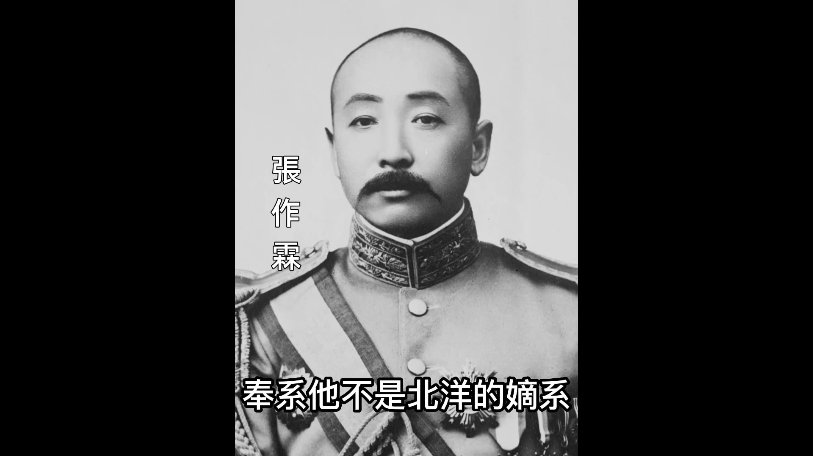
談到北洋的淵源，要追溯到第二次鴉片戰爭之後。當時，中國北方開設了三個通商口岸：登州（今煙台）、天津和牛莊（今營口）。負責管理這三地的官員稱為「三口通商大臣」，南方對應的職位則稱作「南洋大臣」。隨著時間推移，這些「北洋大臣」由直隸總督兼任，而「南洋大臣」則由兩江總督兼職。在清朝時期，直隸總督的地位非常高，當時由李鴻章擔任此職，他是晚清最重要的政治人物之一。
李鴻章同時也是「總理衙門大臣」，這個衙門負責所有外交事務。因此，當時的洋務運動大部分由他主導。北洋大臣的辦公地點在天津，由於大多數時間都在此處工作，故“北洋”的名號由此而來。“北洋”不僅是一個軍事系統，還具有一套文官體系。晚清時期許多從事洋務運動的人士皆屬於北洋系統。
在李鴻章去世後，接替其職位的是袁世凱。他自小站練兵起就培養自己的北洋系人馬，並成為清末改革的核心人物，此時的北洋人才濟濟。北洋將領不僅熟練於軍事，還具有開明思想，許多都是士官學校畢業。因此，在皖系執政時期可以說是中國近代史上民主實踐最為突出的一段時間。
張作霖因其土匪出身而被招安，成為奉系首腦；與此同時北洋內部僅剩兩大系統：即皖系和直系。其中「北洋三傑」的王士珍、段祺瑞及馮國璋各具特點，段祺瑞與馮國璋在袁世凱手下的表現特別突出，但因二人性格和政治態度不同，在袁世凱心中佔據的位置也有所差異。
在辛亥革命時期，袁世凱重出江湖，派馮國璋率軍收復武漢三鎮。馮國璋將領能力強勁，迅速擊敗了著名的革命黨將領黃興，但最終因任務完成後被換下而未獲袁世凱的特別賞識；相對之下，段祺瑞則因其在戰略上更懂得如何利用政治手段，在清廷與革命黨之間遊走，成功迫使雙方退讓並促成清朝政權瓦解和袁世凱成為大總統。因此，袁世凱視其為心腹，這也奠定了北洋集團內部段祺瑞與馮國璋兩位將領的特殊地位。
00:05:01
他們各自聚攏了一批人才，形成了一些派系。段祺瑞為安徽合肥人，稱「段合肥」，他身邊的人被稱為皖系；馮國璋則是直隸河間人，稱「馮河間」，與其關係親近者被稱為直系。然而，所謂的直系和皖系並非單純根據籍貫劃分，而是依據這些將領是否接近馮國璋或段祺瑞而來。早期的直系和皖系許多將領對於兩邊都保持良好關係。

在西南地區，陸榮廷及唐繼堯雖表面上對中央政府表示歸順，但實際上他們擁有獨立的軍事實力。陸榮廷控制著廣東與廣西，而唐繼堯則統治雲南、貴州和四川等地區。同一時期，在北方地帶，東北張作霖、山西閻錫山以及清朝巡防營出身的張勳均成為有影響力的軍閥。袁世凱去世後，這些軍閥之間已無一能夠號令群雄，中國進入了軍閥割據時代。
在這樣的局勢下，誰應該接任大總統職位便成了問題。民國初年，存在兩部約法：一是南京政府制定的《臨時約法》；二是袁世凱自定的《中華民國約法》，亦稱為《民三約法》。根據舊約法規定，副總統黎元洪應接任大總統職位；而依據新約法則需由金匱石室中的遺命來決定繼承人。開會時所取出的名單中包括了黎元洪、徐世昌及段祺瑞三人。
在這三個人選中，徐世昌首先退出，他提出推舉黎元洪，認為黎是北洋系以外的人，且與南方有一定聯繫，可促進南北統一。雖然徐世昌的資歷深厚，但由於手無實力並缺乏段祺瑞那麼高的聲望，因此自願退位，剩下則是黎元洪和段祺瑞兩人的競爭。就軍事實力而言，段祺瑞長期擔任陸軍總長，遠勝於沒有實力背景的黎元洪。
00:10:00
袁世凱去世後，北洋系統中公認的領袖為段祺瑞。段祺瑞不僅握有軍權，且享有崇高聲望。當袁世凱練兵時，北洋系統創辦了多所軍事學校，這些學校均由段祺瑞擔任總辦。因此，所有在北洋系統服役過的軍官都認可段祺瑞為他們的「老師」，連後來成為國民黨要角的蔣介石也不例外。這使得段祺瑞在北洋軍閥中的地位不可動搖。
然而，段祺瑞並沒有立刻登基大總統一職。經過深思熟慮後，他決定將這個位置讓給黎元洪。這是因為幾個原因：首先，南方各省自袁世凱稱帝以來已相繼獨立，希望恢復共和體制。根據舊約法，合法的繼承人應為黎元洪；其次，段祺瑞本人也傾向於共和體制，對袁世凱稱帝時表達了強烈反對並辭官以示抗議；最後，恢復共和體制意味著可以實施責任內閣制，總理的權力將會更大，總統則可能變為虛位。
段祺瑞決定讓出大總統位置給黎元洪，此舉獲得了南北兩地的一致認同，被稱讚為「再造共和」的功臣。
袁世凱臨終前曾留下遺言：「為日本去一大敵，看中國再造共和」。這句話包含深意，一方面指出他的去世可能會減少日本人入侵中國的阻礙；另一方面則預見了共和體制有可能在他死後恢復。
黎元洪隨即宣誓就任大總統。他是否會如段祺瑞所願甘心做一個虛君呢？讓我們來看看黎元洪的經歷：他畢業於天津北洋水師學堂，擁有兩位著名的老師——翻譯《天演論》並影響了清末民初改革思想的嚴復，以及武昌起義時清廷派去鎮壓起義卻未成功的海軍總指揮薩鎮冰。
黎元洪在甲午戰爭中幸存，後投身張之洞麾下，並多次被派往日本學習軍事，迅速崛起成為湖北新軍中的重要人物，職位升至協統（相當於後來的旅長）。儘管武昌起義初時他站在反對陣營，但很快轉變立場。當時總督瑞澂視黎元洪為一個老實人，實際上他的聲譽卻很高。士兵們因他在軍隊中的寬容態度而尊敬他。在武昌起義當天，黎元洪起初還在彈壓起義，然而不久後，他見勢不妙便轉變了立場。
這段歷史充分體現了中國北洋時期的復雜政治生態和各派系之間錯綜複雜的利益關係。
00:15:01
黎元洪在黎元洪逃走之後，也感覺到自身處境危險，因而並未返回家中，而是藏匿於其參謀劉文吉家。他還鄭重地將財產和家人托付給了劉文吉。對他而言，一個幸運的情況是武昌起義初期群龍無首、僅為士兵的暴動，且在起義成功之後，缺乏革命資歷的小革命黨人難以服眾。當時社會崇尚身份和地位，要想領導起義軍隊必須具有一定的傳統或革命資歷。因此，在起義之前，由於革命黨領袖提前暴露並多數已死或逃亡，那些殘存的革命黨人只得尋找擁有傳統資歷的人來統領。
這時，一位名叫吳兆麟的新軍隊官提出讓黎元洪擔任都督一職。吳兆麟與黎元洪有師生情誼，且士兵們也多數對黎元洪抱持好感。因此，黎元洪不僅未受追究，反而被推舉為都督候選人。
革命黨人在劉文吉家中綁出黎元洪，起初黎元洪誤以為自己將被處決，得知真相後仍然猶豫不決。由於革命黨人以他的名義發佈所有通電和文告，使得黎元洪被迫成為革命陣營的一員。
隨著革命形勢的變化，黎元洪最終正式出任都督。清廷來武昌鎮壓時，據傳他有與清軍通訊的情況，但總體來說他堅持下來了。
在辛亥革命期間，黎元洪是首義成功的象徵，甚至當孫中山到達武昌準備發動二次革命之際，黎元洪已經獲得了政治資本。
辛亥革命後，臨時政府成立，袁世凱出任大總統，而黎元洪則為副總統。縱使他多數時間並未掌握實權，卻擁有光環地位。無論是袁世凱稱帝還是張勳復辟時期，黎元洪均未變節屈從，用自己微薄的力量默默維護著南北和平。
黎元洪在辛亥革命時首開與袁世凱和談之先河，在孫中山發動二次革命前反對分裂，並堅決辭職抵制袁稱帝。這些行動顯示出他對於國家統一的貢獻。
黎元洪的人生轉折點集中在武昌起義爆發期間，其成為湖北新軍都督，以及因兩邊都不是的因素而被推上中華民國副總統的位置，在袁世凱去世後又繼任為大總統。
他可以說是整個民國時期最幸運的人物之一，但回顧他的生涯，這些轉折似乎多是由於大的歷史趨勢推動的結果，而非其主動選擇。
黎元洪擔任大總統後是否會展現個人意志，不再甘心當傀儡呢？這一問題將在下一期節目中繼續探討。今天的分享到此結束，接下來我們將聚焦於府院之爭和孫中山成立護法軍政府的相關歷史。
00:20:01
在袁世凱去世後，黎元洪繼任為民國大總統，段祺瑞則出任內閣總理。儘管黎元洪是總統，但實際上一切事務由段祺瑞主導，當時被稱作皖系的執政時期。
在段祺瑞執政期間，中央政府面對極大的經濟困境。自袁世凱時代起，地方稅款尚能向上繳交，然而到了段祺瑞掌權時，地方政府已不再向中央上解稅款，反而因各種理由向中央要錢。為維持運作，段祺瑞需要提供資金以促進各地事務的推展，但若無補助則難以進行。
段祺瑞政府財政的主要來源有兩部分：一是關余和鹽余（即從邊關及鹽稅中扣除庚子賠款後餘下的部分），二是幾條由中央管理的鐵路收入。由此可見，交通系組織之所以在當時顯得重要，是因為他們負責收取這些收入，因此段祺瑞政府最大的困擾之一便是缺乏資金。
此外，府院之爭亦是一大挑戰。「府」指北京總統府，「院」則為國務院。這兩者之間的權力界定模糊不清，肇因於《臨時約法》，該約法在袁世凱時期被孫中山設計以限制其權力，規定介乎半總統制與責任內閣制之間的一種制度。段祺瑞及其支持者傾向認為是責任內閣；而北京總統府則主張為半總統制。
在這場爭議中，徐樹錚成為了一個關鍵人物，他是段祺瑞的親信之一，曾擔任國務院秘書長。他經常以高傲態度到總統府要求黎元洪簽字，卻常引起工作人員的反感。儘管如此，雙方在權力爭奪中仍嘗試通過起草條例來解決問題，然而這些努力未能緩和緊張局勢。
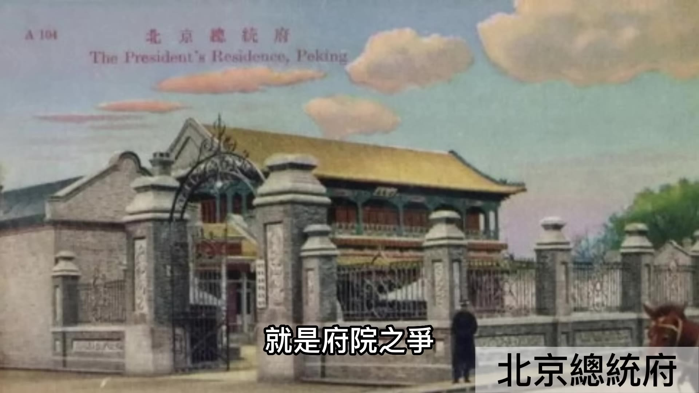
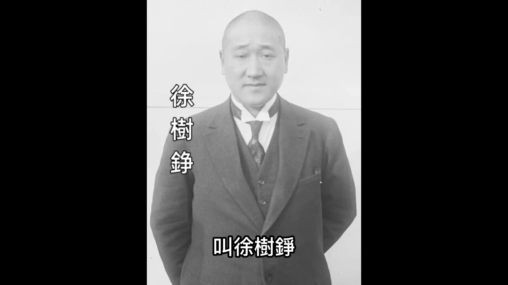
段祺瑞對黎元洪及總統府的態度相對尊重，並未動用武力解決爭議。他在執政期間表現出對共和制度的高度尊重，在言論自由、國會運作以及總統權限等方面均秉持此態度。
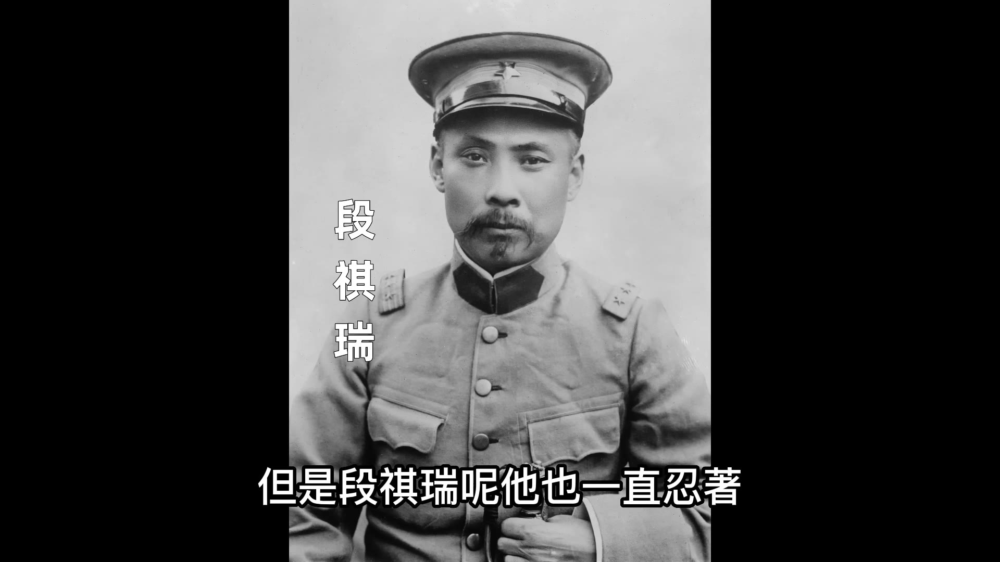
在處理國內政治問題時，段祺瑞也顯示了其韌性與克制。例如，在五四運動期間，許多學生上街遊行，甚至造成社會動盪；然而段祺瑞並未採取鎮壓措施。
1917年，第一次世界大戰進入第三個年頭，協約國（包括英國、法國和美國等）與同盟國（德國及奧匈帝國為首）之間的消耗戰進一步加劇。此時，協約國希望能讓中國加入其陣營，提供勞力而非士兵，以補充前線的人手短缺。
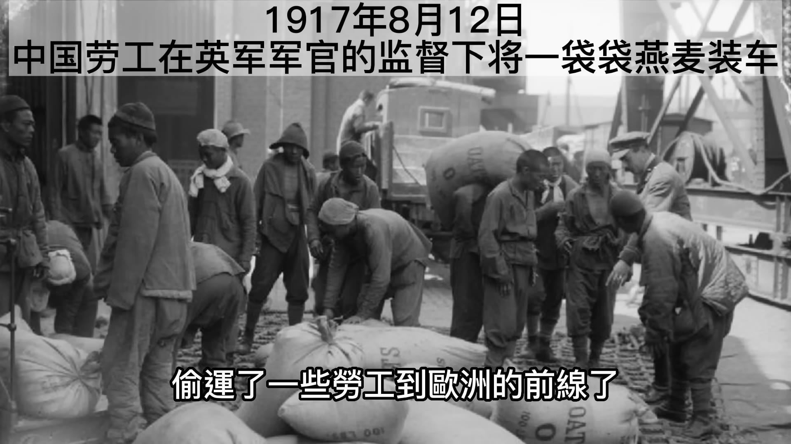
在這段時期，府院之爭和國際事務共同構成了民國初期的一系列複雜問題。
00:25:00
當時，英國人在山東威海擁有租借地，在當地觀察到山東人吃苦耐勞的精神特質，對此深感欽佩。他們特別偏愛招募中國勞工前往一戰前線工作，並已通過各種手段運送了部分山東籍勞工至歐洲參戰。然而，英國人的野心不止於此，他們希冀能進一步擴大招工規模而不僅僅是秘密行動，更希望促使中國打破中立地位而正式加入協約國陣營參戰。
一開始，中国政府包括段祺瑞、黎元洪以及國會的議員們都反對參戰。其中唯獨梁啟超表示贊成。梁啟超在民國時期一直具有相當的言論權力，在媒體界和政壇上都有顯著影響力。尤其是在段祺瑞執政期間，他參與國會頻繁，並緊密關注歐洲戰局。由於許多友人在歐洲服役或工作，他們隨時向梁啟超通報戰情進展。梁啟超經過分析認為，儘管德國初期略佔優勢，但協約國最終必勝無疑。他多次遊說段祺瑞支持參戰，並強調英國人願意替中國暫緩支付庚子賠款作為交換條件。
這一建議令段祺瑞動搖，因為暫緩賠款意味著政府可以獲得額外的資金供應，有助解決當前財政困局。此外，若協約國獲勝，則德國和奧匈帝國在中國的所有權益包括賠款都將失效；而日本也在此時加入勸說行列，主動提出貸款或協助國內基礎建設等好處。面對如此誘人的條件與戰略考量，段祺瑞最終決定積極推動參戰。
然而，總統黎元洪和國會的其他成員對此持懷疑態度。他們擔心中國若加入協約國卻輸掉這場大戰，將面臨國家滅亡的風險，因此極力反對參戰決議。黎元洪更是態度堅決，拒絕讓步，認為這是攸關國存亡的大事。
面對強烈反對聲浪，段祺瑞決定採取行動。他召集北洋系各省督軍組織“督軍團”，試圖通過影響力較大的武官來施加壓力迫使黎元洪改變立場。督軍們在袁世凱去世後已成為事實上的地方實權人物，各自掌握著不同省份的控制權。段祺瑞利用這個由北洋系組成的“督軍團”，成功說服這些武官支持參戰。
隨著督軍們的支持，這些武將開始直接施壓於黎元洪，並試圖通過組織公民團來影響國會態度，企圖迫使他們接受參戰決議。然而，這種手段卻引起了媒體與民眾的反感。當媒體揭發出組織公民團背後的真實目的時，段祺瑞內閣陷入風波之中。隨著輿論壓力日增，其内阁成員紛紛辭職，只剩段祺瑞一人孤立無援。
梁啟超在當時的政壇和媒體界都擁有強大的影響力，他對西方戰局有著深刻的洞察與判斷。他的一系列分析最終說服了段祺瑞，促成了中國參戰的決策。
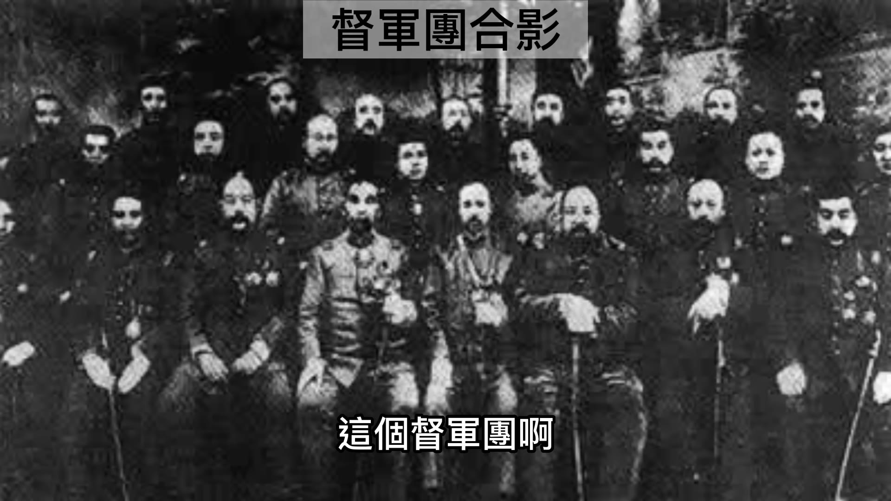
段祺瑞在各種壓力下，終於借助武官們的支持，企圖實現參戰目標，但這也引發了更大規模的政治危機。
00:30:00
段祺瑞在力圖使參戰提案通過國會未果，且無法讓黎元洪簽署相關文件的情況下，內閣成員紛紛辭職。然而，在被免職後，黎元洪仍面臨著北洋系督軍們的不滿，這些督軍因段祺瑞被解職而宣布獨立，並威脅要進京討伐黎元洪。由於黎元洪自身沒有足夠的軍事實力，他只得求助於北洋的老將徐世昌進行調停。
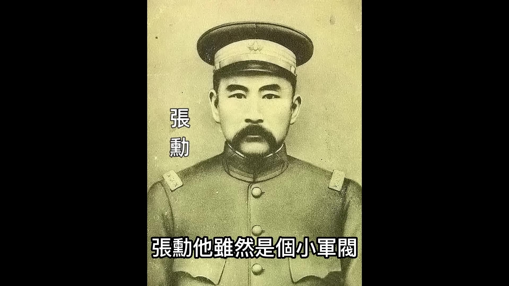
徐世昌雖表示願意協助調解，但因涉及利益衝突而無法有效介入。在此時刻，張勳自告奮勇出面調停。他之所以能獲此機會，原因是他不僅是一名軍事強人，還因其慷慨大方在督軍團中享有特殊地位。張勲以13省督軍團盟主的身份，通過舉辦招待會的方式贏得了眾多督軍的支持。
然而，張勳實際上進入北京城後並非真心調停，而是準備復辟清朝。他首先迫使黎元洪解散國會，隨後開始推翻共和政體的計劃。面對此危機，黎元洪在逃亡前任命段祺瑞為國務總理，指示其組織討逆軍。實際上，在張勳行動之初，段祺瑞便已知曉他意圖復辟清朝。
籌備對抗張勳的任務落到了段祺瑞身上，但他面臨著資金和兵源兩大難題。首先，他需要資金來籌建討伐軍隊，這時曹汝霖從日本三菱公司為他借得100萬日元，相當於當時中國的100萬銀元，再加上其他北洋系官員的援助，最終湊足了200多萬的軍費。其次，在兵源方面，段祺瑞利用自身的影響力與李長泰達成協議，使第八師同意出兵；同時，他還獲得了馮玉祥部隊的支持，儘管該旅在之前的內鬨中被免職，但其忠誠度仍較高。馮玉祥在辛亥革命時曾參與反清鬥爭，因此對於張勲復辟一事持強烈反對態度。
段祺瑞和馮玉祥合力組織的軍隊迅速展開行動，準備擊敗張勳並恢復共和政體。
00:35:02
段祺瑞計畫利用馮玉祥復職以助其討伐逆黨，這一策略果然奏效，馮玉祥答應了。隨後，直隸曹錕部隊因在張勳復辟後的官職安排上與曹錕產生矛盾，亦轉而加入討伐行列。至此，段祺瑞已組建足夠軍力，在張勳復辟後第三天即宣布討逆。原本支持張勳復辟的各督軍尚未表态，但隨著段祺瑞打出旗幟，他們皆不再擁護張勳，轉而支援段祺瑞，因他此時仍是北洋系的老大。
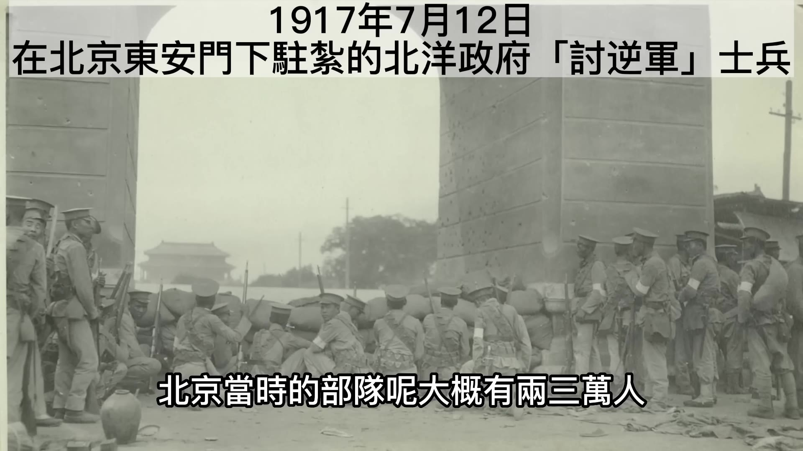
北京當時有兩三萬人駐軍，這些部隊原本支持張勳，但在段祺瑞發動討逆後，全數倒戈。此中有個師及一個混成旅反對張勳。張勳僅帶五千人進京，面對如此龐大的反擊力量顯然不足，因此在讨伐軍來臨時未遭激烈抵抗便撤退了。段祺瑞迅速恢復共和體制，成為三造共和的功臣。第一次是辛亥革命時促成了南北和談；第二次是在袁世凱稱帝後協助恢復共和體制；第三次則是此次張勳復辟事件。

討逆成功後，段祺瑞請馮國璋暫代大總統職務，此時國會已被黎元洪解散。由於參戰無需再受阻力，中國正式宣布參戰，庚子賠款暫停支付，關稅與鹽稅得以留用，國家財政狀況因此改善。此外，日本貸款陸續到位，段祺瑞的資金日益充盈。
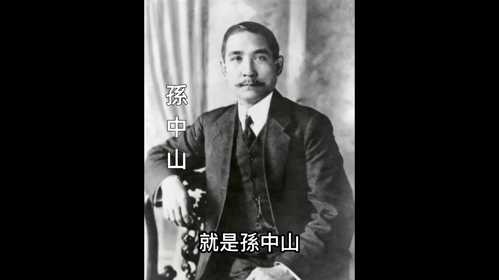
孫中山在此背景下重新組織中華革命黨並解散其原有形式，僅有少數原同盟會成員加入新黨派。在是否參戰問題上，孫中山持中立態度，主張中國不宜介入世界大戰。然而，在梁啟超等人的支持下，段祺瑞最終決定參戰，協約國則同意提供資金援助。德國公使辛慈雖力圖延緩中國參戰並私下與段祺瑞接洽，但其提議被拒。
在張勳復辟期間，他獲得德國領事館兩百萬支持款項，顯示了德國對避免中國加入協約國陣營的迫切願望。
00:40:00
張勛復辟僅持續十二天便宣告結束，此時辛慈仍未將賄金交予張勳。其後，辛慈轉向尋找反對段祺瑞政府的力量，並找到了孫中山，通過中間人的協調，孫中山獲得了德國提供的一筆資金——二百萬銀元。這筆款項對當時資金匱乏的孫中山而言意義重大。
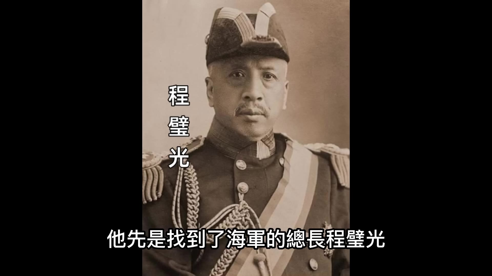
為籌備反段祺瑞政府的行動，孫中山利用這筆金錢開始運作。他首先聯絡了海軍總長程璧光，因為在是否參戰這一問題上，雙方意見有共鳴。孫中山答應給程璧光三十萬銀元作為其脫離北京政府的條件，並成功說服程璧光及其手下的艦長，帶領海軍南下廣州，準備成立新的政權。
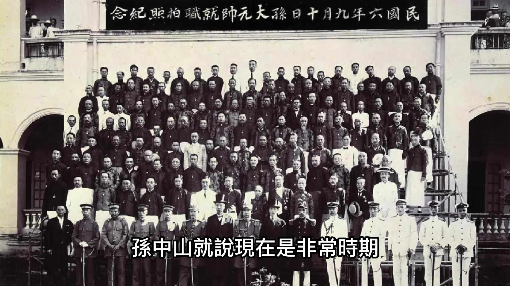
孫中山進一步進行國會議員的招攬工作，希望能得到第一屆國會議員的支持。當時北京政府已解散了原有的國會，孫中山則呼籲議員們南下廣州組建新的政府。然而他能拉動的議員僅有十幾個，達不到法定人數要求。因此孫中山決定在非常時期召開非常國會，以此為基礎成立了護法軍政府，稱其目的是維護第一屆國會和《臨時約法》。

在當時的情況下，孫中山的實力相對薄弱，國民黨組織也顯得有些零散，僅能在南方如廣東、四川、貴州等地獲得一些武裝力量的支持。他選擇將軍政府設立於廣州，然而實際上該地屬於廣西軍閥陸榮廷管轄範圍內。
陸榮廷之所以允許孫中山在其領地內建立新政府，是因他害怕段祺瑞對其西南地區有所圖謀。若無北邊的壓力，陸氏軍閥們間很快便會發生內訌；一旦北方有壓迫性動向，他們則可能團結一致應對。對於段祺瑞而言，這種分裂局面是他所不能容忍的。於是，在資金充裕的情況下，他正準備武力統一南方，孫中山此時的舉措為其提供了一個很好的藉口。
隨著南北雙方矛盾日益尖銳，北洋時期的第一場大戰——南北戰爭隨即爆發，這標誌著中國進入了新的歷史階段。
00:45:00
在一般人的印象中，張勳似乎並非一位推動歷史進程的重要人物。相反地，他常被人聯想到的是“復辟”這一名詞，即企圖逆歷史潮流而行。許多人將其視為一個笑話或鬧劇，認為這種嘗試最終必將失敗，因為人們普遍認為共和政體是時代的主流選擇，復辟帝制則被視作反動行為。
然而，在民國初期，袁世凱復辟企圖已然告終之後，張勳仍舊意欲恢復清朝政權。這表明其背後可能存有更複雜的原因，而不能簡單地以“人心嚮往共和”來解釋。事實上，當張勳率領五千名頭戴辮子的士兵進入北京，宣布清帝復辟之際，不僅市民們歡欣鼓舞、家家戶戶掛起龍旗，連許多商販也紛紛出售龍旗，反映出一時之間對清朝復辟的熱烈歡迎。當時在北洋時期，普通民眾並無多大顧慮於自己的政治行為是否正確，這些挂龍旗的老百姓顯然是真心地歡迎皇帝返京，而非被迫所為。
此外，在張勳發佈全國通電時，許多省份的督軍亦將其視為正當的政治行動，甚至公開掛出龍旗以示支持。這顯示在一些地方軍閥心中，清朝復辟並非完全不可接受之事。即使到了民國六年，距離清廷倒台已有六年之久，仍有相當數量的人們對昔日的皇權政體懷念不已。
那麼，在從清代轉向民國時期的過程中究竟發生了什麼變化？為什麼會有如此多的老百姓和地方軍閥希望恢復清朝政體呢？這一變革不僅意味著政治制度的轉換，更牽涉到整個中國社會倫理架構的巨大轉型。長期以來，在這個國家裡君臣父子之間形成了一套根深蒂固的權力關係和道德規範，其維繫了兩千多年的治理秩序。一旦皇帝不復存在，這種傳統的倫理基礎也就蕩然無存，導致社會大眾陷入一種迷茫與困惑之境。
民國成立後，基層治安顯著惡化，非法團體如幫會、土匪等更加猖獗，私鹽販子的活動也變得愈發猖狂。進入軍閥時期，這種現象更是變本加厲，各路軍閥在自己的地盤上各行其是，社會秩序陷入混亂狀態。對於廣大老百姓而言，他們並不在乎究竟是哪種政治體制執政，唯一看重的是能否過上平穩安定的日子。
當張勳復辟的消息傳開時，山西的一位鄉紳劉大鵬表現出極大的興奮與期待；而後得知間錫山宣佈討逆後則感到匪夷所思。對於知識分子和士紳階層來說，他們更看重的是社會能否重新恢復秩序而非特定政體的更替。
實際上，在民國時期的政治環境中，缺乏統一強有力的中央政府來維護全國範圍內的穩定與和平，使得地方軍閥權力日漸擴張。對於這些實力派人物而言，皇帝的存在提供了一種更高層次的效忠對象，從而減少了彼此之間的爭鬥和不協調；沒有皇帝則意味著失去了這層統一的維系力量，每一個省區的督軍不得不面對屬下背叛與不服從的巨大風險。
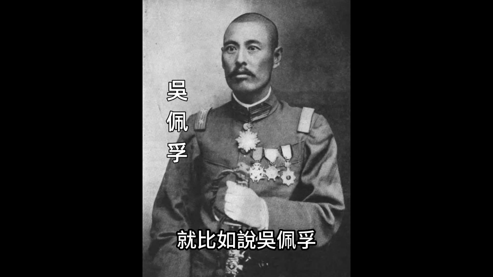
這就是民國初期社會狀況的一個側面，軍閥們之所以不完全反對張勳復辟，背後的原因是複雜的。因此，決定是否能夠恢復清朝政權，最終還是取決於實際的政治力量而非單純的民心所向或民意傾向。
00:50:02
當君主制度崩潰後，儒家所提倡的忠君思想陷入了困境，需要重新解釋什麼才是真正的「忠」。有人認為，忠君僅是效忠的一部分，真正的忠應是忠於自己的內心、人、事及長官；然而這種觀念並未能有效解決不忠現象，甚至最終因部下的不忠而失敗。例如馮玉祥被稱為「基督將軍」，他本人和部隊都信奉基督教，但實際上，這是否真能解決忠誠問題仍存疑問，尤其是在他與俄國走得較近的時期，其後又一度信仰共產主義。
不僅是宗教，在政治體制層面上也有人嘗試回歸帝制以期解決忠誠問題。最直接的做法便是恢復過去的君主制度。因此，袁世凱曾企圖稱帝，而張勳亦參與其中。在討論張勳復辟之前，我們先來了解一下這位人物。
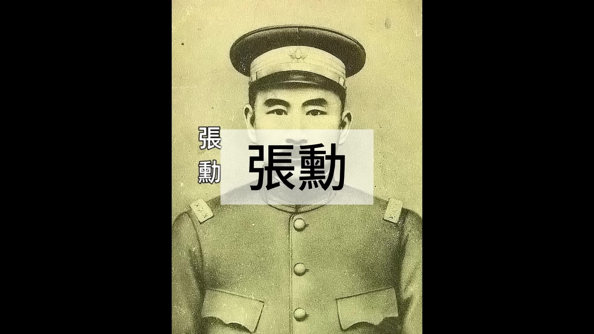
張勛為江西農民出身，早年孤苦無依，軍旅生涯從中法戰爭開始，鎮南關之役中的英勇表現使他屢立功勞。儘管並非袁世凱嫡系，但他因及早加入北洋而受到重視，在山東巡撫任上被派去剿滅義和團，其勤奮勇猛的態度使其獲得了袁世凱的信任與提拔。
慈禧太后回京時，張勇負責護衛，這份忠誠使他獲得了皇後的信任，並在大雪之夜於帳篷外站崗。當庚子事變中背叛者眾多時，張勳的忠心顯得尤為難能可貴，因此慈禧讓他守衛皇城午門。
這一職位通常由滿人子弟擔任，但因張勇的表現，慈禧讓他接掌這份要務。其後在東北與馬賊鬥智鬥勇，徐世昌也對他十分賞識，並提拔他為提督、巡防營統領等職位，在辛亥革命前夕被授江南提督。
張勛的忠誠和感恩性格顯著，尤其對慈禧太后更是發自內心。當1908年得知慈禧死訊時，他的反應特別悲痛。此外，他在軍事上也頗有實力與戰略頭腦，統帥巡防營期間表現出色，南京保衛戰是他最輝煌的一役。
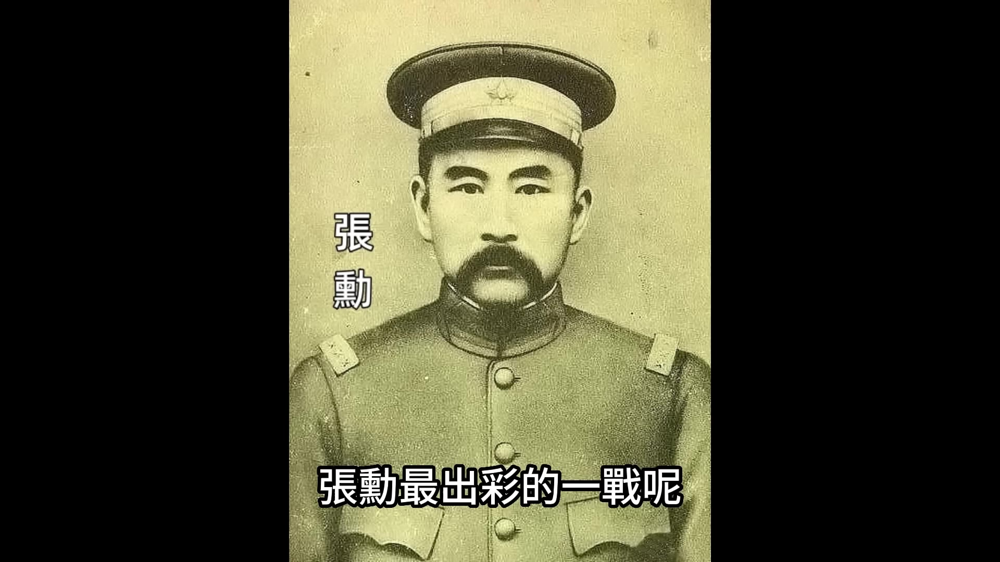
在辛亥革命時期的南京守衛戰中，張勛面對新軍第九鎮的叛亂，奮勇抵抗。他的巡防營雖只有約一萬五千人分散各地，卻是少數真正為清朝而戰的部隊之一。
00:55:01
在北洋時期，清廷巡防營因缺乏抵抗精神，致使一營反亂往往能成功。當時，張勳率領第九鎮軍隊直逼南京城，卻面對著內外夾攻的局面——革命黨於城內活動，開放監獄釋放囚犯並武裝他們，而新軍第九鎮則在外圍施壓。
在這種危急時刻，張勳憑藉手上的兵力成功掃平了城內的反亂，並將入侵的新軍驅散。第九鎮首領徐紹楨逃至鎮江，革命黨的江浙聯軍隨即組成大規模軍團對南京進行圍攻。此聯軍由江蘇、浙江等地軍隊聯合而成，人數約兩萬，且在武器方面佔有絕對優勢，如火炮和機槍等遠勝於守軍。
面對聯軍的猛烈進攻，張勳表現出了極大的勇猛性與決心。他率領土兵奮力死戰並毫不留情地處置俘虜，致使聯軍損失慘重而未能成功突破南京防禦。然而隨著聯軍從上海運來了多門攻城大炮，南京城外的高地要塞相繼陷落，使得整座城市完全暴露於敵方火炮射程範圍內。
在此形勢下，兩江總督張人駿派遣代表與聯軍議和，除要求釋放張勳外其餘條件均獲通過。然而，聯軍對張勳深感憎恨並拒絕這一條款。最終，張務在無路可退的情況下撤出南京城，由此結束了這次南京保衛戰。
清末民初時期的新軍實際上並不具備強大的戰鬥力。儘管他們依照西方模式進行訓練且擁有先進武器裝備，但由於晚清十年間缺乏實戰經歷導致新軍的真正戰鬥經驗不如張勳剿匪時來得多。隨著南北和談的成功及清朝帝制的退位，袁世凱成為了民國的首任總統。
對於民國政府發佈的政令，張勳拒絕遵從，不僅自己不剪辮子，還禁止部下士兵剪掉辮子。此後當孫中山發動二次革命時，清帝制餘孽張務再度奉命攻打南京，在這次攻城戰中他表現得格外賣力。因為張勳對革命黨的痛恨與日俱增，而此次反轉形勢讓他率領一萬多人及三個師向革命黨發起猛攻，最終成功佔領了南京。
論功行賞時，張務被封為江蘇都督，但由於徐州地區的文化相對落後，加之他所統帥的部隊皆留著長辮子，導致該軍團與當地百姓格格不入。特別是一次由張勳部下士兵引發的外交糾紛令外國人極為不悅，他們聯合起來反對張勳繼續留在江蘇擔任都督一職。
在這種情況下，張勳辭去了江蘇都督之職並退守徐州。值得一提的是，儘管出身農民且素來被視為粗魯之人，但張勳竟是一名極擅長賺錢的軍閥。他投資許多新式產業，在海州鹽業方面獲得了補充，並且還在偏遠地區種植鴉片以增加收入。
袁世凱稱帝失敗後，徐州成為北洋軍閥的重要據點。在此背景下，張勳利用他在商業上的成功與個人魅力召集了四次督軍團會議，這些會議逐步演變為左右時局的重要力量之一。例如第一次會議於袁世凱稱帝失敗之後召開，由馮國璋組織；第二次則在黎元洪繼任總統後舉行，此次會議確立了段祺瑞執政的主導權。

01:00:01
第三次開徐州會議主要是為了討論中國是否應該參加第一次世界大戰。
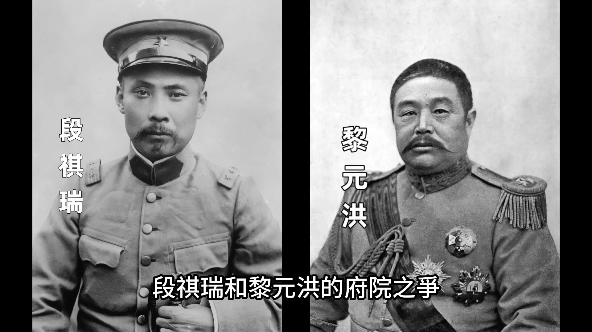
段祺瑞當時主張對德宣戰，並欲以此向總統黎元洪施加壓力，於是他聯繫了督軍團的諸多成員，包括張勳和各省督軍，在徐州召開了一次會議。起初，督軍們對於參戰持不同意見，但經過段祺瑞的協調後，表面上都表示支持。然而，當督軍們進京直接干預總統與國會時，張勳仍舊拒絕參戰。在此期間，督軍團在北京組織公民團大鬧國會，並最終因媒體曝光而引起輿論壓力，導致段祺瑞內閣成員紛紛辭職。黎元洪趁機簽署了一道總統令，將段祺瑞免職。
這舉動徹底激怒了北洋系督軍們，他們紛紛宣布獨立並組織力量準備對北京進行武力干涉。段祺瑞本人也在被免職後一氣之下離開北京前往天津。黎元洪在這種危機下開始感到恐慌，首先他尋求徐世昌出任總理來調停局勢。然而，徐世昌拒絕了這一請求，因為他不能接受前任總統遭免職的現實。
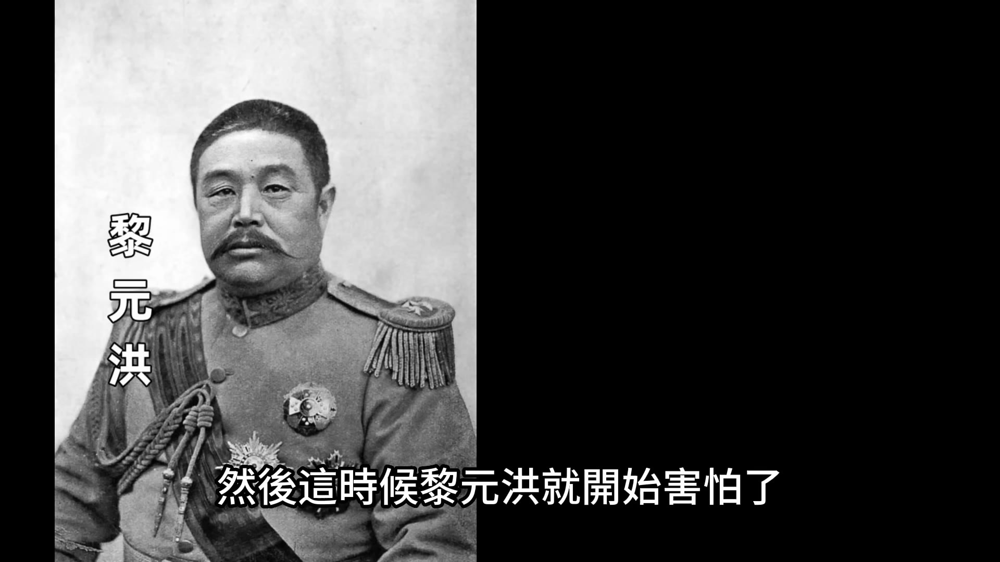
接下來黎元洪轉而請王士珍出任總理，但王士珍同樣婉拒。眼見北洋系督軍已無法調和，黎元洪只好求助於與北洋系有關係的李經羲，他認為以李經羲的身份或許可以緩和矛盾。李經羲答應出山並提出由張勳擔任調停人這一條件，因其相信張勳能代表督軍團的利益。
會議上，張勳明確提出了要恢復清朝政權的主張，現場的督軍們大多數都口頭同意了這一提議。黎元洪為了請張勲進京調停，不得不解散國會以迎合對方的要求。
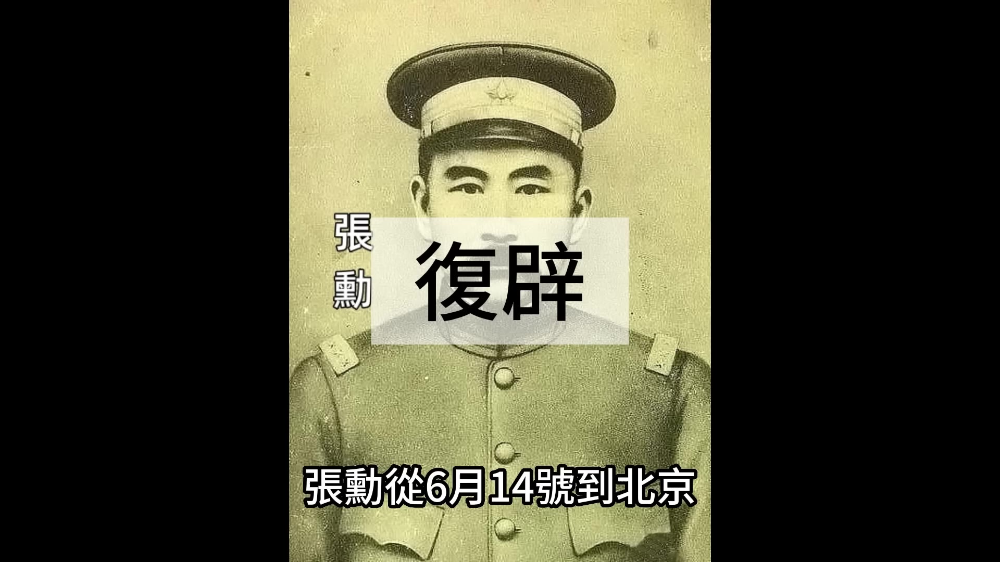
在這過程中，黎元洪看似得到了喘息的機會，但隨著張勳帶領其軍隊進入北京城並宣布復辟，情勢再次變得緊張。從6月14日至7月1日，張勳宣佈恢復清朝政權，在此期間他積極展開活動以達成其目標。
01:05:00
當時張勳與一些清朝遺老商議如何進行復辟，探詢他們的支持態度。得到的回應相當正面，北京實力派如王士珍、江朝宗等人亦未反對。在六月三十日晚上，張勳正在江西會館看戲時，戲還未完，他就帶領一群人進宮請求宜統皇帝復辟。七月一日，北京街頭便換下了五色旗，升起黃龍旗。
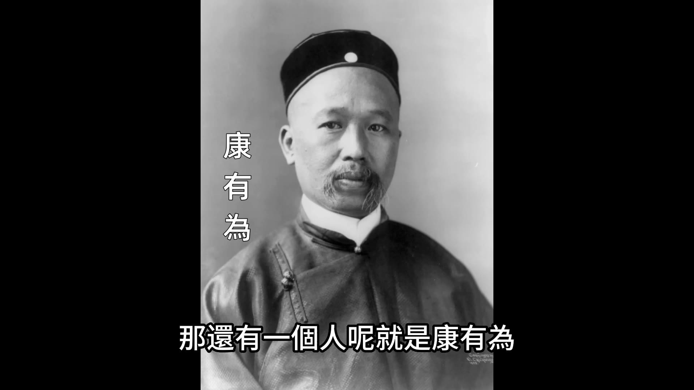
在這場復辟中，協助張勳的文人多為清朝遺老，如沈曾植、劉廷琛等人。其中值得一提的是康有為，雖然平時與張勲關係一般，但因名氣很大，在後續談及復辟時經常被提及。當時「文武二聖」之說甚囂塵上，武指張勳，而文則指康有為；然而實際操作中，張勳並未採用康有為的方案，而是選用了沈曾植近乎君主專制的方案。
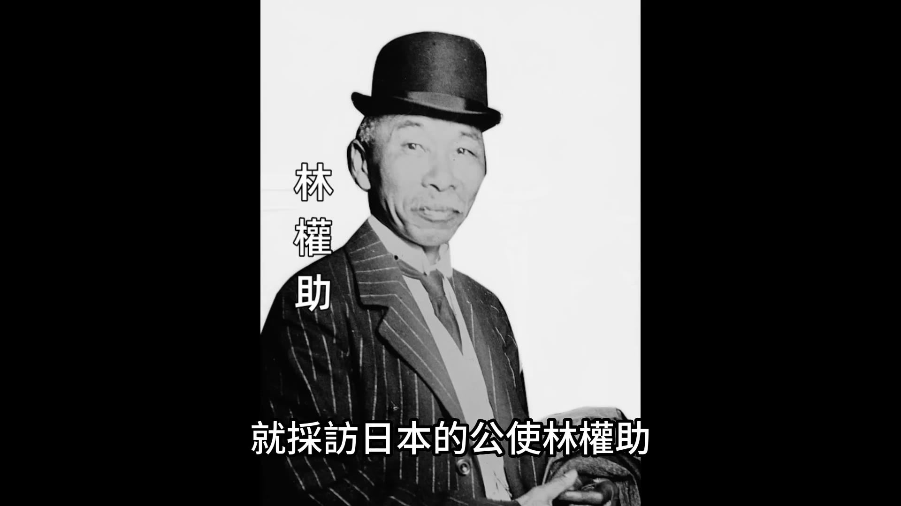
這群操盤復辟的遺老特別強調要防止滿人親貴干政，因為他們認為這是清朝衰亡的主要原因之一。然而，滿人的王公貴族對此則相當不以為然，因他們自視為清室復辟的最大受益者，理應參與其間。
當時的外國公使如何看待此事？記者採訪了日本公使林權助，他認為君主立憲與民主共和各有利弊，但張勳所奉行的是落後的君主專制體系，聚集了一幫過時官僚，形同古董陳列館；對於沈曾植等人而言，既然現行民國體制失敗，民意又傾向於清室復辟，那麼還原傳統的大清可能更好。
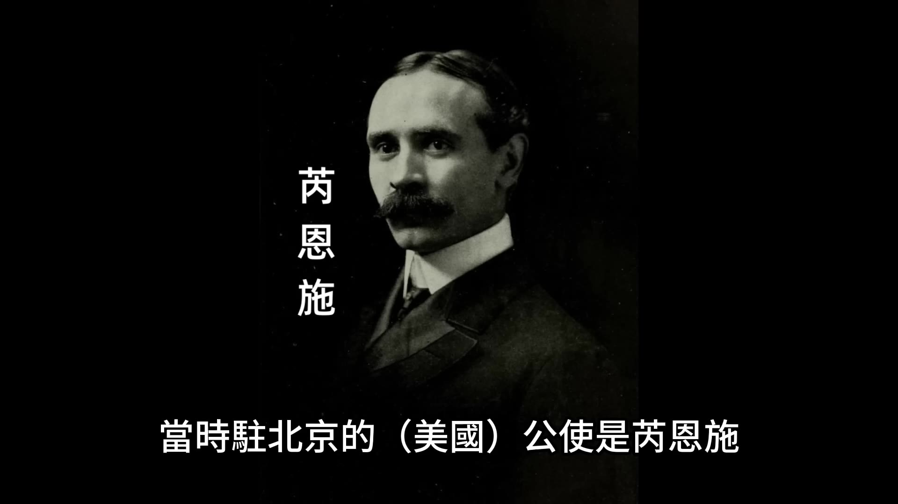
據駐京美國公使芮恩施回憶錄所述，當復辟消息傳開時，北京城內群情激動，一派歡騰景象。五色旗被換成黃龍旗，全城迅速呈現節日般的喜慶氛圍。對於小皇帝溥儀而言，此次復辟純屬意外。當時他僅十二歲，對復辟之事並無了解，在接到張勳請求時甚至問道：「大總統怎麼辦？是不是也給他優待政策？」這反映出溥儀完全是被推上皇位的，對於此次復辟的原因也一無所知。
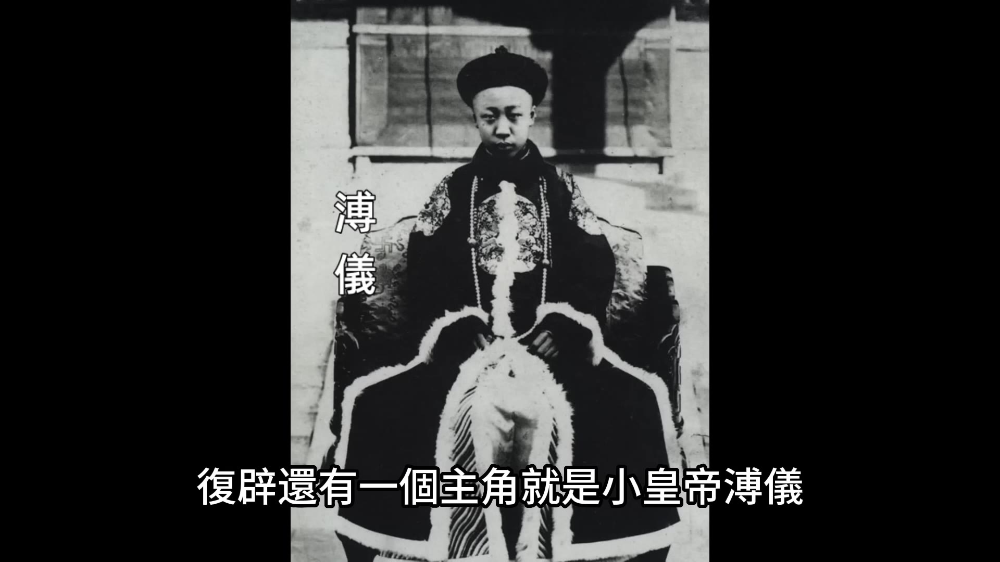
當此之際，北京城內的大總統黎元洪又作何反應呢？黎元洪對此次復辟始終蒙在鼓裡，直至最後才得知消息。面對如此局面，他並未屈服，整個北京城已經換上了黃龍旗，唯有總統府上仍掛著五色旗。黎元洪深知自己之所以有此地位全因武昌起義建立共和制，因此決心堅守這一底線。隨後，黎元洪躲入日本領事館，下令重新任命段祺瑞為國務總理，發動討逆之兵；並電請副總統馮國璋代行總統職務。
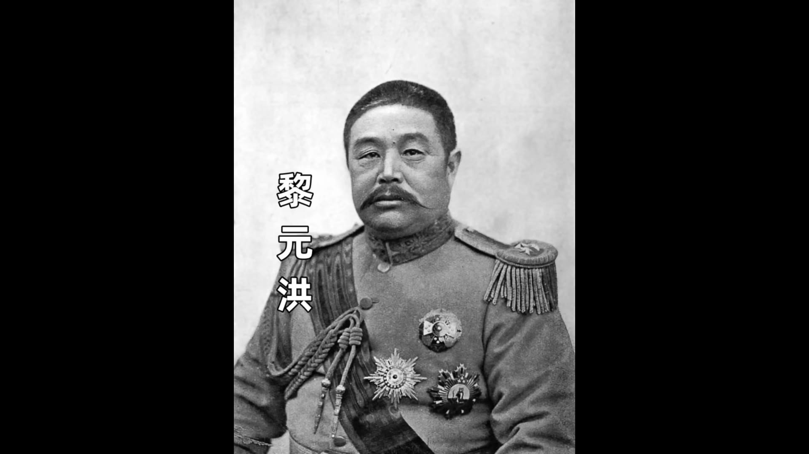
最終，由段祺瑞組織的聯軍開始討伐張勳。在此次反復辟行動中，梁啟超擔任起草討逆檄文之重任，文字鏗鏘有力，旨在捍衛共和體制。
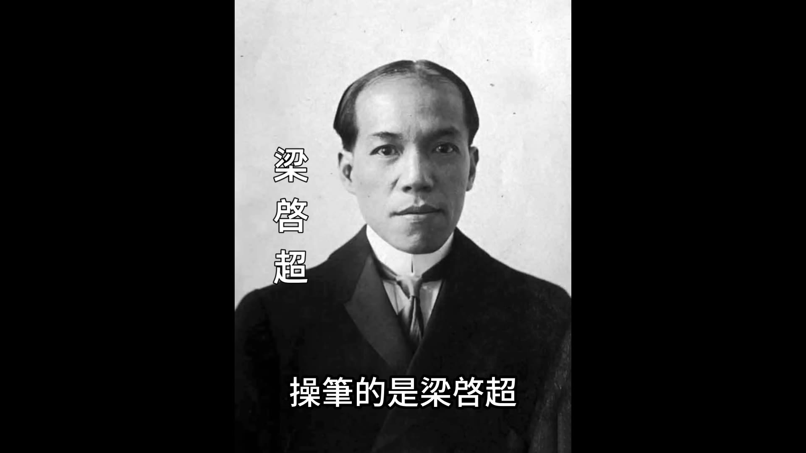
有趣的是，在此次事件中，康有為和其門徒梁啟超表現迥異。前者協助張勳復辟清朝帝制；後者則與段祺瑞聯手反對君主專制。
對於北洋系的這些督軍團而言，他們又將採取何種態度？
01:10:00
當張勳答應支持清朝復辟之際，段祺瑞卻打起討逆大旗。隨後，原本跟從張勳的部隊紛紛轉而支援段祺瑞，使得張勳在北洋軍中的勢力逐漸被排擠。
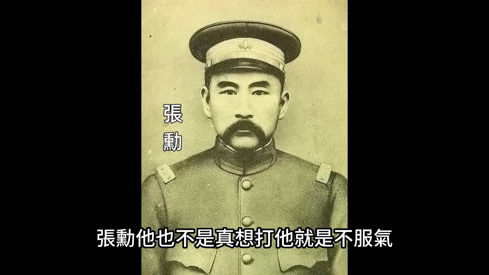
當時北京駐軍約兩三萬人，分成一個師和一個混成旅。這些部隊本來都站在張勳一方，但隨著段祺瑞討伐軍的逼近，他們又迅速轉向支持段祺瑞成為「討逆軍」，對抗張勳。面對討逆軍兵臨城下之勢，張勳選擇將兵力撤退至天壇和皇宮一線進行抵抗，而不是立即撤離。
張勳並非真心想要與段祺瑞開戰，他只是在理論上堅守自己的立場：「主張復辟不僅是我一人提出來的，很多民國官員都曾表態支持，現在又反悔討伐我。我要把我們之間往來的所有函電公開，讓民眾看清他們這些人的真面目。」張勳是一位非常執著的人。
當張勲撤離北京後，段祺瑞的部隊才開始使用重炮攻擊，將張勳在北京的宅邸炸平了。「討逆」過程看似陣仗浩大，但實際上並沒有發生太多的直接衝突。在這個過程中，僅有幾個人因為流彈受傷。
隨著張勳被趕走，段祺瑞成為「三造共和」英雄，名正言順地坐回總理位置，而黎元洪總統也在此後下台，由馮國璋代理总统一職。由於張勲復辟是黎元洪自己招致的結果，因此段祺瑞重新掌握政權顯得合情合理。
有人懷疑此事件背後是否存有段祺瑞的陰謀，因他與黎元洪關係破裂時，唯一能夠挽回臉面的方式就是通過武裝行動將黎元洪趕下台。倪嗣衝聲稱要代為出頭帶兵進北京討伐黎元洪，但這類舉動屬於非法政變，在法律上並無法獲得正當性。然而黎元洪自己請來張勳復辟的行為改變了這種情勢，使得段祺瑞能夠藉著「討逆」重新執掌大權。
事實上，根據當時的情況顯示：黎元洪完全不知道張勳欲進行復辟；而段祺瑞則從一開始就知道這個計劃。當張勳路過天津時還特地拜訪了段祺瑞，而後者也確實告訴他如果真的要復辟就要做好被攻打的準備。但這番話更像是玩笑話，並未對張勳構成實質性的威脅。
最終，由於德國在中國勢力被日本取代，加上張勳反對段祺瑞對德宣戰背後有著德國的支持，因此當張勲失敗時德國人便將他接走。自此之後，日本人通過西原借款進一步支持了段祺瑞的執政地位，使他在北洋政府中達到全盛時期。
隨著張勳復辟事件落幕，段祺瑞得以名正言順地成為「三造共和」英雄重返總理之位，同時也揭開了皖系軍閥統治中國的局面。
01:15:00
孫中山在广州另立政府，成立了一個護法軍政府，其目標一直為北伐。同時，段祺瑞也想藉此機會以武力統一南方。要達成這個目的，段祺瑞需要完成兩項工作：一是建立自己的軍隊；二是選出一個能聽他指揮的國會。
首先，在編練軍隊方面，我們通過段祺瑞討伐張勳的過程可以看出，雖然段祺瑞擔任陸軍部長多年，但他並沒有自己直接掌控的部隊。在討伐張勳時甚至需要花錢雇用別人的軍隊來完成任務，這在北洋時期顯然是不利於他統治和維持權力的。因此，段祺瑞決意要編練一支屬於自己的嫡系軍隊。
其次，在國會方面，段祺瑞執政初期的最大掣肘是國會，無論是要幹什麼都得經過國會批准，而國會往往與他的想法相悖。在袁世凱時期選舉出來的國民黨議員佔多數，使得國會和段祺瑞本來就不是一條心。張勳復辟時逼迫黎元洪解散了第一屆國會。而在趕走張勳後，段祺瑞也不打算恢復這個他無法控制的國會，而是希望重新選舉一個聽話的新國會。孫中山正是利用此情節建立護法軍政府，聲稱維護原國會權威。
在軍事和政治兩方面都穩固以後，段祺瑞才能確保他的統治根基穩定。要完成這些目標，最重要的就是錢的問題。在一戰爆發後協約國答應可以暫緩支付庚子賠款給中國，但仍遠不足夠支撐段祺瑞的需求。其最主要的資金來源是日本的西原借款。在北洋時期，每個軍閥背後都有列強支持，而且有的軍閥在不同时期有不同的外國支持者。這些軍閥大多數想借此擴張實力，而並非真心賣國。
孫中山最初用過日本的錢來進行革命活動，後來又轉向蘇聯尋求支援，這並不代表他賣國，而是為了救國的目的。段祺瑞亦是親日派，最大的資金來源就是日本。當袁世凱執政時期的大隈內閣對華策略主要是搗亂型的，即支持所有與中央政府對立的力量，例如孫中山革命黨及滿清宗社黨。
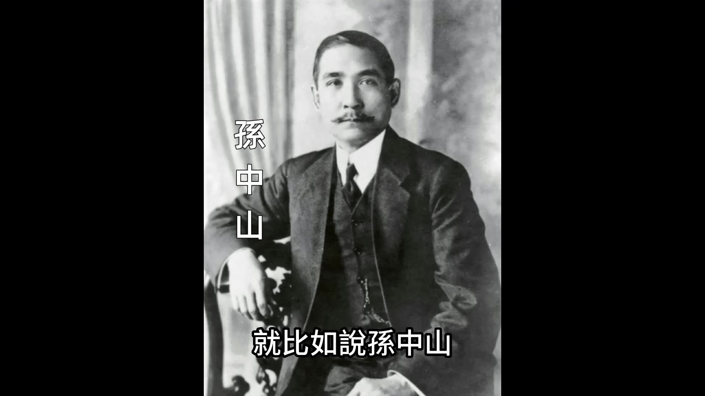
在辛亥革命初期，日本就出錢支援革命活動；當袁世凱稱帝時，又資助護國軍。這種做法使得中國對日感情惡化，不僅民間反感，連親日派也不再支持。隨著歐洲一戰爆發，英國、法國、美國和德國都無暇顧及中國事務，日本則趁機擴張其在華勢力，如吞併德國在青島的殖民地並迫使袁世凱簽訂二十一條密約。
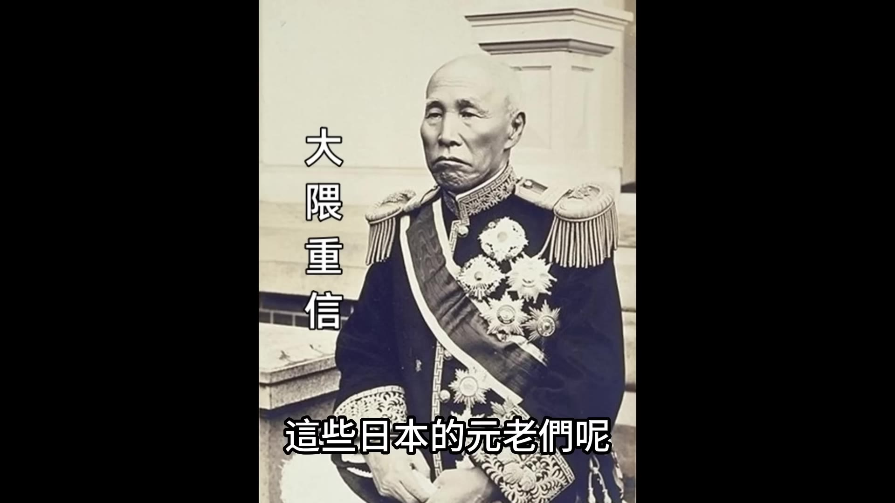
這些舉動進一步激化了中國對日的反感情緒，也導致日本與其他外國列強關係惡化。大隈內閣因政策受批評而倒台後，寺內內閣上台執政。此時正值袁世凱去世、中國進入軍閥割據局面之際，日本第一階段目標——讓中國陷入分裂——已經部分實現。
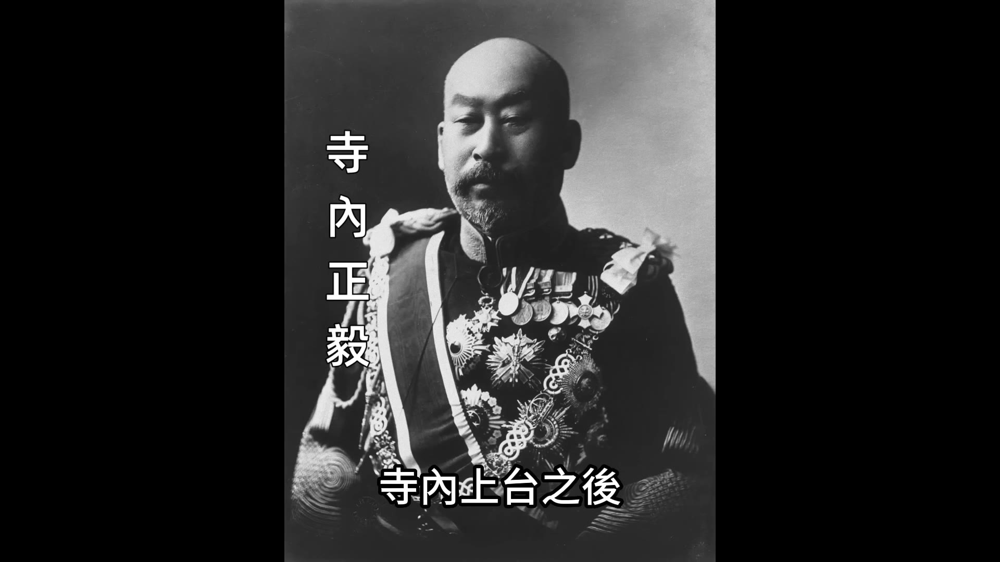
然而，中國雖然出現了軍閥割據的局面，但並未陷入全面內戰。各派勢力很快達成共識恢復共和體制。寺內內閣上台後，日本對華策略轉向扶植代理人模式，而段祺瑞便成為該時期日本在華的主要支持對象，獲得大量金援以鞏固其政權地位。
01:20:01
在寺內正毅出任内阁总理大臣期間，日本大量借款给段祺瑞政府。一戰時期，日本作為參戰國一方獲得了巨大利益，其外匯額度也大幅增加。西原龜三是一名與寺內正毅關係密切的商人，他利用自身地位來促進日本對華貸款政策，因此這些貸款又被稱為“西原借款”。從表面上看，這批借款主要用於中國基礎設施建設，如銀行、電信鐵路和礦山等方面；但實際上，段祺瑞政府將大量資金用於軍隊的擴充與南征。
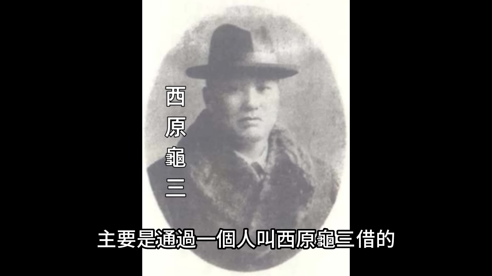
西原借款的利息相對較低且抵押物多為無實質價值之物，如電線及森林等。相比袁世凱時期的“善後大借款”以中國鹽稅作擔保而言，西原借款在經濟層面對日本來說並非最有利。然而，從政治角度來看，這批借款幫助了日本鞏固其在華的利益。
曹汝霖當時任交通總長職務，是親日派的重要人物之一。他代表中國政府與西原龜三簽訂協議，允許日本駐軍於濟南等處，這一舉措使日本得以合法佔領山東部分地區並擴大其勢力範圍。
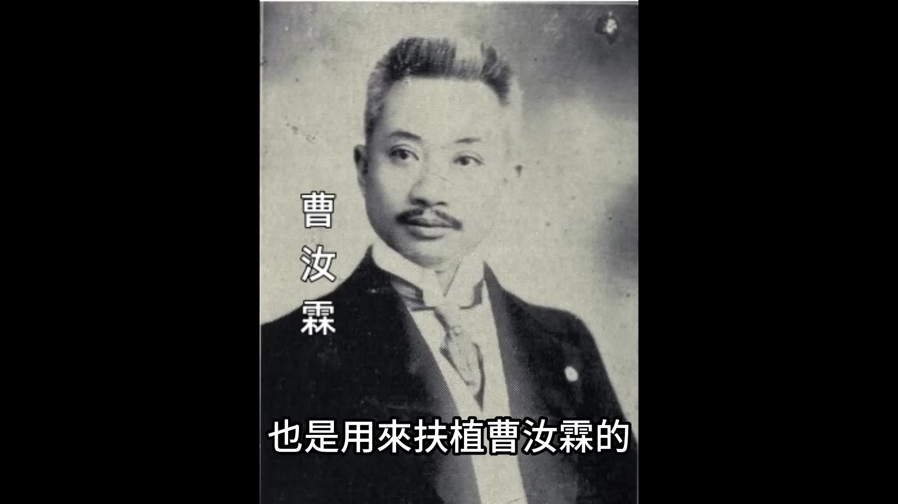
隨著西原借款的到來，段祺瑞開始籌建參戰軍。此軍隊本來是以中國對德宣戰為名義建立，但在實際操作中成為了一支由日本支持的私人軍隊，其編制、訓練方式及裝備皆來自日本。
隨著一戰接近尾聲，段祺瑞將參戰軍轉變為“邊防軍”，並藉此擴充自身武力成為當時民國最強大的軍閥之一。此外，他還積極籌劃組建一個受其控制的國會，以實現對政治和軍事領域的全面掌控。
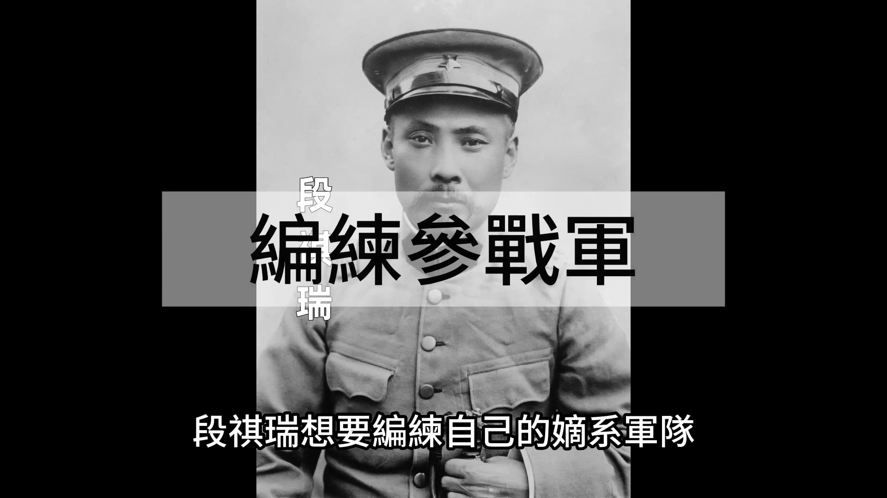
這一系列操作與協議為後來五四運動中中國民眾對於日本在華不法行為的抗議奠定了基礎。
01:25:00
張勳復辟迫使黎元洪解散國會後，段祺瑞並未立即恢復第一屆國會。
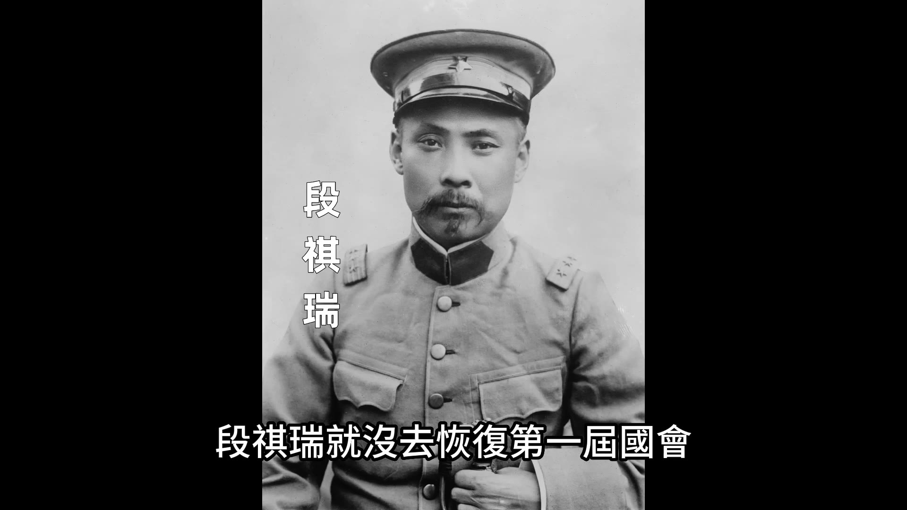
他打算重新選舉一個更能聽他話的國會。籌備這樣一個國會需要大量的資金，而此時段祺瑞已無需為此煩惱。第二步則是尋找合作夥伴來幫助建立新國會，其中梁啟超和他的研究系便發揮了重要作用。
在討伐張勳復辟的過程中，梁啓超與段祺瑞已經建立起良好的關係，協助段祺瑞起草了討伐檄文。當段祺瑞再度掌權時，雙方的合作進入了一個新的蜜月期。梁啟超的研究系前身是進步黨，在第一屆國會中僅次於國民黨位列第二大黨，主張憲法治國。因此，該團體被稱作研究系。研究系的核心成員包括梁啓超、湯化龍和林長民等。
在段祺瑞的新政府內，梁啟超出任財務總長，湯化龍擔任內務總長，而林長民則是司法總長，這樣一來研究系便佔據了政府中的重要職位。在此背景下，對於段祺瑞不打算恢復第一屆國會的決定，梁啓超也非常支持。
畢竟，首屆國會中多數議員來自國民黨；如今國民黨勢力已被壓制，研究系則希望在新國會中佔據重要位置。因此，由他們臨時組成的參議會修改了新的國會議員選舉法。與第一屆國會800多位議員相比，新國會僅有400餘名議員，減少議員數量固然有其理由。
對段祺瑞來說，這意味著更加容易操控國會，因為他只需花費更少的資金來收買這些較少數量的議員。到了1918年3月，國會議員選舉正式開始了。
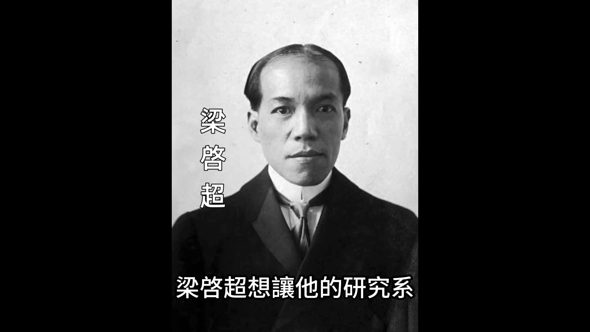
梁啓超原本希望他的研究系能夠在新國會中佔據主導地位，然而這個願望過於天真。段祺瑞根本不會允許研究系成為最大的黨派，因為一旦研究系佔據了第一大黨的位置，他便無法完全控制國會。因此，段祺瑞決定將操縱國會的重任交給自己的親信徐樹錚。
於是，安福俱樂部應運而生，開始操控國會選舉。徐樹錚一方面通過金錢收買議員，另一方面則依靠他所能控制的督軍強行干涉選舉過程。他用以操縱選舉的主要資金來自於西原借款，據統計，在這筆借款中大約有1700萬被用於選舉國會議員和總統。
安福俱樂部之所以得名，是因為他們在位於安福胡同的場所進行請客吃飯等暗地賄賂活動，這些議員因此組成了鬆散的團體。由於缺乏明確的政治理念，這批議員大多只會根據利益結盟，聽從徐樹錚的指示。
最終，在新國會選舉中，安福系佔據了330個席位，而研究系僅有20個席位，因此這一屆國會又被稱為“安福國會”。對於梁啓超和他的同僚來說，這種被皖系拋棄的感覺令他們非常失望。在籌備選舉期間，他們已經付出大量努力，最後卻落得如此下場。
自此以後，研究系與皖系分道揚鑣，在日後巴黎和會期間還暗中反抗安福國會的支持者段祺瑞。隨著安福國會的建立以及選舉總統過程中的參與，加上南北之間已打過兩輪戰爭（孫中山在南方另立政府），段祺瑞的政治地位更加穩固了。而日本西原借款也在此時到達，為他提供了更多的資金支持。
01:30:01
段祺瑞在有了財力支持後，便展開了一系列軍事行動。當時南北戰爭的主要戰場位於湖南省。廣東和廣西是陸榮廷的地盤，雲南、貴州及四川則由唐繼堯控制，因此湖南成為南方的門戶，段祺瑞的北洋軍要想進攻南方必經此地；而孫中山領導的護法軍則一直號召北伐。
目前擔任湖南省督軍的是譚延闓。在辛亥革命之前，他是湖南諮議局議長，屬於立憲派人士。他在革命時期加入中國同盟會，在革命成功後成為湖南都督。後來他加入了國民黨，因此被視為孫中山陣營中的南方人物。段祺瑞上台後的首要行動便是撤換譚延闓的湖南省督軍職務，改由北洋系的傅良佐接任，并讓譚延闓轉任省長，實際上削減了他的權力。起初譚延闓也考慮反抗，但因他本身是文官且平日治理依靠良好人緣，面對這次反抗內部意見不一的情況下，加之自身抵抗意願不足，最終辭職離開。
傅良佐到任時帶領了北洋系的兩個師兵力進入湖南。亞汝賢率領第8師、范國璋則負責第20師，隨同傅良佐一同上任。這兩支部隊進駐湖南明顯是要重新劃分該地勢力範圍，引發當地軍閥不安，認為自身領土將受到威脅，零陵鎮守使劉建藩與駐紮衡陽的第一師第二旅旅長林修梅率先宣布獨立，表明與北京政府斷絕關係。
在北洋時期，地方軍閥經常會因不滿中央而宣佈獨立或自主，但這通常並非意圖自立為國家，更多是表達對中央的反叛。例如本次湖南小軍閥宣告獨立即屬此類型，段祺瑞雖決定武力解決，實際上雙方在電報往來中多數情況下能夠達成和解。然而此次由於段祺瑞意圖動真格地鞏固權力而引發衝突。
隨著戰火逼近西南邊境地區，陸榮廷也不能坐視不理。他派遣兩廣聯軍由譚浩明指揮支援湖南地方部隊，桂軍的加入使形勢急轉直下。北洋軍方面則由於其前線部隊並非段祺瑞嫡系，且缺乏戰鬥意願，在獲得財務補給後僅搶占地盤而不真正作戰，導致兩方對峙局面僵持不下。
王汝賢與范國璋分別率領的第8師和第20師在前線開始通電各方聲稱為人民造福並呼籲和平，隨即自行撤兵。傅良佐見狀也緊急離開現場，使段祺瑞的第一波進攻失敗。
以上描述展現了當時北洋時期軍閥割據下的複雜政局與軍事動態。
01:35:00
段祺瑞因受到總統馮國璋的壓力而下台，此舉源於馮國璋對段祺瑞武力統一南方戰略的反對。當時馮國璋的地盤主要在南方，若段祺瑞發動戰爭，首當其衝受影響的就是他的實力；然而馮國璋獨自一人在北京，無法阻止段祺瑞。隨著段祺瑞的失敗，馮國璋聯合江蘇督軍李純、江西督軍陳光遠和湖北督軍王佔元等人製造壓力逼得段祺瑞退位下台，即便如此，段祺瑞自身的實力並未受損。在日本的支持與資金挹注之下，段祺瑞在下台後仍以參戰軍督辦的身份操縱內閣，擁有實際的決策權。

段祺瑞打算繼續對南方發動第二次進攻，而馮國璋則主張和平，派江蘇督軍李純與南方議和。在南方的態度上，陸榮廷主張停戰並商議和談條件，孫中山則希望利用勝利來勢北伐。當時北方以段祺瑞下野為契機，馮國璋主導，而孫中山無實力支持其主戰觀點；南方以陸榮廷的和平建議佔據話語權，雙方暫時達成停火。
然而這種停火狀態並非穩固。在北方，段祺瑞經過籌劃後成功拉攏了奉系張作霖和直隸督軍曹錕等人，並通過徐樹錚與張作霖協商提供了軍火支援以獲取其支持；段祺瑞也向曹錕承諾下次選舉時推舉他為副總統。這番努力使段祺瑞重新獲得北方軍閥的關鍵支撐。
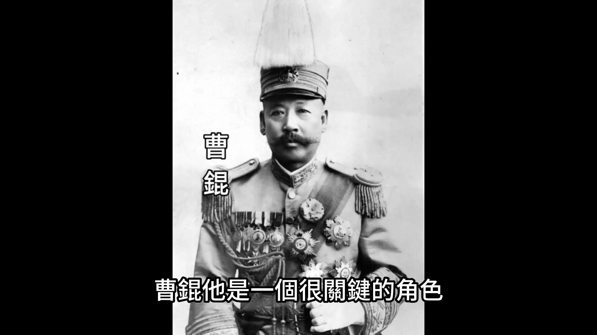
直隸督軍曹錕在北洋軍中以憨厚與忠誠著稱，他對袁世凱唯命是從，即使這會對他的聲譽造成傷害。儘管看似愚笨，但在關鍵時刻曹錕卻能敏銳地做出決定，此次他顯然是選擇了段祺瑞作為支持者。此外，直隸第三師師長吳佩孚的忠心也是一大特點，這在軍閥時代是罕見現象。

段祺瑞準備就緒後便開始組織第二波進攻南方的軍事行動，並部署三路大軍：第一路由張敬堯指揮第七師，第二路由張懷芝指揮第五師，第三路由曹錕指揮第三師，吳佩孚作為其主力部隊參戰。這三路人馬均為北洋軍中的精銳部隊；其中張敬堯與張懷芝屬於段祺瑞皖系人物，而曹錕的直系新軍則與之無甚聯繫。然而，張敬堯與張懷芝兩路在戰鬥中表現平庸敗陣，只有吳佩孚率領第三師連綿取勝，一路打到了湖南衡山、岳州長沙及至衡陽，將桂系軍隊擊退回廣西。
以上便是段祺瑞重新組建北洋軍力並對南方發動第二次進攻的過程，以及在此過程中各個主要角色所扮演的角色和表現。
01:40:00
實際上，桂軍是一支在中國近代史上較為能征善戰的部隊，由陸榮廷統領。陸榮廷曾經是土匪頭目，在接受政府招安後逐漸成為一支具有一定實力的軍隊，在民國時期中屬於戰鬥力較強且裝備不錯的一支部隊。他通過越南向法國進口了大量武器裝備，但就是這樣一支軍隊最終卻被吳佩孚打得大敗。吳佩孚在這次戰役中一舉成名。
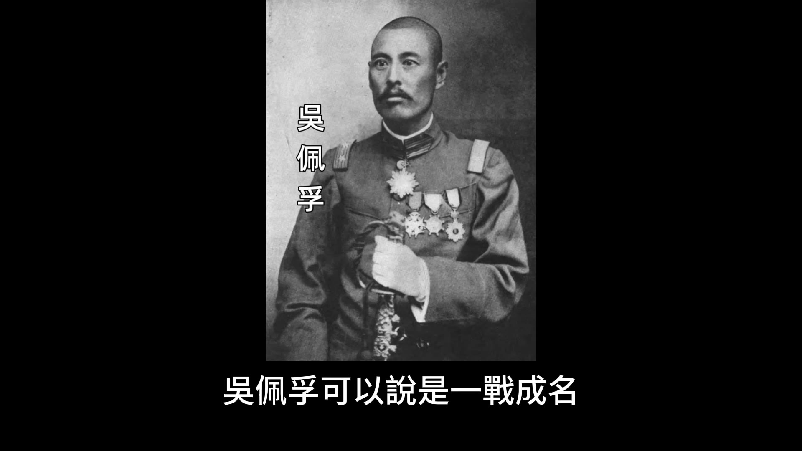
吳佩孚屬於北洋系第二代人物，北洋系統的第二代中有幾個非常有能力的人物，包括吳佩孚、馮玉祥和孫傳芳等。他們在此次進軍湖南中大獲全勝，並迅速收復了所有失地，在論功行賞時卻出現了波折。

段祺瑞在這次勝利後犯了一個重大錯誤，他沒有將湖南督軍之職授予功勞最大的吳佩孚，反而交給了自己的親信張敬堯。張敬堯是一位連戰連敗的將領，而且他曾縱容部隊搶劫當地百姓。段祺瑞的做法讓吳佩孚非常憤怒，在衡陽按兵不動並開始徵稅擴軍。在湖南期間，吳佩孚的軍隊規模迅速擴大到三萬多人，這支部隊的實力甚至超過了許多督軍的力量。
今天我們來聊巴黎和會以及五四運動，這兩次事件在中國近代史上具有重要地位。巴黎和會可以說是五四運動的一個重要導火索，這兩個事件相互牽連、緊密相關。巴黎和會是在第一次世界大戰結束後由協約國舉行的會議，主要議題是如何處置敗戰國家以及重新安排戰後國際關係秩序。中國作為對德宣戰的勝利國之一參與了這次和會，但結果遠不如預期中的理想。
在聊巴黎和會之前，我們先來回顧一下當時中國國內的政治局勢：袁世凱去世之後，副總統黎元洪成為大總統，段祺瑞擔任國務院總理。新政府恢復了第一屆國會並重新確立共和體制，在此過程中，黎元洪與段祺瑞之間的府院之爭逐漸激化。
尤其是在對德宣戰這一問題上，雙方意見分歧加大，最終導致段祺瑞下野。黎元洪為了緩和與北洋系的關係，邀請張勳到北京調停，結果卻引發了清室復辟事件，迫使黎元洪退位並解散國會。段祺瑞在趕走張勳後再度獲得總理職務，隨後實現了對德宣戰，進入了皖系政府執政的全盛時期。
段祺瑞政府作為親日派得到日本的西原借款支持，利用這筆資金編練參戰軍隊並選舉了一個聽話的安福國會，但卻未恢復第一屆國會。
01:45:01
孫中山以護法為理由，在廣東成立了護法軍政府，而後來人們通常將北京的北洋政府稱為北方政府。北方政府和南方政府的主要分歧在於哪個國會合法有效。北方政府支持的是第二屆國會——安福國會；南方則支持第一屆國會。雙方因此爆發了戰爭，這場戰爭北方稱之為南北戰爭，而南方稱之為護法戰爭。

這場戰爭的主戰場在湖南，因為湖南是西南地區的重要門戶。這場戰事共經歷了兩次高潮。第一次是因段祺瑞派出的軍隊並非北洋嫡系，將領們缺乏鬥志，最終以北方政府失敗告終，南方政府佔領了湖南。第二次則是由於段祺瑞派遣三路大軍南下，其中包括曹錕、吳佩孚所率領的一支強勁部隊，僅一個月便收復了湖南，吳佩孚因此聲名遠播並獲授勳。然而，段祺瑞未將湖南督軍之職授予功勞卓著的吳佩孚，而是交給了自己的嫡系張敬堯，這令吳佩孚極為不滿，在收復湖南後便不再向南進攻。
在籌備新國會時，研究系（由梁啟超領銜）發揮了重要作用。為了防止歷史重演——即避免國會再次落入其他政黨之手，段祺瑞通過安福俱樂部的手段進行選舉操縱，以確保自己的勢力佔據上風。

最終，安福系成員占據新國會的大多數席位，這也導致段祺瑞得罪了梁啟超的研究系。此時段祺瑞面對著多方面敵對勢力：南方護法軍政府、在湖南按兵不動的吳佩孚曹錕一系（稱為新直系）以及老直系的馮國璋，後者呼籲以和談方式解決南北問題。
長江三督是指江蘇督軍李純、江西督軍陳光遠及湖北督軍王佔元，他們首當其衝面臨南方戰事。為了平衡各種勢力，段祺瑞進行了總統選舉，最終安福國會推舉徐世昌為新任大總統，並由錢能訓擔任國務總理，以達成各方妥協。
然而，在副總統的任命上，由於梁士詒聯合徐世昌及部分議員抵制投票，使得原本計劃讓曹錕出任副總統以繼續對南方作戰的方案未果。此舉進一步加劇了北洋系內部矛盾。
01:50:00
這樣就導致選舉人數不符合法定要求，最後形成流選。結果就是副總統的職位暫時留缺，在這屆政府中並沒有設置副總統一職。錢能訓是徐世昌的嫡系親信，因此在這屆政府中不存在府院之爭的情況。不過，錢能訓這屆政府最大的問題是其自身實力薄弱，缺乏真正屬於自己的力量。
段祺瑞雖然已經退位，但他的皖系勢力依舊佔據著重要的地方席位。此外，段祺瑞還通過掌控參戰軍督辦（相當於中央軍隊）來維護自身地位。他可以借助徐樹錚操縱安福國會，實際上在重大事務的決策中仍發揮主導作用。
關於直系的馮國璋，在這次退位之後確實退出了政治舞台，其直系勢力中的北洋三督後續也未發起任何主要行動。但曹錕和吳佩孚的新直系在此期間不斷發展壯大，隨著吳佩孚在湖南地區擴充軍事力量，該派系實力逐漸增強。
從這次副總統的選舉中可以看出，徐世昌儘管是由皖系選出來的大總統，但他與段祺瑞並非完全一致。選擇不設立副總統表明他傾向於通過議和方式調解南北政府關係，這與段祺瑞追求武力統一的路線大相徑庭。
在南方方面，各派系之間也鬥爭不斷。廣州護法軍政府戰敗後分裂為多個小團體，陸榮廷和唐繼堯等軍閥一直對孫中山的大總統職務持保留態度。他們通過非常國會選舉將自己定義為兩位总统，但實際上並未履行該職務。
戰敗之後，陸榮廷策動部分非常國會議員將南方軍政府改組為總裁制，設立七名總裁進行聯合治理，而孫中山則從原先的非常大總統變成了七名總裁之一。新成立的政府不斷向北方示好，表現出妥協態度，這令孫中山感到憤怒並離開廣州前往上海。
在這種情況下，南北和談再度啟動。徐世昌於1918年10月10日正式就任大總統，僅一個月後，即11月11日，第一次世界大戰結束了，德國與協約國簽署停戰協定，中國作為參戰方成為勝利國，全體人民歡騰慶祝。
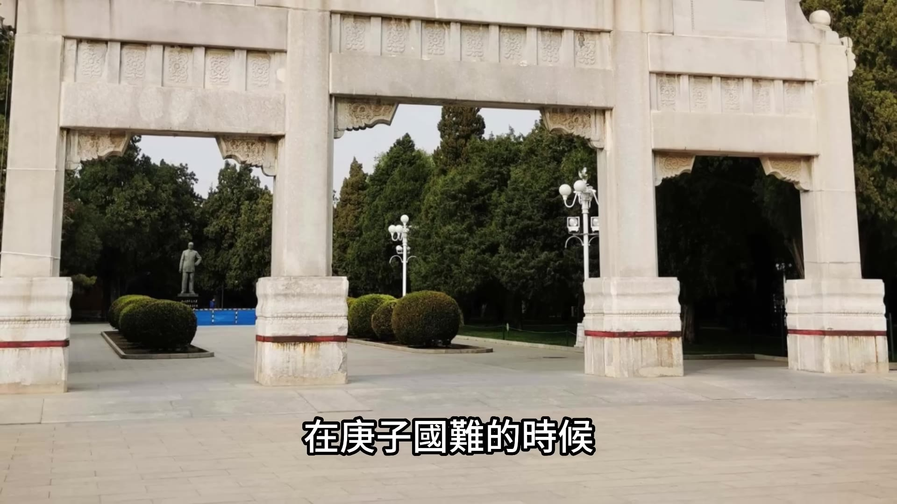
在庚子之變中被拆除的克林德碑也重新立起並改刻為「公理戰勝」。
段祺瑞因主張參戰而聲譽達到頂峰，成為國家英雄。儘管知識分子深知中國之所以能成為勝利國是因為搭便車，但他們依然一片歡騰，北大校長蔡元培在慶祝活動後還對民眾進行了演講，主題為《黑暗與光明的消長》；新文化運動旗手陳獨秀也發表文章表達自己對「公理戰勝」的支持。中國人第一次作為戰勝國登上了國際舞臺，在這一場次的協約國勝利中，普遍認為這是正義而非強國戰弱國。
美國總統伍德羅·威爾遜發表了關於戰後和平的十四點原則，為新世界秩序提出了一套公平公正公開的原則。其中最令人振奮的是廢除秘密外交和各國一律平等尊重弱國小國的權利。這些主張令弱小國家歡欣鼓舞，中國人也同樣興奮不已。然而，一戰後的世界是否真的像中國人心目中所期待的新世界？後來事實證明並非如此，所謂的公理正義不過是外交辭令罷了，現實依然是弱肉強食的丛林法則。
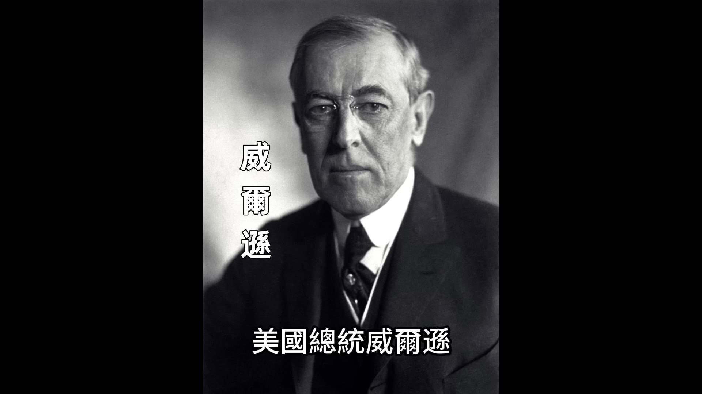
一戰後美國實力大增成為世界第一大國，採取了一種得人心的姿態來主導國際關係。中國對此次巴黎和會抱有極高的期待，希望解決包括二十一條協定、山東問題以及歸還旅順、威海等地租界等諸多歷史遺留問題。
01:55:01
第三條要求取消在華領事裁判權，第四條是歸還各地租界，第五條撤回外國駐軍，第六條則恢復中國的關稅自主。儘管中國清楚這一次巴黎和會的主要議題為解決第一次世界大戰中與德國相關之問題，但中國將其勝利定義為公理對抗強權，因此寄望該和會能處理所有弱小國家的問題。中國也設定了底線，即需解決山東問題及二十一条條約。
關於第一點，山東問題始於一戰期間日本加入協約國後擊敗德軍佔領青島，但並未將其歸還給中國。故中國希望通過巴黎和會收復青島。而第二個底線是廢除在一戰中由於西方列強無暇顧及所簽訂的二十一條不平等條約。
為了更好地處理這次外交事件，徐世昌設立了一個專門的機構──「外交委員會」，由政界名流組成。該機構的日常工作分別由汪大燮和林長民主持，兩人均屬於研究系成員，顯示此為一個被研究系控制的機構。
參加巴黎和會之國家分為三等級：第一等國席位有五個，中國理應得到同樣待遇。但為了處理這次外交事件，南方政府與北京政府最終達成了共識，派出五名全權代表陸徵祥、王正延、施肇基、顧維鈞和魏宸祖。其中，陸徵祥為當時的外交總長兼團領隊，而年輕有為的顧維鈞於1912年獲得美國哥倫比亞大學博士學位，回國後擔任袁世凱的外交秘書，並曾出使華盛頓。魏宸祖則因參與巴黎和會籌備工作被選中。
除了正式代表團之外，亦有來自民間黨派如國民黨之汪精衛、張靜江以及研究系之梁啟超等人自費前往巴黎獲取第一手資訊。當中國代表團抵達巴黎後，即被告知其地位僅為三等國，僅擁有兩席位；與此同時，美國、英國、法國、義大利和日本等五個國家為一等國，享有一席位之多。
中國聞訊後深感不公，這也是其首次察覺巴黎和會的真正面貌並非如同預期般公平。
02:00:00
巴黎和會（The Paris Peace Conference）中，大國定義不再單純依賴人口數量，而是更多地看重國家實力的強弱。和會最高權力機關由英國、美國、法國、意大利與日本五個國家各派兩位代表組成，稱為五國會議或十人會議（Five-Power Commission 或 Ten-Power Conference）。中國則被迫接受了僅有兩個名額的現實，他們派出兩名代表參與其中。當和會正式開始後，中國代表很快便意識到，此屆和會的主要任務是解決對德戰爭期間所衍生的問題。而中國期待的列強修改不平等條約的要求，並未得到任何實質性的進展。
在這一背景下，中國能夠爭取到的僅有廢除敗國德國與奧匈帝國同中國之間的不平等條約，以及解決日本對中國提出的兩大問題：山東問題和二十一條。這其中，山東問題尤為關鍵，因為它正恰恰碰觸到了日本的核心利益。一戰中，雖然主戰場在歐洲，但日本作為協約國之一，並未參與歐洲的正面衝突；唯一的軍事行動是驅逐駐紮於青島的德國軍隊，佔領了山東半島上的這個據點，使其成為一戰期間日本唯一獲得的戰利品。因此，日本不會輕易放棄在山東的利益。
中國與日本在這一問題上產生直接衝突，雙方展開了激烈的辯論。代表中國發言的是顧維鈞（Ku Wei-jun），而代表日本的一方則是由牧野伸顯（Makino Nobuyuki）來負責。顧維鈞從山東的領土、種族、宗教、文化、經濟以及國防等多方面，強調了山東作為中國主權完整的一部分所具備的法理依據，堅決地捍衛山東屬於中國這一立場。
相對而言，日本方則提出他們僅有的依據就是中國與日本之間已經達成的秘密協定。面對美國總統威爾遜（Woodrow Wilson）對於禁止秘密外交的反對態度，牧野表示將該協議提交五國會議裁決需等待日本政府許可，然而顧維鈞則明確表態不反對公開該協議條文，這一果敢姿態成為辯論中的關鍵轉折點。美國總統威爾遜、英國首相及法國主席均在會後親自向顧維
02:05:01
中國與日本簽訂合同是在1918年9月24日，當時的核心問題是該合同是否意味著中國承認了日本對德國在山東的權益繼承關係。根據中國官方說法，在日軍佔領青島後，中國因考慮到日本有繼承德國權益的想法而避免直接交涉。直至中國宣戰德國，根據國際法規則，中國與德國之間的所有契約自動失效，此後才簽訂新合同。因此，這份合同並不能被解釋為中國正式承認了日本的繼承權。
中日密約中的第二部分內容主要涉及山東交涉，特別是膠濟鐵路的路權問題。原先該鐵路由德國控制，後來通過與日本簽訂新協議，轉變為兩國合辦形式。這一點也表明中國並未承認日本繼承德國在山東的所有權益。此密約的經手人章宗祥後來說當時簽署這個協議是因為日軍已佔領膠濟鐵路，且設立了民政署，即第二行政機構，因此中方為促進日軍撤出而同意該交涉。在合約中明確寫下「欣然同意」的字眼，意圖表達中方希望能夠實現日軍撤離。
然而，後來這四個字被誤解為中國對簽訂此協議感到欣喜和樂觀，這成為反華人士攻擊的論點之一。實際上，單從中日密約內容來看，並未體現出中國承認日本繼承德國在山東權益的意思；而該密約亦被提交至巴黎和會。
在此期間，最高決策機構為五強會議，日本企圖將山東問題獨立於和會外處理，基於與中日間秘密協議，希望直接解決相關爭端。中國則堅稱應在和會上公開審理山東問題，因其屬對德宣戰後的衍生議題，且唯有通過多國公審方能確保公正性。中國代表自以為其立場無懈可擊，並寄望於美國總統威爾遜提出的十四點原則以支持己方觀點。
然而，兩件與山東問題本無直接關聯的事態卻改變了這一情勢。一是日本在和會上提出的種族平等問題，此舉受到英美強烈反對，尤其是威爾遜總統個人的種族主義立場，使得該議題成為爭論焦點。中國代表為了討好美國，未對此提案發表明確支持意見，採取中立態度。然而，威爾遜否決日本的這項要求後，似乎欠了日本一個情，考慮到若否決其山東問題上的主張將使日方在和會上一無所獲。
第二件影響事件是意大利首相退出巴黎和會。因阜姆（現在屬於克羅地亞）問題未得到解決——意國曾期待戰後該地區歸屬自身，但最終英法拒絕了此要求，導致意相憤而離席。儘管這兩起事態均與中國無直接關係，日本因種族平等及山東問題未能得逞，也萌生退出和會的想法；若此發生將令巴黎和會失敗，威爾遜總統的目標亦無法實現。
為確保和會的成功，美國最終不得不考慮在某些關鍵議題上對日本有所讓步。
02:10:01
在巴黎和會上，中國與日本因為山東問題產生了嚴重的爭議。當時，中國代表表現得相當出色，不僅以西方思維闡述了山東主權的歸屬問題，還成功推動大會揭露了中日密約的存在。然而這些努力最終未能改變局勢。巴黎和會為了維持整體會議的成功運作，選擇支持日本在山東的利益。美國總統伍德羅·威爾遜提出的二十一點原則鼓勵廢除一切秘密協定，但他卻轉身以尊重密約為由支持日本的立場。這種做法不僅使中國在山東問題上遭受了重大損失，也自我否定了他自己的外交原則。
隨著巴黎和會對中國在山東問題上的妥協決定，中國代表開始認識到戰後國際秩序的現實：弱肉強食、缺乏公正，大國之間的利益交換成為主導。這種情況令許多人再次深感“弱國無外交”的困境。國內也因此掀起了一場巨大的愛國運動——五四運動。
在巴黎和會上山東問題失敗的消息尚未公開時，在法國的梁啓超已經得知了這項消息，他隨即將此信息傳回北京，並通過《晨報》發表了文章，指責簽訂中日密約的人為國家罪人。這些言論立即引發了強烈的國內反應。當時段祺瑞領導的皖系政府被視為責任方，因其在任內與日本簽署了那份不利於中國利益的密約。
梁啓超利用這一外交失敗作為抨擊政敵的武器，《晨報》發表的《外交警報敬告國民》文章中強烈呼籲民眾關注山東問題的危機，並宣稱：“膠州亡矣，山東亡矣，國不國矣”，這成為五四運動爆發的一個直接動力。
然而實際上，在當時中國的情況下，即使沒有巴黎和會上的外交失敗，國家面臨的外部壓力也已減輕許多。自從一戰結束後，作為戰勝國之一的中國成功收回了德國在華的權益，包括租界與庚子賠款的免付。相對於四年前日本強行要求中國簽訂二十一條時的情況，如今的國際環境對中國來說顯得較為有利。
這段時期，日本對中國的態度也比之前更加溫和。
隨著外交失敗的消息傳開，國內掀起愛國主義浪潮，而政界內鬥亦日益激烈。在這一背景下，五四運動呼聲逐漸升高，成為反對政府政策與提倡國家獨立的重要平台。關於巴黎和會中中國代表是否簽字的最終決定，將進一步影響後續的政治走向。
有關巴黎和會中中國代表是否簽字的情況及五四運動的詳細經過，我們將在下一期節目中繼續探討。
02:15:02
對於山東問題，日本雖未明確表示將歸還該地，但至少在口頭上承諾未來會將其交還中國。可以說，由於段祺瑞主張對德宣戰，中國確實獲得了一些實質上的好處，國際地位也因此有所提升。然而，在知識界及更廣泛的社會中，這與他們對巴黎和會的期待落差很大，這種巨大的反差最終導致了五四運動的爆發。
1919年5月4日，北京的十所學校約3000多名學生聚集在天安門前開始遊行活動。他們手裡拿著標語如「還我青島」、「保我主權」、「誅賣國賊曹汝霖、章宗祥、陸宗輿」等，要求政府對抗不公。學生們首先前往東交民巷和磁器口廣渠門內大街，向各國大使館請願，尤其是美國大使館，當時学生们认为威爾遜的十四點原則代表了正義。然而當天，美國駐華公使芮恩施到門頭溝旅行去了，不在使館。學生們在使館前呈交了一份請帖，希望獲得美國的支持。
遊行隊伍從東郊民巷出來後便前往曹汝霖的住所趙家樓衚衕。當時曹汝霖和章宗祥正在家中，聽說有示威者來了，兩人分別躲藏起來。學生們進入曹宅沒有找到人，憤怒之下將房子點燃。隨後，在火災中驚慌失措逃出的章宗祥被學生發現並遭到打擊。
警察逮捕了32名參與遊行的學生，關於這次學生運動，有不同的觀點和評價。支持者認為這是一種正義之舉，而反對者則譴責其暴力行為。執政者通常會強調法律與秩序的重要性，因此不會支持這種暴力活動。
這次運動將北京政府搞得焦頭爛額，無論是不管還是鎮壓都是一個難題。如果放任自流，學生們的行動可能會越發激烈，甚至發展成為工人罷工和商人抵制日貨。然而，若採取行動遏制，由於當時社會對學子的高度尊重，警方大多數情況下只能以一種敷衍的方式應付。
這段時期內，南方護法軍政府利用北京學生運動來抹黑政敵並發起猛烈的電報戰，要求北京善待被捕學生、拒絕簽署對德和約及擴大學生運動。隨著運動蔓延至上海乃至西南地區，南方政府甚至暗中支援這一運動。然而當這些地方也受到影響後，南方政府開始加緊鎮壓。
總而言之，這場五四運動並非一場純粹的民間自發活動，而是被研究系挑撥起來、由南方政府火上澆油的一系列事件，各方勢力都在利用它來打擊政敵。在政治層面，皖系的段祺瑞成為了主要目標，而徐世昌和錢能訓執掌的北京政府則首當其衝受到了影響，由於這屆政府本身已經很弱勢，在學生運動中更加無力應對。
02:20:03
當時，學生運動中主要的兩大訴求之一是懲辦三個被視為賣國賊的人：曹汝霖、陸宗輥與章宗祥。我們先從這三位人物開始分析。
首先，曹汝霖之所以成為「賣國賊」的一個原因是與濟順鐵路及徐高鐵路的借款有關。當時他擔任交通總長兼財政總長，在面對濟順、徐高鐵路合約時，曹汝霖辯解稱山東問題的核心在於中國是否承認日本對德國權利的繼承權，而此一核心又直接與上述兩條鐵路合同相關。曹汝霖強調，這些合同本身並無賣國之嫌，因為中國絕大多數的鐵路都是借外債建造的；然而，在當時的情況下，山東鐵路借款被視為異常行為。
接下來是陸宗輥。在中日二十一條談判過程中，陸宗輥擔任中國駐日公使。對於這份協議，他解釋說是在當時的國際形勢下日本趁著歐洲在一戰中的局勢強行逼迫中國簽署二十一條，而在此條件下的撤銷也僅能局限於第5號條件的取消，其他部分則屬於承認既成事實。陸宗輥認為這已是最大的妥協，且避免了進一步的軍事衝突。
最後是章宗祥，他被指責的原因與濟順、徐高鐵路合同以及山東換文相關。章宗祥在解釋時表示，在山東換文中寫了「欣然同意」這四個字，本意是在促使日本從膠濟鐵路上撤軍，但此舉反被解讀為外交失敗的證據。
綜合這三人的辯解可以看來，他們都承認與日本有密切聯繫，但在他們眼中，這種親日行為並非賣國。他們認為所簽訂的合同是在當時國際形勢下不得不做的妥協，目的是保護中國權益不受到進一步損害。
然而，在那個時代背景之下，日本對華政策激起了中國民間極大的反感和仇恨。在處理外交事務時，與其他列強簽約也許不會引起太大爭議，但與日本簽訂的任何合約都會被無限放大，特別是在巴黎和會上如果沒有收回山東權益的情況下更是如此。民眾不願細究這些已經被定義為賣國賊者們的解釋，他們視政府與日方有「西原借款」及秘密協議之嫌，甚至對協約中「欣然同意」的字眼感到厭惡。
因此，在民怨四起的情況下，曹汝霖、章宗祥和陸宗輥三人只能提交辭呈，從此退出政壇。雖然這三人都在後期抗日戰爭爆發時拒絕了日本人想要他們出任偽政府官員的邀請，但這些舉動是否足以證明他們真的沒有賣國心腸仍存有疑問。
至於學生運動中另一項訴求──拒絕簽訂對德和約，這個問題更加複雜。巴黎和會上對德合約不僅涉及山東問題，還有其他多個方面的議題，例如德國放棄在華領事裁判權以及取消庚子賠款等。若拒絕簽字，可能會導致中國損失這些有利條件；此外，從理論上看，中國與德國之間仍處於戰爭狀態，而拒簽合約意味著需單獨再與德國進行談判才能解除這種情況。
02:25:01
另外，中國在與德國另立合約時處境十分尷尬。雖然德國是戰敗國，但其實力仍遠勝於我國，若單獨談判是否還能獲得有利條件尚未可知。第三個問題則為若拒絕簽約將無法廢除中日之間的「二十一条」條約，該條約被公認為是在對德戰爭期間日本強加給中國的不平等條約，因此在對德和約中才有可能廢除。
此外，拒絕簽約還會得罪美國、英國等大國，影響我國外交關係。巴黎和會另一重要議題為建立國際聯盟，若拒絕簽約便無法加入此組織，將嚴重削弱中國的國際地位。這些問題均擺在我國外交使團與北京政府面前。
在這般情況下，拒簽雖能使部分愛國人士贊同，但也導致賣國罪名加身，更不利的是民間力量已被煽動起來，反對簽約的聲音越來越高。此時各地督軍紛紛收到來自民間要求拒絕簽約的電報。
然而，在這一混亂時期仍有人能夠洞悉全局者如駐法公使胡惟德，他向北京政府發電指出拒簽後果之嚴重性，建議政府應從國家利益出發，毅然簽字。此舉令本來就是弱勢政府的北京政府更加為難。
此時總統徐世昌將問題拋給各地督軍，詳述簽約與拒簽的利弊，請求意見。但尚未收到各督軍回電之際，段祺瑞率先表態支持簽約並敦促其他封疆大吏予以支持。本來五四運動表面上是針對曹錕、章宗祥和陸徵祥三人，實則意在打擊皖系政權。自五四運動爆發以來，段祺瑞一直未公開發聲，此次表態顯然具重大意義。
北京政府以國務院名義徵求各地督軍意見時僅提出純粹的外交問題，但當段祺瑞表明態度後，該問題性質改變為是否支持北京政府或說是支持段祺瑞的態度。皖系的重要人物安徽督軍倪嗣衝首度公開表態支持簽約，其他皖系人士亦陸續跟進。然而明確表示支持簽約的人並不多。
相當一部分有實力的督軍繼續保持沉默，南方政府和吳佩孚等人則高舉愛國旗幟堅決反對簽約，更無須負起拒簽責任。北京政府雖有意簽約卻又不願獨自承擔壓力，在此困境中總統徐世昌展現其靈活的政治手段。
徐世告是晚清翰林出身，擅長官場之道，曾為袁世凱幕僚並隨著後者的升遷一路高昇至東三省總督。在袁世凱被罷免之後，整個北洋系皆受牽連，唯有徐世昌仍官運亨通，甚至任內閣總理副大臣之職，可見其政治手腕非同小可。
現下他傾向於簽字，但又不願一人承擔責任。徐世昌宣佈辭職以引發震動，並藉此暗示若想挽留他，便需支持外交政策，即同意簽約。北京政府此時未設副總統一職，若徐世昌真的辭職將無人能替代其位置，勢必引起高層震蕩。
徐世昌之文章就在此處，他以引咎辭職的方式迫使各方不得不考慮支持簽約的後果。果然，他的辭職聲明引起了廣泛關注與討論。
02:30:00
國不可一日無主，尤其是在這種情況下，各地紛紛發來電報挽留徐世昌。即便是在政治上反對他的人都通電挽留，顯示了他們對於徐世昌的尊重和支持。既然要挽留就得表態，大多數督軍都表明支持徐世昌的外交政策。例如山東督軍張樹元在之前一直含糊其辭，這次他發來的挽留電報說道：“外交問題，兩害取輕，理當共諒。”同樣，江西督軍陳光遠最初反對簽約，此次也表明支持態度，電報中提到：“政府不得以簽字之苦衷，故為天下所共諒”。甚至段祺瑞親自到中南海挽留徐世昌。在各方面人士的挽留之下，徐世昌當然懂得適可而止，並不再堅持辭職。他也達到了他想要的效果——除了南方政府控制下的西南幾個省之外，其他督軍幾乎都發來了挽留電文。
徐世昌果然是高明，通過辭職換取挽留，再通過挽留換取支持，經過這一波操作後，對德和約簽字看似大局已定。然而事情很快又發生了變數，這個變數來自於總理身上：外交失敗和國內動蕩需要有人承擔責任。徐世昌可以留任，但必須有人來承擔責任，於是國會就把矛頭指向了內閣。實際上各地督軍的通電並沒有挽留總理錢能訓，他只能下台成為時局的犧牲品。
按照內閣慣例，總理下台時全體閣員應同時辭職，由新任總理重組下一屆內閣；但事發突然，繼任總理還未選定，因此徐世昌決定讓內閣成員暫時留任，組成看守內閣直到新總理就職。所謂的看守內閣就是從現有的內閣總長中選取一位臨時代行總理職務來維持政府運轉。問題在於這位代總理將面對對德和約、五四運動、南北議和這些棘手的難題。
徐世昌只能硬性規定按內閣成員排序排在前面的人出任代總理，但首位外交總長陸徵祥正在法國出使中國代表團無法出任；第二位內務總長錢能訓也辭去了職務。於是財務總長龔心湛就被指定為臨時代理總理。龔心湛是在萬般無奈之下接任這個職位，上任便聲明只代理10天以等待新總理就職，希望國會能儘快選出新總理。
然而總統徐世昌和國會對新總理的人選意見分歧，一直爭論不定。10天很快過去，龔心湛只能繼續做代總理，在此期間雖然大部分督軍都表明支持簽約，但民間輿論沸騰，堅決抵制簽約，誰敢簽約必戴賣國賊的帽子。眼看簽約時間即將到來，若再選不出新總理，這個簽字命令就得由龔心湛和徐世昌共同下達了。龔心湛暗中決定，他絕對不能當這位賣國罪人，於是他採取中國官場常用的脫身方法——拖延。
最初代表團與北京政府曾說過會爭取保留簽字的第三種方式：同意在對德和約上簽字但對山東問題保留意見拒不承認。保留簽字對中國來說是最好的解決方法，然而代表團一開始就被告知此法極大可能是不被允許的，因為一旦允許，巴黎和會中很多國家將效仿保留他們不滿意的地方，這份對德和約也就失去意義了。後來國代表團與美國、英國、法國單獨溝通，均獲明確回復說萬萬做不到，不可能保留簽字，於是代表團告知北京政府。但龔心湛給代表團的指令仍然是無論如何爭取保留簽字。
代表團向北京發電詢問是否拒絕簽約，在這最後一刻，6月27日龔心湛才回電指示若不能保留簽字便拒絕簽約；次日徐世昌也公開表示如不能保留山東則拒絕簽字。在這個緊要關頭，龔心湛最終表態了，他之所以此時肯表態，我們後來發現北京到巴黎的電報發出和到達時間有延時（關於電報傳遞的情況）。
02:35:01
最快能到達的時間也得三天左右，這就意味著這是總統徐世昌與總理龔心湛兩人共同設計的脫身方法。這個表態的電報對遠在巴黎的中國代表團來說他們根本收不到，對中國公眾而言，北京政府表明態度堅決不賣國、拒絕簽字。最後結果是，如果中國代表團簽字了，對公眾可以說是代表團違抗政府指令責任在代表團；若代表團沒有簽字，這也是代表團自作主張的行為。由於徐世昌和龔心湛拖延最終造成了北京政府在對德和約問題上未能做出最後決斷。
我們先來看看代表團成員：按排名排首位的是陸徵祥，第二位是王正延，第三位是施肇基，第四位是顧維鈞，第五位是魏宸組。代表團內也有贊同簽字的和拒絕簽字的人。陸徵祥為首席代表，他贊成簽約但不願親自簽署；當時二十一條事件後被迫簽字，現已無法再承擔此責任。陸徵祥以病理由退出，北京政府命令王正延繼任並簽字，但他拒絕執行命令。其後施肇基亦臨時撤退至倫敦，而顧維鈞則挺身而出面對困境。
顧維鈞的看法是，當時中國最大的敵人是日本，若不簽約全國上下會同仇敵愾、民心凝聚以防範日本；反之則會造成國內自相紛擾。顧維鈞主張拒絕簽約但未直接反對，而是進行最後爭取：首先提出約內保留方案即在合約內部保留意見；然後是約外保留方案即單獨一份保留聲明不影響和約完整；最後提交口頭聲明要求在簽字前於大會上發言保留下山東問題的意見。顧維鈞警告美國總統威爾遜，若再不同意這將是他最後底線並拒絕簽約。
然而，1919年6月18日，在巴黎凡爾賽宮舉行對德簽約儀式時，中國代表團最終沒有現身，拒絕簽字。雖然此舉開了敢於抗爭的先例對未來外交有積極影響，但後續結果如何呢？是否如當時猜想一般發生不可預料影響？
首先，山東問題因拒絕簽約成了中日之間懸案，兩年後華盛頓會議上才開始重新解決山東問題。其次，顧維鈞在巴黎和會上的反覆交涉對於中國與西方外交關係也產生了重要影響。
02:40:01
頑強抗爭可以說是既有妥協又有底線，使中國得到了西方輿論的支持。顧維鈞知道在西方的文化裡面有同情弱者的一面，他以這種妥協之後的姿態拒絕簽約，贏得了西方輿論的廣泛同情。也正是因為這樣，並沒有因為中國拒絕簽約而使得美英法等西方列強對中國不滿，也沒有影響到中國的外交。第三方面，中國是否加入了國聯呢？中國之前還有一樣擔心就是拒絕簽約之後，在巴黎和會上除了對德和約之外，還有對奧合約，中國代表團對於對奧合約完全沒有疑問，進行了簽約。簽署對奧和約也可以加入國際聯盟，所以中國順利地加入了國聯。第四方面是解除對德戰爭狀態的問題，在拒絕簽約之後，中國單方面宣佈了解除對德戰爭狀態。兩年之後，1921年5月，中國和德國在北京簽署了《中德合約》，兩國重新恢復了外交關係。
這就是巴黎和會的全過程了。今天的分享也就到這裡了，接下來我們來聊一聊徐樹錚收復外蒙古的故事。1919年外蒙古撤銷自治回歸中國，1921年中國卻失去了對外蒙古的控制權，在這短短的兩年的時閒裡面，外蒙古經歷了從回歸之後又分離的過程，這也是外蒙古最後一次回到中國的治理。在這個過程中徐樹錚起到了很重要的作用。對於徐樹錚在外蒙古撤治過程中的做法，人們的評價也是褒貶不一。我們就來聊聊外蒙古撤銷自治的過程，同時也來聊聊徐樹錚這個人。
聊外蒙古撤銷自治還得從外蒙古開始自治說起。1911年辛亥革命爆發之後，在沙俄的策動之下，外蒙古宣佈獨立，這個舉動引起了中國的強烈反對，袁世凱就派出專使跟俄國、外蒙古展開談判，最終在1915年三方簽訂了《中俄盟協約》。在這個協約裡面，俄國和外蒙古都承認了中國對外蒙古的宗主權，也承認了外蒙古是中國領土的一部分，同時呢，中國也承認了外蒙古的自治權，中國不可以干預外蒙古的治理也不可以在外蒙古駐軍。通過這個協約，中國保留了對外蒙古的宗主權，外蒙古有了合法的自治權，而沙俄獲得了對外蒙古的各種經濟特權，三方的利益達成了一種脆弱的平衡。
這種脆弱的平衡只維持了兩年的時間，1917年俄國爆發了十月革命，沙俄政府倒台。俄國內部的動蕩給外蒙古帶來了很大影響：首先由於俄國的動蕩，外蒙古的經濟也跟著受到了很大影響；其次在軍事方面，白俄和蘇俄的軍事對抗，外蒙古在地理位置上首當其衝。白俄的領導人謝米諾夫接受了日本的支持，他企圖發起泛蒙古運動也被稱為「大蒙古國」計劃，在這個計劃之下，謝米諾夫開始騷擾外蒙古邊境，企圖侵佔外蒙古，他想要以外蒙古作為戰略據點建立起來一個包括具加爾、外蒙古呼倫貝爾衛拉特蒙古人在內的「統一蒙古國」。在謝米諾夫的軍事壓力之下，外蒙古政府產生了恐慌，外蒙古政府內部意見也不統一，關於外蒙古內部的治理，在清朝的時候是以哲布尊丹巴活佛作為首領，王公集四掌管行政，喇嘛集團掌管宗教，但是自從外蒙古自治之後，喇嘛開始參與政治攫取了很多權力，喇嘛的權力甚至高過了王公，王公集團和喇嘛集團就產生了很多矛盾。在俄國發生動蕩之後，提出想要撤銷自治的是王公派，王公派開始與中國聯繫希望撤治希望在撤治之後重新劃分權力，在重新劃分權力的時候他們可以得到好處壓制喇嘛派。
中國當時駐外蒙古的最高官是陳毅（這個陳毅不是後來十大元帥的陳毅）。
02:45:00
北京政府授權陳毅與外蒙古的王公進行秘密商談，以期收回對外蒙古的統治權。此時，《中俄盟協約》簽訂不久，北京政府考慮到如果立即收回外蒙古可能會引發與俄國的新爭端，因此指示陳毅暗中籌劃撤治條約。北京政府的想法是通過簽署撤治條約來作為未來承認俄國內部新政府的條件之一。
直至1919年7月，蘇俄蘇維埃政府發表了《蘇俄第一次對華宣言》，宣稱願意放棄沙俄時期奪取中國的一切利益，包括在外蒙古的利益。這使得中國開始正式與外蒙古協商撤治條約事宜。當時白俄羅斯的領導人謝米諾夫，在日本的支持下獲得了大量軍事裝備和物資，企圖迫使外蒙古支持其大蒙古國計劃。面對這樣的威脅，哲布尊丹巴活佛召集了國家執政者與喇嘛們商討應對措施。他們一致決定拒絕謝米諾夫的威脅並反對獨立。
此後，外蒙古高層開始傾向於與中國進行談判，希望在條件允許的情況下撤銷自治。當時外蒙古外交大臣車材多爾濟與陳毅展開了為期數月的談判，在這個過程中提出了約50項條款。隨著談判深入，喇嘛派和王公派之間的利益衝突愈加明顯，導致許多條款因利益分歧而難以達成一致，經歷兩個多月的艱辛談判才最終定案為63條條款。
然而，談判過程中外蒙古內部派系鬥爭激烈化，使得喇嘛派又開始反悔並反對撤銷自治。哲布尊丹巴活佛支持喇嘛利益，進一步加劇了談判的僵局。中國政府希望通過懷柔政策來促使外蒙古撤銷自治，以在國際上取得更好的外交地位，但由於外蒙古內部矛盾重重，這項任務變得愈加困難。而隨著白俄羅斯軍隊入侵外蒙古的可能性不斷增加，北京政府感到越來越焦慮。
在此背景下，徐樹錚的西北軍扮演了重要角色。民國時期，徐世昌被稱為老徐，他曾任大總統並在政治上有著非凡的能力。小徐則是徐樹錚的暱稱，在段祺瑞執政的皖系政府期間，無論大事小事都有他的身影。起初是一名文人的徐樹錚，因為其對軍事的熱情和才能被段祺瑞提拔成為武官並送往日本士官學校深造。
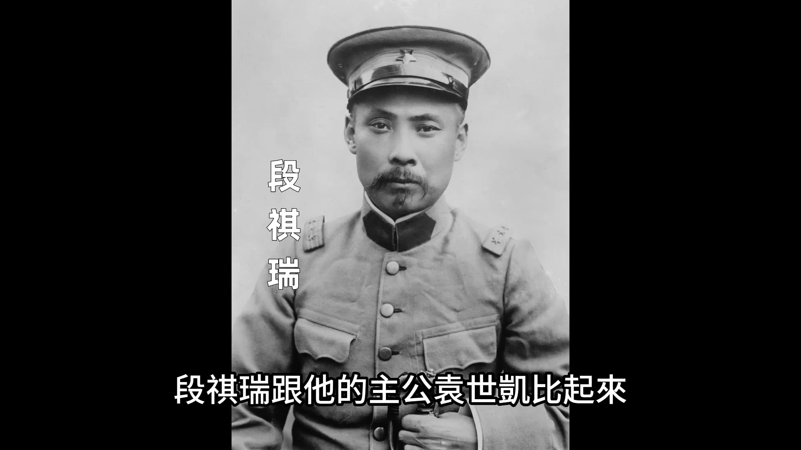
在日本士官學校畢業後，徐樹錚成了一名軍事謀士，深受段祺瑞器重。袁世凱曾警告過段祺瑞，稱徐樹錚雖然有才氣但也傲慢，容易招致他人反感。這句話在後來的歷史發展中被證實是對的，因為正是由於他的傲慢和自作主張，導致了他及段祺瑞日後陷入困境。
隨著外蒙古談判陷入僵局與白俄羅斯軍隊入侵威脅日益增大，徐樹錚率領西北軍出場進行決策支持。
02:50:00
段祺瑞在用人方面，往往是一旦認准某人便會充分信任他，即便此人出了問題也不輕易撤換。這種特點導致他在最後失敗了。徐樹錚就是其中一個關鍵人物，他的影響力和傲慢性格對段祺瑞的政治命運產生了深遠的影響。
在袁世凱時期，段祺瑞欲提拔徐樹錚擔任國務院秘書長一職，但遭到了袁世凱的反對。然而，段祺瑞決心已定，甚至敢與袁世凱叫板來捍衛自己的用人權。這也顯示出段祺瑞對徐樹錚的信任有多深。
袁世凱去世後，在段祺瑞執政期間，徐樹錚成為了北洋政府內的重要角色，甚至有人稱他為縱橫捭闔、呼風喚雨的人物。當時人們向段祺瑞請示事情時，往往被指示去找「又錚」（徐樹錚的字），如果無法通過徐樹錚這一關，基本上就別指望能做成任何事。
儘管有些記載批評徐樹錚為蠻橫跋扈之輩，但多數人的回憶卻描繪他彬彬有禮且從不讓他人下不了台。不過，徐樹錚確實是一位自視甚高、擅長權術的武將，並以心狠手辣著稱。
在段祺瑞與黎元洪發生府院之爭期間，徐樹錚成為了矛盾的焦點。他認為自己有權決定一切事務，並直接呈請黎元洪簽署相關文件，甚至對質疑他的決定感到不耐煩。這使很多北洋政要和軍閥對徐樹錚產生極大的反感。
段祺瑞欲武力統一南方，此舉遭到了當時的各路軍閥尤其是直系和奉系的強烈反對。他們指控徐樹錚破壞南北和平，是迷惑段祺瑞、導致其失去人心的主要人物。
除了挑起內戰外，徐樹錚還參與了許多關鍵的政治事件，如組織安福俱樂部並成功擠走了研究系，建立起以皖系為主導的「安福國會」。此外，在段祺瑞編練參戰軍之際，他甚至將原本由靳雲鵬負責的任務據為己有。
然而，最嚴重的一次事件發生在徐樹錚未經段祺瑞同意便擅自誘殺直系的重要謀士陸建章。這位謀士對抗皖系，在直系反皖的運動中扮演了重要角色，並與多數直系將領有聯繫。
此事令段祺瑞大驚失色，因為陸建章不僅是直系的關鍵人物，在北洋系統內也有著特殊的尊嚴地位。徐樹錚直接殺害他無疑打破了傳統規矩，引起公憤。雖然段祺瑞對此事事先不知情，但由於信任感不得不硬扛下來。
這一事件也為日後徐樹錚之死埋下了伏筆。陸建章的姪女婿是馮玉祥，而陸建章對他有知遇之恩。當年段祺瑞實力尚強時，馮玉祥還無力報復；直至七年後，當馮玉祥成為北京的實際掌控者，皖系已經大不如前，便指使手下去殺了徐樹錚。
總體而言，徐樹錚在北洋時期扮演了一個關鍵但又充滿爭議的角色，他的行為對段祺瑞及其政權產生了巨大的影響。
02:55:01
我們言歸正傳，來說說徐樹錚與其西北軍收復外蒙古的事跡。段祺瑞在編練參戰軍之際，口號是對德宣戰，但當時一戰已然結束，這支軍隊失去了存在的理由。在南北和談期間，廣州軍政府堅決要求撤銷這支部隊，段祺瑞遂將其改稱為邊防軍，用以守護邊疆。在此期間，徐樹錚獨立編練了一支西北邊防軍，共設立了四個旅，並被任命為西北籌邊使兼西北邊防總司令。
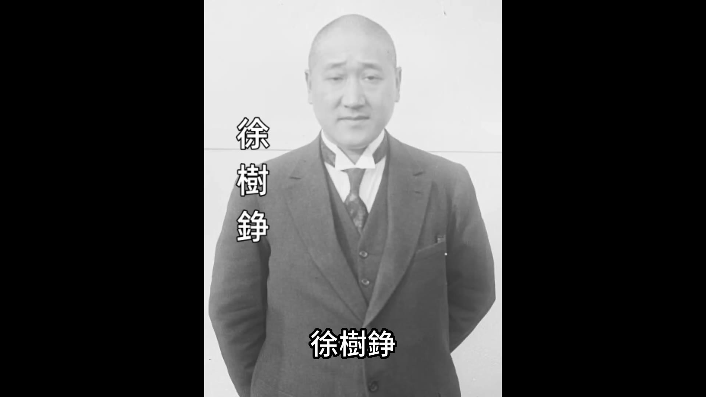
此時恰逢外蒙古撤銷自治，陳毅的懷柔外交談判陷入僵局。徐樹錚希望以武力解決外蒙古問題，一方面展現邊防軍的力量，另一方面則是為了獲得政治資本。當陳毅與外蒙古王公仍在反覆交涉63條時，徐樹錚帶領4000名邊防軍抵達庫倫，並很快與陳毅發生了衝突。由於徐樹錚主張武力解決問題，而陳毅主張懷柔方案，前者強行終止了後者的談判，並請示總統徐世昌將陳毅調回北京，自己成為中國在外蒙古的最高決策者。
在了解外蒙古撤銷自治一事中，王公派支持而喇嘛派反對的情況下，徐樹錚採取行動。一天夜晚，他派出士兵包圍了喇嘛的寓所，並提出用新條件7條取代原有的63條，迫使喇嘛簽字畫押。隨後，他又迫使外蒙古政府向北京提交了一份主動請求撤治的函件。1919年11月12日，北京政府大總統徐世昌批准了這一請求；翌年的1月13日，在庫倫舉行了撤銷自治的典禮。
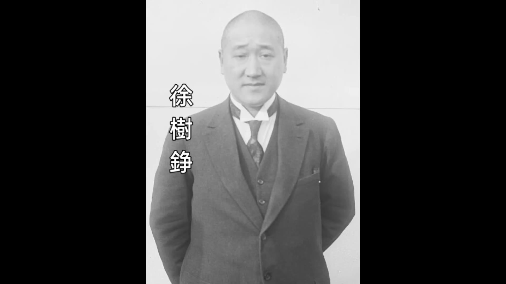
喬巴山在其著作《蒙古革命簡史》中詳細描寫了參加這場儀式的親身經歷。當日清晨，綠廟至大庫倫前扎哈河排列著蒙古兵；哲布尊丹巴活佛及其侍衛儀仗和蒙古士兵從兩旁排列於皇宮大門。隨著三聲炮響後，哲布尊丹巴活佛走出來，在中國士兵的簇擁下走向皇宮正門。儀式進行中，徐樹錚乘坐汽車抵達皇宮前影壁處下車步行，並將大總統像置於轎子上。
隨後進入宮中的徐樹錚將大總統像恭立於岸上，並由哲布尊丹巴活佛向其行三鞠躬禮。儀式中，徐樹錚授予了哲布尊丹巴活佛印冊，雙方相互行禮；隨後外蒙古的王公、仕官一致行跪拜禮。
喬巴山對於此次冊封儀式的細緻描述，象徵著外蒙古獨立自治地位的消亡，認為這使蒙古人民成為了中國軍閥奴隸民族。在這個典禮上，哲布尊丹巴活佛受到了折辱，引發廣泛不滿，從而王公和喇嘛開始站到了中國政府的對立面。
在外蒙古取消自治後，呼倫貝爾也隨之撤銷了自治狀態。此後，進入徐樹錚治理外蒙時期：他將外蒙古官府原有的五個衙門全部合併到西北籌邊使署；並報請北京政府註銷外蒙古各王公欠下的前清舊債，試圖化解當地矛盾。但徐樹錚的強硬作風引起了不少不安情緒，在撤治過程中，王公和喇嘛聯合起來對抗中央政府治理。
然而，直系與皖系之間的矛盾激化導致徐樹錚被調回北京，隨後發生直皖戰爭，皖系敗退，段祺瑞下台。駐紮在外蒙古的西北軍失去補給而戰鬥力大為削弱；外蒙古王公和喇嘛趁機聯合白俄軍隊攻入，擊退了中國駐軍。
03:00:01
外蒙古的王公和喇嘛原本為了防止俄國進攻而傾向於回歸中國，但由於中國在外蒙古撤治過程中失去了人心，最終使得外蒙古又與白俄軍隊聯手，將中國軍隊趕走。在白俄軍隊進入外蒙古後，他們比中國駐軍更加殘暴，直接搶劫當地百姓財物來擴充其軍隊力量，使外蒙古百姓深受其害。1921年，在蘇俄的支持下，外蒙古人民黨組成了臨時政府並趕走了白俄軍隊，成立了由蘇俄扶植的人民革命政府。
在這段期間，北洋時期的直皖戰爭已結束，獲勝的直系、奉系等軍閥紛紛高談闊論應該重新出兵收復外蒙古。然而各派軍閥擔心自己如果出兵會被他人趁虛而入，因此都為了保存自身實力而不願主動出擊。1919年至1921年間，外蒙古回歸中國成為了最後一次。
我們來談一下此次外蒙古撤治過程的看法。一開始採取懷柔政策由陳毅進行談判，希望和平撤治，但由於外蒙古內部王公和喇嘛的利益衝突，喇嘛不同意撤治，導致談判陷入僵局。徐樹錚上任後則採用武力逼迫的方式達成撤治目的，在此過程中他確實給了外蒙古一些財政上的好處並幫助償還了一部分俄國債務。然而徐樹錚的態度和手段皆十分強硬，使得外蒙古對中國懷有不滿，最後聯合白俄軍隊將中國軍隊趕走。
不過這並不完全是中國未能保住外蒙古的主要原因，主要原因還是因為中國國內爆發了直皖戰爭，導致內亂頻仍，無力維持在外蒙古的主權。在直皖戰爭中，皖系失敗後西北軍得不到補充和支援，其他軍閥也難以派出軍隊進行支援。
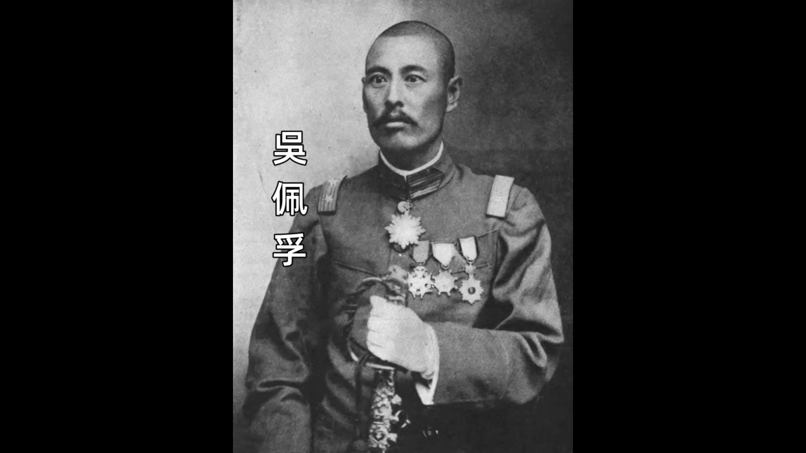
現在轉向介紹吳佩孚。吳佩孚按照北洋時期的輩分來說應算是第二代人物，但按年齡而言與段祺瑞等第一代人物相差不大。他是山東蓬萊人，家境貧困，中秀才後因不滿當地鄉紳請戲班子演淫戲而大鬧壽堂，在此得罪了許多地方勢力，只好離開故鄉投軍。起初吳佩孚在軍隊中的發展並不順利，直到與段祺瑞和曹錕結識，雖未得到重用但其才華漸被關注。一次偶然機會湯薌銘看中吳佩孚，將他借給了曹錕，促使吳佩孚職位逐漸上升。
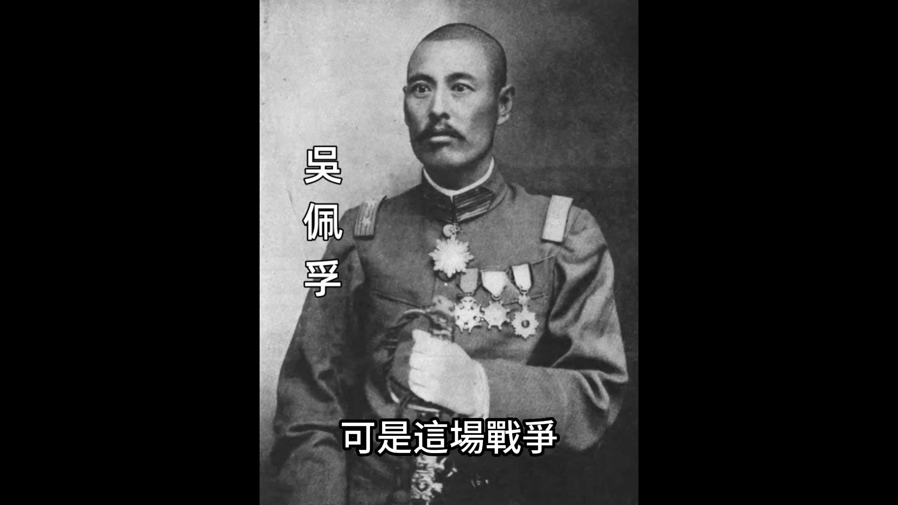
在日俄戰爭時，這場讓中國知識界興奮的戰事卻令吳佩孚有了不一樣的感受。經歷九死一生後，他見識了現代化戰爭的面貌並深感日本對中國的野心，從此與日本結下不解之仇。吳佩孚有著遠大的志向和抱負，在段祺瑞堅持要打南北戰爭時，這場內戰成為其人生轉折點。雖然他本人並不情願參與內戰，但此次戰役中升任第3師師長並逐步展現出卓越的軍事才能。
03:05:00
張學顏曾是曹錕的老部屬，這表明當時曹錕並不完全聽從吳佩孚的指揮。然而，隨著戰事的緊迫，一切都要服從軍事需要。在戰鬥中，吳佩孚成功地讓曹錕撤換了張學顏，使第三師成為其親信部隊。吳佩孚率領第三師迅速擊敗敵軍，幾個月內便將戰線由湖北推進至湖南的衡陽。
當時段祺瑞派出了三路大軍應對前方的衝突：分別由張敬堯、張懷芝和吳佩孚統領。其中僅吳佩孚一路獲得了勝利，而其他兩路由敗仗收場。由於戰爭中吳佩孚表現最為出色，段祺瑞將湖南督軍一職授予了他偏愛的部屬張敬堯，這顯然讓功勞最大的吳佩孚感到不滿。
面對這樣的情況，吳佩孚在打到衡陽之後便不再南進。他選擇駐紮於衡陽，以此作為擴充自己勢力範圍和實力的核心區域。吳佩孚的這種態度自然令段祺瑞與徐樹錚等人事關心，他們認為吳佩孚應該繼續率軍南下。
為了勸說吳佩孚，徐樹錚帶來了“孚威將軍”的封號以彌補他未能獲得湖南督軍職位的心理失衡。然而，“孚威將軍”僅是一個虛銜，對於追求實權的吳佩孚而言毫無吸引力。此外，徐樹錚還調動了三個師的奉軍來向吳佩孚施加壓力。
徐樹錚之所以能動用奉軍，與其和張作霖間的秘密協議有關。當時張作霖已統治東三省，欲尋機擴展勢力至華北地區。為此，他需要更多軍火補充部隊。徐樹錚則利用了一個巧妙的方案，以協助張作霖劫獲從日本訂購並運往北京的27,000支步槍，作為交換條件，張作霖授予了徐樹錚奉軍副總司令的職位。
然而，在奉軍南下途中，張作霖竟突然撤回了這三師部隊，理由是認為徐樹錚侵吞了140多萬的軍費。實際上，這筆資金可能是從西原借款中撥出的。無論真相如何，這次事件使得張作霖和段祺瑞之間關係惡化。
吳佩孚在這種情形下繼續按兵不動。初期他的理由是軍餉不足，但這樣拖延也不是辦法。於是，他開始以呼籲和平為由來避免南進。當時南北戰爭已持續兩年，在輿論上武力統一遭到了質疑，尤其是皖系政府從日本借款的行為更受人詬病。國際社會特別是美國多次表示反對中國內戰。在此背景下，吳佩孚提出和平呼籲便成為了打動人心的最佳口號。

03:10:00
北洋時期，吳佩孚公開發表電報，向江蘇督軍李純及江西的陳光遠、湖北的王佔元發出呼籲和平的通電。這封通電中，吳佩孚指責內戰已持續一年多，各項軍費幾乎全部來自借款抵押，這種以借債來維持軍事活動無異於飲鴆止渴和借劍殺人，長此以往必將陷入更加不利的局面，擔心會淪為外國勢力的傀儡。吳佩孚呼籲長江三督支持他的和平主張，但當時這三位督軍仍屬馮國璋麾下，在段祺瑞皖系勢力控制之下，雖有反對之意卻未公開表態與段祺瑞決裂。
在這種情況下，吳佩孚的通電逐漸增多且內容更加激進。根據其身份，他應服從中央指揮，但作為北洋系後輩和段祺瑞門生，若違抗師長指令並且批評前輩實為過分。面對吳佩孚的公開挑戰，段祺瑞也發佈通電嚴厲批評吳佩孚不守軍人職責，並假裝悔過自責，表示自己教育不足而需反省。
在段祺瑞發出這份通電後，皖系倪嗣衝、張敬堯及奉系張作霖等人紛紛發表反擊電報指責吳佩孚。然而，吳佩孚絲毫不讓步，並據理力爭，從而引發一場火藥味濃厚的電報戰。
在電報戰中，吳佩孚提出了一個「四不」口號：不做督軍、不住租界、不結交外人及不舉外債。這項主張迎合了當時興起的民族主義情緒，加上他自稱正直廉潔且愛國的形象，獲得知識界的廣泛支持。
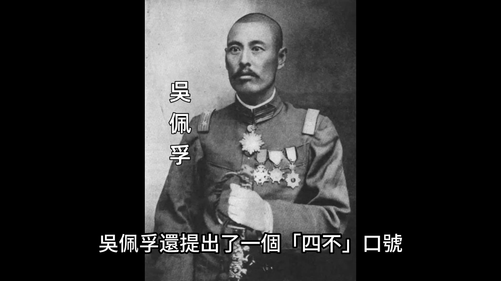
吳佩孚不僅利用電報戰提高知名度，在湘南期間還進行軍事擴張，將第三師及四個新編成的混成旅加以補充，並另外編了四個補充旅，總兵力達三萬人。這種規模已超出許多省督軍所能掌控之範疇，養兵自然需要巨額資金。
吳佩孚的主要財源有三個：一是北京政府提供的軍費補助；二是當地賦稅收入。當時張敬堯被封為湖南督軍，然而實際上湘南地區的控制權卻落於吳佩孚手中，他通過控制衡陽及其周邊地盤來收取稅收。此後，在輿論與實際力量雙重支持下，吳佩孚在湖南的影響力逐漸擴大。

隨著吳佩孚聲勢日隆，主和派勢力也隨之壯大，南北之間的和平談判因此重新啟動，這為他爭取到了更多時間擴張實力。
03:15:01
吳佩孚軍費的第三個來源來自西南軍閥陸榮廷和譚延闓。儘管吳佩孚已經表明不想打仗，但為了更加保險，西南方面還是給他一些補助。吳佩孚當然不會拒絕這些資金援助。當時的大多數軍閥在得到錢之後，除了用來養兵之外，還會將大部分財富匯到租界裡面存入外國銀行或者在租界裡開設產業，以備將來下野時能在租界內安穩度日。曹錕也是如此，他拿到段祺瑞的軍費後，也把很多錢匯到了租界中。張敬堯更是無恥，連自己的兵都養不活就把大部分軍費私吞了並存入外國銀行。吳佩孚卻不同，他將弄來的錢全都用來養兵和購買武器，自己和他的手下吃的穿的都很樸素，把錢都花在養軍隊身上，因此他的三萬人部隊在當時的軍閥中算是很有戰鬥力的一支。
吳佩孚練兵也很有一套，注重約束士兵嚴肅紀律。當北方進入湖南的軍隊名聲很差時，湖南人民對這些軍隊深惡痛絕，唯有吳佩孚的部隊保持了良好的聲譽。通過進軍湖南，吳佩孚從一個籍籍無名的北洋小軍官變成了全國人盡皆知的名將，軍事實力和名望雙豐收。然而，他想進一步有所作為還缺一些機會。
一戰勝利讓此前處於窘境中的段祺瑞揚眉吐氣，人們沒有忘記當時是段祺瑞力主參戰並不惜與大總統鬧翻臉才使得中國得以搭便車取得這個勝利，社會上下對段祺瑞表現出崇高的敬意。然而隨著巴黎和會的外交失敗，人民對勝利的喜悅轉瞬間變為落差，知識分子開始反問中國外交失敗的原因。在有人刻意引導下，人們把外交失敗矛頭指向了皖系親日政策，這時吳佩孚的機會又來了。
當初吳佩孚為了停戰呼籲南北和平時打的是愛國旗號，而此時五四運動口號正是懲辦賣國賊，這是一場全國性的愛國運動比當時吳佩孚一個人的呼聲要大多。這個機會吳佩孚當然不會放過。當學生們喊著抵制簽字、懲辦三個賣國賊等口號時，吳佩孚就跟著迎合。
在五四運動後期知識界的口號越來越激進，吳佩孚也跟著喊出來了。甚至蘇俄在中國尋找有實力的合作者的時候，首選的目標居然是吳佩孚。作為政府官員，他完全不顧北京政府的顏面，左一封電報右一封電報，一次比一次批評激烈，站在民眾這邊痛罵北京政府。當時代總理的龔心湛是皖系的人，在電報戰上他是完全落在下風沒有還手餘地。
吳佩孚從上年罷戰休兵呼籲和平到這年響應五四運動進行電報戰他從來就沒停過，其電報戰或者說電報秀大獲全勝。吳佩孚的形象從一眾軍閥中脫穎而出變成了替學生說話的愛國將領。

而這時候的皖系政府安福國會在輿論上淪為人盡皆知的拿日本錢打內戰的親日賣國賊。段祺瑞對吳佩孚的做法深感痛心，覺得吳佩孚是北洋系的叛徒，他憤怒地說其他人罵自己借日本錢可以，但曹錕、吳佩孚這兩個人用這筆錢最多，憑什麼用了錢還能罵人。確實段祺瑞從日本借來的錢中，曹錦和吳佩孚是用得最多的，吳佩孚用這些錢養了自己的軍隊，而曹錦則不僅養軍隊，還把錢匯到租界納妾修別墅。
在小道理上，無論段祺瑞再怎麼冤枉都無濟於事了。畢竟，在五四這場運動裡面愛國是最大的道理，這個最大的道理被吳佩孚佔領了。
03:20:01
接下來湖南又發生了「驅張運動」，在這場「驅張運動」裡面吳佩孚更是佔盡了便宜。「驅張運動」驅的是張敬堯。在北洋軍打下湖南之後，段祺瑞讓張敬堯做了湖南督軍。張敬堯在長沙做起了督軍，算是地方諸侯了。

張敬堯是小站的舊人，在北洋軍裡面他的資歷絕對比吳佩孚要老；1914年張敬堯做第七師師長的時候，吳佩孚才是個小營長。當年辛亥革命北洋軍進攻武漢的時候，張敬堯也算是個驍將。這次段祺瑞派軍南徵，張敬堯也是段祺瑞所倚重的大將，可是呢他實在不太爭氣，打一仗敗一仗。如果不是段祺瑞任人唯親，這個湖南的督軍怎麼也輪不到張敬堯。
張敬堯當上督軍之後，他發現他能控制的也就長沙周圍的幾個地方，衡陽由吳佩孚控制湘南，湖南其他地方都駐紮著各路北軍，他實際上也管不了。作為一省的督軍，他實際能管轄的範圍也就是北到岳州，南到湘潭這麼大的地盤。地盤雖然不大，也算是有了自己的地盤。張敬堯就很著急地開始擴軍；他的第七師剛進駐長沙不久就擴充到了7萬人，兵擴充多了他養兵要花的錢也變多了。張敬堯擴的這部分兵大部分都是他自己擅自擴招的陸軍部根本沒給他排上編制。他擴的這部分軍隊就得他自己來養活；可是他實際控制的地盤又不大， 在這麼狹小的土地上要養這麼多兵，當地老百姓肯定是吃不消的。
張敬堯本人還貪污，他弄到的錢先要往上海租借運存到國外銀行裡面，還要在天津租借裡面購置產業。剩下來的才能養兵。他不但自己貪，用的人也貪；為了控制軍隊，他用的人都是他的親戚啊他的同學。張敬堯在家裡面排行老大，叫張敬舜、張敬禹、張敬湯這三個兄弟都身居高位不幹好事。湖南人給他們編了個歌謠叫「堂堂乎張，堯舜禹湯』、「一二三四，虎豹豺狼』。
軍閥的部隊有個通病就是凡是駐紮的地方不是自己的家鄉的紀律就都不好；北軍進入到湖南紀律普遍不好，張敬堯的部隊尤其差勁。再加上他的部隊都是私自擴招的，北京給的糧節又不足，他們兄弟幾個又都貪，所以他的部隊經常鬧餉；然後呢軍官就放任士兵們自行搜刮老百姓，深受其害。
在五四運動的後期，湖南的學生和知識界就發起了「驅張運動」大張旗鼓地四處運作要求罷免張敬堯。學生們羅列了張敬堯的惡行；我們來看這些惡行簡直就把張敬堯給描述成了一個無惡不作的惡人，事實上張敬堯的軍隊雖然紀律很差，經常搜刮百姓，但是呢也還沒到這樣令人無法忍受的程度，至少張敬堯能讓這些學生從容地發起活動，讓學生自由地出入發聲，就能看出來他也還沒有那麼窮凶極惡。其實很多軍閥也都是在地方上搜刮老百姓的。
不過張敬堯倒霉他就倒霉在他剛當上湖南督軍就碰上了五四運動；五四運動本來就是衝著皖系來的，張敬堯他又是皖系大將。五四運動期間除了北京和上海鬧得最厲害之外，湖南的學生運動算是鬧得很厲害的。湖南的學生沒法去北京抗議政府，就驅逐張敬堯這個皖系軍閥「驅張運動」就搞得越來越犬。

學生們分了二組去請願：第一組去北京；第二組去廣州；第三組去衡陽。去北京的是向北京政府請願；去廣州的是對南方政府呼籲；到衡陽的是去做吳佩孚的工作。到北京請願的學生當然說不動北京政府，當時北京政府還是皖系當家他們不可能撤了自己人。經過到北京的學生這個大肆宣傳張敬堯的名聲是越來越臭了。
到了廣州的學生也是造了些聲勢；南方政府也在呼籲，但是對於南方政府的呼籲，北京政府完全不理。到衡陽的學生聲勢雖然沒有北京那麼大， 但是他們卻取得了實際的效果。其實學生們也知道能對張敬堯產生實際威脅的只有吳佩孚。
去到衡陽的學生請願團他們採取了三種戰術：第一是悲情打動；第二是好話恭維；第三是曉以利害。學生們第一招是悲情打動， 學生們提交請願書之後他們訴說著當地百姓被張敬堯欺壓的痛苦，說到動情之處放聲大哭，全體學生一起哭訴。
03:25:01
學生到達衡陽後，發表《告衡陽各界同胞書》，文中提到來到此地，見到市場生意興旺、農工商學各界安居樂業的景象，並稱衡陽百姓將吳佩孚視為仁義道德的保護者，反觀湖南周邊地區則飽受軍閥壓迫。學生請求吳佩孚設法驅除惡劣督軍張敬堯，這番言論顯然意圖打動吳佩孚。

學生的言辭切中要害，讓吳佩孚既感動又難以拒絕。此時吳佩孚正與皖系軍閥關係緊張，亟需尋找合適藉口北上撤防。學生請求「驅張」為他提供了完美的理由。吳佩孚遂向北京發電報表示擬撤防，並在南方政府同意支付開拔費60萬的條件下正式開始北撤。
吳佩孚撤退後，湘軍立刻反攻，張敬堯率部潰逃，將整個湖南拱手讓出。學生和民眾對吳佩孚感激無比，而吳佩孚則因這一「驅張運動」贏得了民意、愛國英雄的稱號及開拔費。

吳佩孚之所以與皖系軍閥決裂，部分原因在於段祺瑞將湖南督軍之位授予其親信張敬堯而非立功最大的吳佩孚，這讓吳佩孚感到不滿並開始尋找其他支持。
03:30:01
吳佩孚並不想替段祺瑞打仗而消耗自己的部隊，因此當段祺瑞欲將直系部隊拉上前線以對付西南軍閥時，其隱藏的目的是既可借直系之力消滅西南軍閥，又可在戰爭過程中削弱直系實力。然而事與願違，段祺瑞給吳佩孚提供大量軍費，但吳佩孚並未遵命繼續作戰，反而暗中與西南軍閥達成了停戰協議。他將精力轉向對抗皖系，利用電報來進行攻訐。
從1918年吳佩孚在湖南前線罷戰撤退開始，直至1920年借助「驅張運動」的理由進一步撤防，這兩年間吳佩孚與皖系的矛盾不斷激化。他藉助五四運動的浪潮高舉愛國旗號，在電報攻訐中佔據了上風，成為了公眾眼中的愛國英雄。
吳佩孚的撤退對段祺瑞帶來兩個嚴重問題：一是湘軍和西南軍閥可能會利用此機會反擊湖南；二是曹錕及吳佩孚的地盤在直隸，若吳佩孚率部北上將對北京形成巨大威脅。因此，段祺瑞下令湖南督軍張敬堯阻撓吳佩孚撤退，但事實上張敬堯不敢行動，只能向北京求援。
張敬堯的軍隊雖有7萬人之多，且裝備較新，然而湘軍僅一萬左右，武器相對匱乏。在這種情況下，張敬堯竟被湘軍一路追擊，在短短一個月內將整個湖南丢失殆盡。這也令吳佩孚更加看不起張敬堯。
同時，吳佩孚與西南六省督軍秘密約定反皖協議，而曹錕則和張作霖進行接觸，聯合長江三督組建了「七省反皖同盟」，包括直系四督及奉系三督。隨著徐樹錚殺害陸建章事件的發生，直系與皖系結下深仇大恨，曹錕和吳佩孚憑藉實力在新直系中脫穎而出。
長江三督原本聽命於馮國璋，徐世昌雖為總統卻無法統轄各省督軍，段祺瑞則欲靠和平之名收服長江三督，但因陸建章事件失敗。曹錕與張作霖共同對抗皖系並拉攏長江三督結盟。
奉系張作霖在清朝時期被招安，成為舊軍一員，在辛亥革命後其部隊改編為陸軍第27師駐紮奉天（今遼寧），這段過程顯示了張作霖軍事力量的崛起與發展。

03:35:00
張作霖自擔任師長後，以這支部隊為基礎在東北擴大勢力。1916年，他利用袁世凱稱帝的機會，驅逐了奉天將軍段芝貴，並攫取了奉天最高統治者的地位。袁世凱去世之後，張作霖開始依附於段祺瑞，對後者的一切建議都堅決支持。在此期間，張作霖和段祺瑞關係密切，被稱為蜜月期。
在段祺瑞與黎元洪發生府院之爭時，段祺瑞短暫下台，各省督軍紛紛宣佈獨立以示抗議，張作霖亦宣布獨立，並公開表示支持段祺瑞。同時他還乘機擴充兵力，新編了第29師，不久又佔領了由馮德麟負責的第28師——馮因參與張勳復辟而被捕入獄。通過這些手段，張作霖不僅控制了整個奉天省，更掌握了三個師的力量。
隨後他進一步將觸角伸向吉林和黑龍江，1917年7月，趁黑龍江軍隊內鬨的機會，張作霖向北京政府推薦其親家鮑貴卿擔任黑龍江督軍。當時北京由段祺瑞統治，他也對張作霖的支持表示支持。
1918年初，張作霖與徐樹錚暗中勾結，在秦皇島劫持了北京政府從日本購買的軍械，並在徐樹錚的授意下派奉軍入關，在天津設立了奉軍司令部。然而，當徐樹錚想讓這些軍隊前往湖南前線攻打南方軍隊時，張作霖卻撤回了開往湖南方向的軍隊，拒絕替人打仗死自己兵。
通過這個機會，張作霖成功地將自己的勢力範圍延伸至關內。1919年7月，北京政府根據張作霖的建議免去了吉林督軍孟恩遠的職務，並由他的親信鮑貴卿接任，孫烈臣則出任黑龍江督軍之位。至此，張作霖已成為名副其實的「東北王」。
我們可以看見，在這段時期內，張作霖勢力的成長一直得到了皖系的支持。但為何他又會加入反皖同盟呢？問題源於徐樹錚身上。
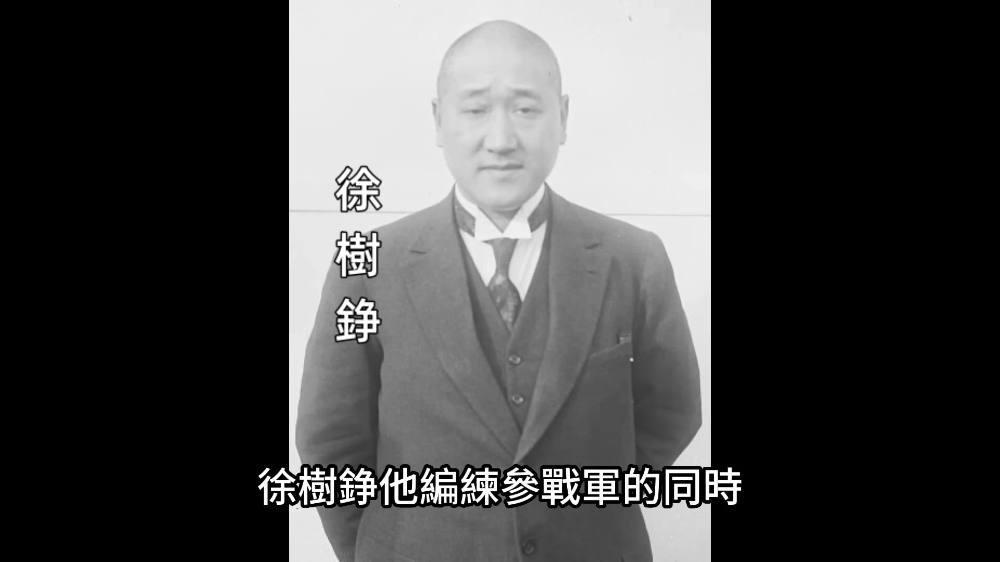
徐樹錚在編練參戰軍之餘，亦建立自己的西北軍。他野心勃勃，欲得西北籌邊使一職以拓展地盤。徐世昌對此不滿卻無能為力，因段祺瑞是徐樹錚的靠山。故而當徐樹錚請求前往西北時，徐世昌樂見其成，任命他為西北籌邊使，擁有熱河、察哈爾、歸綏、山西、陝西、甘肅、新疆及內外蒙古的一切政權。
此官職的設立引起了直系和奉系軍閥的一致反對。張作霖早將內蒙古與新疆地區視為其勢力範圍，尤其反感。儘管如此，這項任命還是通過了，徐樹錚成為所謂的西北王。自此以後，他與直系及奉系之間的矛盾愈加尖銳。
在成功收復外蒙古之後，徐樹錚聲譽更盛。此時，手握邊防軍三個師四個混成旅的力量，加上收復外蒙古之功績，讓他更加傲慢，甚至不屑於殺陸建章、對直系老大曹錕或奉系老大張作霖表示尊重。
因此，在「七省反皖同盟」成立時，討伐的焦點實際上是徐樹錚。此聯盟很快擴大為「八省反皖同盟」，新增了河南督軍趙倜。

趙倜本來既非皖系也非直系成員，一向保持中立。但段祺瑞欲阻止吳佩孚軍隊北撤時，想將他調離河南，讓吳佩孚軍隊無法通過此地區北進。因此，段祺瑞下令國務院更換河南督軍，結果反令趙倜不甘心失去地盤而投靠了直系，加入了反皖同盟。
在北洋時期，中央政府通常難以撤換地方督軍，因他們大都自給自足，並不依賴中央財政支持。因此，在直系與皖系關係緊張的情況下，趙倜不僅宣佈脫離段祺瑞，更積極投靠了直系，最終成為「八省反皖同盟」一員。
03:40:01
此時，張作霖還虛偽地發表了「局外中立」的宣言來迷惑段祺瑞。為拉攏張作霖，段祺瑞許諾在下次國會選舉時讓他擔任副總統，然而實際上，張作霖以軍糧城作為中心，在天津北倉一帶部署了重兵。隨著吳佩孚的北撤，直皖大戰一觸即發。開戰之前，直系發出了兩封討伐檄文，《驅除安福系宣言書》和《為討伐徐樹錚告全國各界書》，他們不敢直接對段祺瑞發難，畢竟他在北洋系統中佔有極大的份量。在檄文中，直系最有力的指控是針對徐樹錚及其安福系的親日賣國行為，在五四運動以來，這一直是直系佔據道德高點的方式。
相較之下，皖系的發聲僅指責吳佩孚如何通敵及與南方軍閥勾結。顯然在電報戰上，皖系已先輸了一著，士氣受挫。而在戰爭動員方面，直系也打著愛國和和平旗號，要驅逐親日的徐樹錚及其安福系；而皖系則是說仗必得打，若敗北，這支部隊將不復存在。在投入兵力方面，皖系的邊防軍加上西北軍共計55000人，直系由曹錕和吳佩孚帶領，總數同樣為56000人，雙方實力相當；武器裝備上，皖系使用全新的日本制裝備，較直系優質。

直皖兩軍的戰區分為東路和西路，其中東路在京奉鐵路沼線，由徐樹錚擔任總指揮；西路由段芝貴指揮。直軍西路則由吳佩孚帶領，東路由曹瑛負責。戰爭於1920年7月14日正式爆發。在西路戰場上，皖軍以邊防軍第1師和陸軍第15師為先鋒向吳佩孚的第3師發起進攻；直軍抵擋不住敵人的壓力，退出高碑店地區。東路皖軍則從梁莊、北極廟一帶向楊村的直軍進行攻擊，雙方互有傷亡，結果直軍防線被打開缺口，皖軍乘虛而入，迫使直軍放棄楊村退守至北倉。
從14日至16日三天內連打兩仗，皆以直軍敗北告終。然而到了7月17日，東西兩個戰場形勢發生突變。吳佩孚主動退出高碑店，親自率領一部直軍繞出敵方左翼松林店實施奇襲，由於該處為皖軍前敵指揮部所在地，事發突然且未能及時反應，導致主將曲同豐及其以下所有幹部被俘或死亡，這令西路軍群龍無首、鬥志全失，紛紛潰敗。直軍佔領涿州後並乘勝追擊至長辛店；此際皖軍總指揮段芝貴因膽小怕死而乘火車逃往北京，進一步導致該路皖軍全面崩潰。
隨著西路戰敗消息傳開，也嚴重影響到東路皖軍的士氣。在此時刻張作霖打破自己局外中立之言，奉軍正式出兵參戰，聯手直軍對皖軍進行猛攻。由於其總指揮徐樹錚亦無心戀戰，由廊坊撤回北京；而東路皖軍此時也已出現群龍無首局面，全面潰敗。
20日，直軍和奉軍進入北京北苑營防並接管南苑，至此直皖戰爭結束。這場戰事看似纏鬥兩三年之久，但實際熱戰不過短短七天便分出勝負。究其原因，段祺瑞新編練的參戰軍沒有實戰經驗，再加上用人不當——委任膽小怕死的花花公子段芝貴擔任西路軍總指揮，且對手又是能打的吳佩孚；皖系的敗局更源於直系佔據了道德制高點。
03:45:01
對於發起戰爭，不管你背後的理由是什麼，大軍出動的時候你總得有個正當的理由。如果說直系和皖系都是為了爭地盤，都沒什麼正當的理由那也就罷了，可是直系他是憑著五四運動高舉了愛國的旗號，高舉呼籲和平的旗號，在戰前的輿論上他已經大獲全勝了。在五四運動之後，皖系就已經背上了賣國賊的罵名，一直飽受輿論的攻擊抬不起頭來。
當時的士兵雖然說大多數都是識字不多的農民，但是不識字的農民他們也會傳小道消息，像賣國賊這樣的消息在軍中傳得還特別快。所以皖系的士兵在戰爭還沒開始的時候就沒什麼士氣，仗一打起來如果能一直都獲勝还好，一旦戰敗立刻就會變成潰敗。我們可以說五四運動是直系和皖系力量消長的關鍵轉折點，經過五四運動之後，權傾一時的皖系就從他的頂峰跌落下來了，被直系取而代之。
而直系的吳佩孚的聲望經過五四運動達到了他人生的頂點。值得一提的是這場直皖大戰參戰的只是段祺瑞、曹錕、吳佩孚、張作霖的軍隊，其他省的督軍並沒有參戰。從這點我們可以看出來各省督軍之間的派系關係也不是那麼絕對，很多督軍都是誰得勢我就依附誰的心理。
皖系戰敗之後段祺瑞下台，皖系在中央政府的力量也被清除。這次皖系的失敗，日本雖然在皖系身上投入了大量的金錢和精力，但此時的日本受到了中國內部高漲的反日浪潮的壓力，再加上美國、英國等西方列強也給了日本極大的壓力，他們警告日本必須保持中立。
所以日本沒有干預這場戰爭。皖系落幕了，宜系和奉系共同成為了北京的新主人。今天的故事到這裡就結束了，我們北洋時代的這個系列也就講到這裡了。這個系列從1916年我們講到1920年，四年之間發生的故事居然講了9集，這也是我意料之外的說實話，我在開始分享這個系列的時候，不過關於後面的故事也就是發生在1921年到1945年之間的故事，我做了一個規劃。
我分享了兩部分內容，第一部分是關於1921年到1945年這段歷史，我會以什麼樣的方式來講和要講哪些內容，相信你對這段歷史的脈絡會有一個清晰的完整的認識。我沒有分享具體的歷史故事，而是講了分析歷史的方法，說想知道是如何學習歷史如何分析歷史甚至如何去講歷史的就比較詳細地講解了如何分析歷史以及怎麼才能從歷史中學到真東西，包括如何才能通過學習歷史提升我們的認知甚至提升我們生命的境界。這些內容可以說含金量是非常高的是我多年研究歷史總結的精華，你學會了之後可以自己在歷史中源源不斷地吸收營養。
如果你對這些內容感興趣，今天的內容就講到這裡。
00:00:00
嗨大家好今天我們來聊聊民國年間的北洋時期一般我們把民國年間北洋集團統治的時期稱為北洋時期如果按照時間節點來說北洋時期是從1912年民國建立開始到1928年結束如果簡單點分這個階段每個階段四年從1912年到16年是袁世凱執政的時期16年到20年是皖系執政的時期這裡面就有北洋的三個派系就是皖系、直系和奉系這裡面的奉系如果按照出身來說它不屬於北洋甚至可以說他跟北洋一點關係都沒有可能是因為後來奉系跟北洋走的比較近一些所以後人總會誤解奉系也是北洋的北洋這個概念最早是在第二次鴉片戰爭之後
中國的北方開了三個口岸登州和天津牛莊就是現在的營口登州就是煙台那在1860年這三個口岸就都開了負責管理這三個口岸的大臣就叫三口通商大臣對照南方呢南方的通商大臣叫南洋大臣後來北方這三口通商大臣就叫北洋大臣這個南洋大臣和北洋大臣他們辦的都是洋務非常重要都是由當時最有實力的總督來兼職的那北洋大臣就是由直隸總督兼職南洋大臣由兩江總督兼職我們知道在清朝時候所有總督裡面直隸總督是第一的然後是兩江總督當時的直隸總督是李鴻章李鴻章是晚清最重要的人物之一了
就是直隸總督、北洋大臣還有總理衙門大臣總理衙門總理衙門的全稱叫總理各國事務衙門就是清朝所有的外交都由這個衙門辦理所以呢當時的洋務運動絕大多數都是李鴻章辦理的北洋大臣的衙門在天津李鴻章也是大部分時間都在天津辦公所以呢北洋的名號就叫起來了關於北洋我們一般知道的可能都是武官比如說北洋水師北洋陸軍其實呢北洋不僅有武官體系他還是有一套文官系統的晚清大部分搞洋務運動的很多都是北洋的官員李鴻章在這個位置上坐了很多年那在他去世之後呢坐上這個位置的是袁世凱袁世凱從小站練兵開始培養自己的北洋系人馬一直到清末的改革袁世凱都是核心人物所以當時北洋系可以說是人才鼎盛而且大家也能聽出來北洋的官員他們都是辦洋務和改革的所以呢他們可以算是當時思想最開放的一批官員所以北洋的將領呢他們並不是我們想象的那種一介武夫他們不是沒有知識沒有文化的粗人北洋的將領大多數都是士官學校畢業的所以北洋時期尤其是我們今天重點要聊的這個皖系的執政時期可能是中國近代史上關於民主的實踐最好的時期了剛才我們說了奉系他不是北洋的嫡系
張作霖是土匪出身後來被招安的那在北洋裡面就剩兩個系統一個是皖系一個是直系那皖系和直系是怎麼分的呢在袁世凱的手下當時有三個人最有實力就是被稱為北洋三傑的龍虎狗龍是王士珍虎是段祺瑞狗是馮國璋王士珍淡泊名利什麼事都不願意出頭段祺瑞和馮國璋都很有抱負他們兩個人的表現也都非常出色馮國璋是北洋軍裡面的秀才能文能武他是真正的打過硬仗的人在辛亥革命的時候袁世凱復出之後袁世凱就讓馮國璋帶領北洋軍去收復武漢三鎮馮國璋很快就把革命黨裡面最有名的大將黃興給打敗了再往下是袁世凱不讓打了跟清廷和革命黨來談判那這時候呢袁世凱就把馮國璋換下來了換上了段祺瑞為什麼要這麼換呢因為馮國璋雖然打仗厲害但是呢他不太懂政治而且馮國璋對清朝是比較忠誠的讓他去談也不太合適段祺瑞相較來說他更懂政治段祺瑞在前線他就帶著一群北洋將領一會這邊擁護共和一會那邊捍衛帝制清廷和革命黨他兩邊嚇唬最後呢逼著清廷退位也逼著革命黨把大總統讓給了袁世凱袁世凱對他的表現就很滿意也正是因為段祺瑞懂政治所以袁世凱對他也更喜歡一些在北洋集團裡面段祺瑞和馮國璋都很有影響力
00:05:01
他們各自聚攏了一批人才就形成了派系段祺瑞呢是安徽合肥人 人稱「段合肥」跟他走的近的人就被稱為皖系馮國璋是直隸河間人 人稱「馮河間」跟他走的近的人呢就被稱為直系當然這個直系和皖系的劃分直隸人就一定屬於直系不是按照這個分的跟馮國璋和段祺瑞這兩個人關係的遠近來分的而且在最早期的直系和皖系有很多將領他是跟兩邊關係都很好的後來呢還有一個新直系新直系就是曹錕、吳佩孚這一系曹錕是直隸保定人跟他比較親近的人就被稱為新直系曹錕的新直系也並不是說他跟馮國璋走的近他是馮國璋的人他變成了直系而是因為他自己本身是直隸人所以叫新直系在段祺瑞和馮國璋紛爭的時期曹錕反而跟段祺瑞的關係還要更近一些曹錕後來的崛起跟他手下的大將吳佩孚有很大關係吳佩孚就屬於北洋集團的第二代了北洋集團內部的紛爭在第一代的時候雖然有一些派系的紛爭但是總體來說大家還是傾向於維持北洋系統的整體的團結的不會做出什麼太出格的事直系和皖系真正矛盾的激化是在第二代那這呢就是北洋集團的情況在袁世凱去世之後在中國勢力最大的還是北洋集團但是在北洋集團之外也有一些其他的很有實力的軍閥比如說西南的軍閥就即使在袁世凱的時代西南地區也不是中央政府能完全控制的
廣西的陸榮廷雲南的唐繼堯Bengaluru Chegna他們都只是名義上的歸順Bengaluru Chena在西南方面袁世凱當時只能在四川安放一個能控製成都的督軍而在廣東呢比較聽袁世凱話的龍濟光也只能控制珠三角地區在袁世凱恢復帝制護國軍起來以後西南方面唐繼堯控制了雲南貴州四川陸榮廷控制了廣東和廣西這就是南方的情況除了南方以外在北方有實力的還有東北的張作霖山西的閻錫山還有辮帥張勳張勳他不算是北洋的嫡系他是清朝的巡防營出身但是張勳跟北洋走的很近袁世凯去世的時候張勳的職務是長江巡閱使他有兩萬五千人的軍隊盤踞在徐州在袁世凱死了之後這些軍閥裡面已經沒有人能使所有人都服眾了所以實際上這個時期的中國已經開始了軍閥割據的時代Bengaluru Chernal那這時候的中國應該誰來當家呢大總統應該是誰呢我們知道在民國初年有兩部約法一部是南京政府制定的《臨時約法》
在民國三年按照他自己的心意制定的《中華民國約法》也叫《民三約法》那我們就簡單一點把原來的臨時約法叫舊約法把袁世凱的約法叫新約法如果按照舊約法大總統去世應該由副總統來繼任大總統的職位這時候的副總統是黎元洪應該由黎元洪來繼任那如果按照新約法呢它有一項專門的規定就是有點像清朝的秘密立儲由現任的大總統在死去之前把繼承人寫好藏在金匱石室裡面現任大總統寫三個候選人的名字然後根據這三個候選人來選舉據說袁世凱為了打造這個金匮石室他就花了十多萬兩銀子在袁世凱死了之後大家就把金匱石室打開了袁世凱留的名單裡面三個人分別是黎元洪、徐世昌、段祺瑞黎元洪排在第一位徐世昌和段祺瑞等人就開會開會決定應該由誰來當這個大總統徐世昌首先退出了他說要推舉黎元洪徐世昌說現在南方獨立黎元洪他不是北洋系的人跟南方有一定的關係讓他來做這個大總統比較合適有助於南北統一徐世昌可以說是在這三個人裡面資格最老的了在清朝的時候他做的官位最大後來他做了郵傳部大臣、軍機大臣這都是國家級的領導人了他做國家級領導人的時候
雖然徐世昌他也是候選人之一但是他是文官手裡面沒有軍隊他的聲望也不如段祺瑞高所以呢他首先退出他推舉黎元洪剩下的兩個人就是黎元洪和段祺瑞如果按照軍事實力來說段祺瑞是實力最強的在袁世凱時代的時候段祺瑞一直都是陸軍總長黎元洪是沒有什麼軍事實力的
00:10:00
在袁世凱死了之後北洋系統裡面公認的領袖也是段祺瑞因為段祺瑞他不僅有軍權而且他也有聲望在袁世凱練兵的時候北洋系統就辦了很多的軍事學校這些軍事學校袁世凱都讓段祺瑞來當總辦也就是說對所有北洋系統的軍官來說段祺瑞都是他們名義上的老師就連後來的蔣介石都得管段祺瑞叫老師所以只要在北洋系統裡面混過的都和段祺瑞是師生關係所以在北洋系統裡面段祺瑞的聲望很高段祺瑞是完全有實力坐上大總統的位置的不過呢經過考慮段祺瑞決定把大總統的位置讓出來讓給黎元洪有幾個原因第一個原因就是南北統一問題在袁世凱稱帝之後南方各省已經相繼獨立了南方的各個軍閥包括孫中山都希望恢復共和體制那如果恢復共和體制呢就要遵從舊的約法按照舊約法合法的繼承人就是黎元洪而且黎元洪他不是北洋系的人也不是革命黨的人南方的各個軍閥他們自己肯定是當不上大總統的所以選一個不是北洋系統的黎元洪來當大總統第二個原因呢就是段祺瑞他也想恢復共和體制在袁世凱稱帝的時候段祺瑞就強烈反對而且他都辭官不幹從思想上來說段祺瑞還是傾向於當時看起來更為先進的共和體制的第三個原因呢就是恢復舊約法對他有好處如果恢復了共和體制恢復了舊約法按照舊約法就是責任內閣制責任內閣制是總理的權力更大
總統呢可以變成虛位總統讓黎元洪來當總統段祺瑞自己當內閣總理實際上的實權是掌握在他手裡的段祺瑞就把總統位置讓給了黎元洪而且恢復了舊約法採用了內閣體制他掌握實權段祺瑞的這個做法得到了南北一致的認同都稱他是再造共和的功臣這裡面插一句就是袁世凱在臨終前他寫了一句遺言寫的是「為日本去一大敵，看中國再造共和」現在再來看這句話他還是很有深意的首先為日本去一大敵袁世凱這一生可以說一直都是跟日本對著幹的日本呢也一直把袁世凱視為大敵袁世凱死了之後日本人會入侵中國入侵的更容易所以呢袁世凱會寫為日本去一大敵還有呢就是袁世凱也看到了他稱帝失敗說明了人心都向共和在他死了之后很可能會恢復共和體制這兩句話呢他也算是都說准了黎元洪就宣誓就職大總統黎元洪當上大總統之後他會像段祺瑞設想的一甘願做一個虛君嗎我們來看看黎元洪的簡歷黎元洪是湖北人天津北洋水師學堂畢業他有兩個很有名的老師嚴復和薩鎮冰嚴復和薩鎮冰都很賞識他嚴復就是那個翻譯了《天演論》的人他翻譯的《天演論》給中國帶來了達爾文的進化論這個進化論深深的影響了當時清末民初的改革包括所有的先進的人士大家都認為共和優於君憲君憲優於帝制這在思想上都是接受了進化論的結果薩鎮冰呢就是武昌起義爆發的時候
清廷派去鎮壓起義的那個海軍的總指揮後來他沒鎮壓黎元洪在畢業之後就進入了廣東水師而且參加了甲午戰爭在甲午戰爭裡面黎元洪所在的戰艦廣甲號被擊沈他很幸運跳水游了回來黎元洪回來之後呢他投靠了張之洞就加入了湖北新軍張之洞也很賞識他多次派他到日本學習軍事黎元洪在新軍裡面呢可以說是一路順風吧他已經升到了協統的位置協統就相當於後來的旅長在當時湖北新軍裡面級別最高的指揮官是張彪張彪是鎮統級別第二高的就是黎元洪黎元洪是協統在別人的眼裡黎元洪是個什麼形象的人呢就是在武昌起義的時候武昌的總督是瑞澂在瑞澂的眼裡面黎元洪就是一個老實巴交的不太愛說話的一個憨大頭但是呢黎元洪的聲譽卻很好那個張彪的聲譽不好張彪的聲譽很不好他對士兵也不太好黎元洪聲譽很好他對手下的士兵也很包容尤其當時湖北的新軍裡邊有很多革命黨的滲這些革命黨的士兵在一起聚集啊在一起開會黎元洪也都睜一隻眼閉一隻眼有士兵參加革命黨被舉報的他也都從輕發落了所以說呢士兵們對黎元洪都很有好感在武昌起義當天黎元洪一開始呢他還是站在反對方面的為了防止起義的擴大他還親自坐鎮彈壓起義但是呢沒過多久他發現勢頭不妙
00:15:01
就先跑了黎元洪逃走之後他也感覺到有危險他都沒敢回家而是躲到了他的參謀劉文吉家裡他還鄭重地跟劉文吉交代了財產托付了家人對他來說幸運的是什麼呢很幸運的是武昌起義是一個群龍無首的士兵暴動在起義成功之後那些小革命黨人無法服眾在這麼一個習慣了資歷啊身份啊地位的社會裡面要想率領起義的士兵也得看這些東西你要想服眾就得有資歷如果沒有革命的資歷就得看傳統的資歷在起義之前由於提前的暴露革命黨的領袖不是死了就是跑了一個都不剩了要想服眾就只能找有傳統資歷的人了這時候呢就有一個革命黨人叫吳兆麟他是新軍的一個隊官他的官職不大但是在起義過程中已經是最大的官了吳兆麟就提出來要讓黎元洪來當這個都督吳兆麟和黎元洪有師生之誼而且他對黎元洪印象特別好士兵們也大多數都對黎元洪有好感所以呢黎元洪不僅沒被追究反而還要被推舉為都督革命黨人就從劉文吉的家裡面把黎元洪給綁了出來黎元洪一開始以為革命黨人要殺他沒根到呢是要讓他出來做都督他一開始還不想造反他也沒辦法黎元洪在做都督的前幾天每天都一言不發一動不動大家都說他活像一尊泥菩薩都叫他黎菩薩革命黨人為了逼他就範就想了個辦法就所有發出去的通電和文告他們都以黎元洪的名義發出這就等於強行的把黎元洪拉入了革命的陣營
他想要不從都身不由己了後來也是黎元洪看到革命的形式變了他才真正的做了這個新政府的都督等到清廷來平叛的時候據說他也動搖過有消息說當漢陽失守的時候有人發現他跟清軍有過通訊但是呢總的來說他還是堅持下來了黎元洪就成了一塊招牌革命首義成功的招牌就連後來革命黨的領袖黃興趕到武昌的時候就是通過首義黎元洪贏得了他的政治資本辛亥革命之後組建臨時政府
還是袁世凱當大總統的時候黎元洪都是副總統雖然說大多數的時候他都沒有實權但是他卻很有光環黎元洪當了副總統之後沒幹什麼大事甚至經常被人看不起
無論是袁世凱稱帝還是後來的張勳復辟他都沒有變節沒有屈從如果說黎元洪為這個國家做了什麼貢獻呢可以說他一直默默的用自己為數不多的力量在為南北的和平做著貢獻在辛亥革命的時候他是第一個跟袁世凱和談的人在孫中山要發動二次革命的時候他也是強烈反對的他知道一旦發起二次革命就要南北分裂後來在袁世凱要稱帝的時候黎元洪雖然沒有什麼實力去阻止但是他堅持辭職不幹用行動來抵制所以我們可以看出來黎元洪對於南北的和平他也是在默默的用自己的力量來維持不過呢總體來說他人生最大的轉折點就是辛亥革命辛亥革命剛好在武昌爆發他剛好在武昌的新軍裡面當協統就這個機緣巧合之下他被動的當上了湖北新軍的都督而且成為了首義的功臣又因為他既不是革命黨也不是北洋系恰恰因為兩邊都不是讓他當上了這個新建的中華民國的副總統在袁世凱去世之後又是因為南北對立的原因他又當上了繼任的大總統黎元洪可以說是整個民國裡面最幸運的一個人了但是呢我們縱觀他的人生好像他的這些轉折都是被大趨勢推著走的他自己都是被動的沒太多的做過主動的選擇他也不太有自己的主見當他當上大總統之後他會不會發出自己的聲音呢他會甘心只做一個傀儡總統嗎那這個問題我們就下期接著聊吧今天的分享就到這裡黎元洪人生最高光的時刻
府院之爭
嗨大家好今天我們繼續分享北洋時期的故事北洋時期都說是一個軍閥混戰的時期北洋的軍閥們他們是怎麼打起來的呢今天我們就跟大家分享兩個話題第一個是黎元洪的總統府和段祺瑞的國務院之間的府院之爭第二個是孫中山是怎麼成立護法軍政府的
00:20:01
我們先來說府院之爭在袁世凱去世之後黎元洪當上了繼任的民國大總統段祺瑞當上了內閣總理這兩個人誰說的算呢總體來說是段祺瑞當家所有的事務基本上都是段祺瑞說的算所以呢這個時期後來也被稱作皖系的執政時期在皖系執政時期面臨的是個什麼局面呢首先段祺瑞接手的是-個特別窮的中央政府在袁世凱執政的時候點稅款地方上呢還能往中央上解—到段祺瑞執政的時候地方上一點都不上交他們就各種理由各種需要用錢的地方甚至還得跟中央要錢段祺瑞呢是想讓地方辦點什麼事他都得給錢如果不給錢就沒人給去辦段祺瑞政府的錢從哪來呢主要兩個來源第一個是關余和鹽余關余和鹽余就是收上來的關稅和鹽稅政府呢首先需要支付庚子賠款支付完庚子賠款之後還能剩一點錢剩的這點錢就是關余和鹽余另外一個錢的來源是什麼呢就是靠幾條中央管轄的鐵路這兩部分就是當時中央政府的全部的收入了所以呢我們後來能看到在民國的時候有一個很牛的組織叫交通系這個交通系就是由交通部的官員組成的他們很牛就是因為他們能收上錢來所以說段祺瑞政府最頭疼的事就是沒錢沒錢呢他想辦什麼事都辦不了一個讓段祺瑞頭疼的事就是府院之爭北京總統府
北京總統府府院之爭北京總統府府是總統府院是國務院北京總統府北京總統府我們說了在這個時期是段祺瑞主要執政黎元洪一般也都配合簽字但是呢這個總統府和國務院的關係一直就都沒太搞明白這要是往回來算問題還是出在了《臨時約法》當時是孫中山為了限制袁世凱採用了這個介於法國的半總統制和議會的責任內閣制之間的制度這種制度在操作起來非常的模糊段祺瑞這邊的人就認為是責任內閣到了總統府那裡就認為是半總統制段祺瑞有一個非常親信的手下
叫徐樹錚這個徐樹錚呢他很有能力但是為人卻很跋扈他後來給段祺瑞惹了很多麻煩徐樹錚在當時是國務院的秘書長他到總統府讓黎元洪簽字的時候經常是頤指氣使的很不客氣黎元洪受得了總統府的工作人員都受不了在很多時候總統府的秘書長和國務院的秘書長都會起衝突後來呢他們就各自去寫關於府院權限的條例他們所爭執的問題都是《臨時約法》遺留下來的問題這個府院之間的衝突不斷搞得關係很緊張但是段祺瑞呢他也一直忍著
他還是比較尊重制度尊重總統府沒有動用武力壓制我們說段祺瑞這個人他真的是民國政府裡邊最尊重共和的這些制度的無論是在言論自由的方面呀還是國會呀還是總統呀總體來說他都是尊重的比如說在他執政的時候一直都在罵政府罵的很厲害他也不管他也不去查封報館他也不去抓人包括後來到五四運動的時候學生們搞遊行都鬧的那麼大了很多人都勸他要去鎮壓他也沒鎮壓我們知道段祺瑞他可是武將出身他忍得住他下邊的那些將領們都忍不住了可見他為了尊重這套共和的體制他也一直在承受著很大的壓力這個府院之間的關係雙方都在忍一直都緊繃著在一件事情上終於爆發了是什麼事情呢就是要不要對德宣戰的問題第一次世界大戰是在歐洲打的1914年就開始打了那時候還是袁世凱執政中國一直保持中立沒想到呢這場仗打了三年了還沒結束到了1917年了兩大陣營的消耗都特別大這兩大陣營是協約國和同盟國協約國就是英國法國美國等幾個國家組成的同盟國就是德國奧匈帝國等國家組成的這兩大陣營呢打到這個時候都碰到一個問題就是不僅武器啊和這些物力消耗的很大人力的消耗也特別大前線缺少勞工比如說那些抬擔架的呀挖戰壕的呀運彈藥的呀都嚴重的缺乏這時候英國美國就是協約國的一方就想讓中國參戰他們想讓中國參戰
不是想讓中國派士兵中國的士兵他們也根本瞧不上他們想要的是中國的勞工其實那時候協約國已經從山東
偷運了一些勞工到歐洲的前線了
00:25:00
英國人當時在山東的威海有一塊租借地他們對山東人能吃苦耐勞這個精神有很深的印象特別喜歡中國的勞工他們已經通過一些花錢呀誘惑呀已經偷運了一些山東的勞工到一戰前線了但是呢他們還想用更多的勞工他們也不想總偷偷摸摸的他們就想讓中國打破中立說服中國參戰一開始中國政府是都不同意的包括段祺瑞啊黎元洪還有國會議員都不同意這裡面只有一個人是贊成的就是梁啓超
梁啓超可以說在民國期間他一直都是很有發言權的因為他在媒體上很有影響力而且呢在段祺瑞的執政期間梁啓超在國會裡面參與度也很深梁啓超一直很關心西方的戰局他有很多的同學也都在歐洲他們時刻給梁啓超發電報就通報戰局的情況梁啓超就判斷雖然德國現在稍微佔點上風但是這麼耗下去最終贏的肯定是協約國梁啓超就給段祺瑞不停的分析戰局最終呢他終於說服了段祺瑞段祺瑞也認為就是協約國最後是能戰勝的那還有一個原因就是也是主要能打動段祺瑞的原因就是英國人這時候來勸說段祺瑞說中國如果參戰他們可以勸說所有協約國的國家對中國庚子賠款的支付在戰爭期間都可以減緩這個非常有吸引力段祺瑞政府現在最大的問題就是沒錢每年他只能靠那麼一點關余和鹽余活著如果能暫緩庚子賠款的支付
這是一大筆錢呀還有好處呢就是參戰的話他們加入的是協約國如果協約國能打贏了那德國、奧匈帝國他們在中國的一切權益包括庚子賠款都可以不付了而且這時候日本也加入來勸說中國參戰的隊伍日本在戰爭一開始就已經加入了協約國了日本也來勸說中國參戰他們說可以給段祺瑞政府貸款甚至呢可以貸款給你做國內的基礎建設這時候的段祺瑞啊可以說是完全被說服了協約國肯定能贏另方面這麼多錢真的很誘人段祺瑞就開始力主參戰但是黎元洪不幹大家想的都是什麼呢都是人家是西方的兩個陣營在打仗參戰的那些國家都比中國要強的多我們去摻和什麼我們如果加入了協約國萬一輸了呢我們就面臨著亡國的危險了這是當時社會上的普遍想法國內從大總統黎元洪到國會到外面的媒體大多數人都是這麼認為的這次黎元洪的態度也很堅決他說別的事情我都可以讓你但是這個事情不能讓這是關於亡國的問題我是總統絕對不能退讓段祺瑞就做了很多工作但他就是做不通黎元洪怎麼都不同意國會也不同意他一直本來很尊重總統也尊重國會這時候他就想起袁世凱那時候來了袁世凱當時也是沒辦法了就動用武力震懾段祺瑞就也把各省的督軍團給找來了
這個督軍團啊是一個由北洋系的各個省的督軍聯合組成的一個組織在袁世凱死了之後各省實際上已經是軍閥割據了大家都佔著自己的地盤軍閥之間難免有一些摩擦那這個督軍團的組織就是北洋系的督軍們定期聚在一起開會來協商解決各種問題段祺瑞呢就把這些各省的督軍都叫到北京來開會他先說服他們來支持參戰段祺瑞說了很多參戰的好處而且給他們分析局勢最後說呢拿到錢之後還能給你們都分一些經費這些督軍的武官們啊就都被他說動了支持參戰這些武將們就一個個都跑去找黎元洪態度強硬來讓黎元洪參戰但是黎元洪呢也不理堅決不同意督軍團呢就動用了袁世凱原來用的那招暗中組織了公民團去壓迫國會這次國會也不買賬了他們根本就不理公民團這些武將們其實這次還是比較留面子的不過呢他不強硬也沒達到效果沒嚇住國會的議員這時候媒體也參與進來了記者呢就很快挖出來是誰在組織這個公民團媒體就給公佈在報紙上還有人呢甚至去告組織公民團的人這就讓段祺瑞很狼狽他的內閣的官員也都很尷尬那在這種輿論的轟炸之下段祺瑞內閣的成員就一個一個都辭職了就剩他自己了
00:30:00
段祺瑞就很尷尬他想盡了辦法無論如何就是不能讓這個參戰的提案在國會通過也始終不能讓黎元洪簽字他的內閣成員都辭職了就剩他自己還在那挺著這時候黎元洪居然簽了一道命令把段祺瑞給免職了在被免職之後段祺瑞一氣之下就離開北京去了天津這下黎元洪麻煩大了雖然在輿論上段祺瑞是眾矢之的但是他畢竟是北洋系的大佬呀你把北洋系的大佬給兔職了北洋系各省的督軍紛紛鬧獨立就開始宣佈脫離中央政府甚至呢有的督軍要來北京討伐黎元洪黎元洪這下可慌了他可是一點的軍事實力都沒有他趕緊去找徐世昌來幫忙調停一般就在前期府院有矛盾的時候都是徐世昌出來調停因為徐世昌他是北洋的老人他的面子比較大大家都會給他面子黎元洪就跟徐世昌說說我不是跟你們整個北洋系作對我只是反對段祺瑞的參戰案段祺瑞不做總理了要不你來做內閣總理好不好徐世昌就說我肯定不能做呀你想你把段祺瑞給兔了都是北洋系的我能出來做嗎我出來做不是直接把段祺瑞給得罪了嗎徐世昌也無法調停這個局面呢就僵在這裡了這時候呢就是有一個人說話了就是張勳張勳就說他可以去北京調停我們知道能調停的人一般都是地位很高的人”張勳為什麼能出面來調停呢
張勳他雖然是個小軍閥但是他地位特殊他是13個省的督軍團的盟主張勳為什麼能當上盟主呢第一是他能打仗他比其他的督軍打的仗多也更厲害一些第二呢是他會賺錢而且呢他出手很大方就是督軍團他們定期不是要開會嗎開會需要花很多錢他就把大家都邀請到徐州來開會他把大家所有的費用啊包括旅行的呀差旅的呀會議的呀都給出了招待的就很好這督軍們呢就都叫他盟主其實這個盟主在一開始也有點忽悠他的意思但是督軍們每次都在徐州開會張勳的這個盟主的名號就叫下來了這時候張勳他說要去調停黎元洪當然歡迎呀張勳就帶了五千名辮子軍就進了北京城了但實際上他根本就不是去調停的他是去搞復辟的他要復辟清朝張勳呢他先是強迫黎元洪把國會給解散了然後他開始搞復辟這時候黎元洪才意識到自己是引狼入室了他在逃跑之前呢下了最後一道命令重新任命段祺瑞當國務總理並且委任他組織討逆軍段祺瑞其實早就知道張勳去北京他是要搞復辟的張勳要復辟這個事黎元洪不知道但是北洋系的將領們都知道在辛亥革命的時候張勳就是忠於清朝的他的部隊一直都不剪辮子好幾次都傳聞他要搞復辟而且他搞復辟也不是完全的不得人心督軍團裡面很多督軍都答應支持他所以張勳到北京剛一動手段祺瑞就閞始準備討伐了段祺瑞討伐呢他要先解決兩個問題
第一個是錢第二個是兵他現在只是一個下野的總理沒什麼錢他組織這個討伐軍都需要軍費啊段祺瑞就找跟他關係好的這些人然後幫他想辦法這裡面有一個呢就是曹汝霖曹汝霖跟日本人的關係很好曹汝霖就出面從日本的三菱公司給他借了100萬日元那時候的100萬日元相當於中國的100萬銀元已經很多了後來北洋系的人又給他找了100多萬一共湊了200多萬這個錢算是湊夠了然後還得解決兵的問題段祺瑞他雖然一直是陸軍總長但是呢他沒有自己的嫡系部隊所以他得花錢去雇別人的部隊他首先想到的呢就是天津馬場的第八師第八師的師長是李長泰他就想辦法搞定了這個李長泰這個李長泰答應出兵第二支答應出兵的部隊呢是馮玉祥的部隊馮玉祥本來是第十六混成旅的旅長但是他因為得罪了陸軍部的次長傅良佐被免職了馮玉祥的這個旅他比別人都大一般的一個旅也就兩三千人多點的也就四五千人他這個旅居然有九千多人因為馮玉祥他是一個不愛錢的軍閥他有點錢都拿去擴充軍隊了這個馮玉祥他雖然現在被免職了但是他的這個旅只聽他的話別人都指揮不了所以他的部隊呢也就沒人來接管馮玉祥在辛亥革命的時候是發動過革命反過清的所以呢他根本就不同意張勳復辟
00:35:02
段祺瑞就想著他讓馮玉祥官復原職馮玉祥就能跟他去討逆果然馮玉祥答應了第三支部隊呢是直隸曹錕的部隊由於在張勳復辟之後在安排官職的時候他得罪了曹錕所以曹錕也加入了討伐（口誤）復辟的隊伍有了這三支部隊段祺瑞的軍力就夠了所以呢在張勳復辟後的第三天段祺瑞就宣佈討逆那些本來答應了擁護張勳復辟的那些督軍們他們都還沒表態段祺瑞就開始討伐了段祺瑞一打起討伐的旗幟這些督軍們就都不再擁護復辟了都改為擁護段祺瑞了畢竟段祺瑞這時候還是北洋系的老大張勳是帶著五千人進的北京北京當時的部隊呢大概有兩三萬人
有一個師還有一個混成旅這兩三萬人本來都是跟著張勳的但是呢段祺瑞這邊的討伐軍一起他們就都反過來了就都跟著段祺瑞一起變成了逃逆軍了張勳呢這五千人就根本就不夠守北京了這討逆軍一來沒費多大勁也沒傷多少人就把張勳給打跑了張勳復辟就結束了段祺瑞呢他就又恢復了共和體制這就是所謂的三造共和歷史上說段祺瑞是三造共和的功臣第一次說的就是在辛亥革命的時候段祺瑞在前線跟革命黨和清廷談判達成了南北和談這是一造共和第二次呢是在袁世凱稱帝之後段祺瑞政府恢復了共和體制叫二造共和第三次就是這次張勳復辟段祺瑞通過討逆成功恢復了共和體制是三造共和其實這三次第一次應該算袁世凱的功勞第二次和第三次也都不是很難但這也都算是段祺瑞的功勞了不過我們說段祺瑞他確實是很尊重共和體制的這是真的重新復了共和之後沒有大總統了（口誤）這時候溤國璋是副總統
他們就把馮國璋請到北京來由馮國璋暫代大總統的職務這時候國會也沒有了國會已經讓黎元洪給解散了段祺瑞這時候再力主參戰他就沒什麼阻力了所以呢中國就正式的宣佈參戰了在參戰之後段祺瑞政府就變得有底氣了因為他有錢了呀這個庚子賠款一暫停支付關稅和鹽稅就都可以留下了這是一大筆錢那個日本的貸款陸續的也都來了段祺瑞的錢就越來越多了還有一個人這個時候也因此得了一筆錢他是誰呢是孫中山孫中山為什麼會因此得到錢呢是誰給他的錢呢就是孫中山
他在二次革命失敗以後他不是被袁世凱打敗了嗎然後他逃到了日本他在日本就新成立了一個中華革命黨這個中華革命黨他搞的是獨裁制他讓所有人都按手印就很多老的同盟會的成員陳炯明這些人就都跟他分家了加入了新的中華革命黨的只是原來的一少部分人那在討伐袁世凱的時候孫中山就回到國內了不過呢在這次討伐過程中他沒起到太大作用都讓西南的這些軍閥和梁啓超的進步黨給搶過去了等到段祺瑞政府執政的時候孫中山呢他就不甘心他就又把中華革命黨給廢了重新回來當國民黨的理事長但是實際上孫中山在國民黨內部的影響力也已經大不如以前了在是否對德宣戰的這件事情上孫中山他也一直都在發聲他的立場是中國絕對不能參戰要嚴守中立在輿論上呢
是兩個陣營梁啓超當時就認為協約國必勝中國一定要參戰這是中國提升地位甚至是在國際上翻盤的最佳時機在中國各方爭論是否應該參戰的時候就德國的公使他一直都在運作這時候德國的公使叫辛慈就是因為中國如果參戰了損失最大的就是德國辛慈知道段祺瑞要參戰之後他知道協約國是答應了給段祺瑞很多資金上的好處的這個辛慈也跟段祺瑞私下裡聯繫他也表示就說如果段祺瑞能延緩參戰那德國呢可以給段祺瑞本人100萬這個段祺瑞就笑了笑他拒絕了在張勳復辟的時候他第一個支持張勳因為張勳是不同意參戰的德國領事館呢還專門申請了一筆200萬的款項打算來支持張勳
00:40:00
沒想到張勳復辟12天就結束了這個辛慈錢還沒給到張勳呢這個辛慈他就繼續在中國尋找反對段祺瑞政府的力量他就找到了孫中山他找了一個中間人說給他200萬讓他給段祺瑞政府製造麻煩最好呢能推倒段祺瑞政府對於推倒段祺瑞政府孫中山的興趣很高這時候的孫中山呢他一直想抗衡北洋的勢力但是呢又沒什麼本錢了孫山就答應了跟德國的合作他拿到了這200萬這200萬對他來說可是一筆不小的金額孫中山就開始運作運作成立自己的政府他先是找到了海軍的總長程壁光他先是找到了海軍的總長程璧光
為什麼找程璧光呢因為在是否應該參戰的問題上
孫中山開始運作他答應給程璧光30萬讓程璧光脫離北京政府程璧光就說服了他手下的艦長帶著海軍跟著孫中山南下來到了廣州孫中山想在廣州成立新政府成立新政府呢就需要有國會議員他就開始運作第一屆國會的那些議員這時候北京的國會已經解散了孫中山就呼籲議員們南下但是呢孫中山能拉動的議員很少他最後只說動了十幾個議員到廣州後來他們又招了一些議員但是人數還是達不到法定人數孫中山就說現在是非常時期
咱們就召開一個非常國會吧廣州的這個非常國會就開幕了成立了護法軍政府為什麼叫護法軍政府呢他護的是什麼法呢因為段祺瑞在粉碎了張勳復辟之後他沒有恢復第一屆國會要重新選舉國會孫中山呢就以這個為藉口扯起了護法的大旗《臨時約法》說是要維護要維護第一屆國會《臨時約法》就是孫中山說段祺瑞破壞要討伐段祺瑞這個護法的旗幟呢說起來他有點牽強因為段祺瑞他一直採用的都是《臨時約法》而且第一屆國會也不是他解散的是張勳搞復辟逼著黎元洪解散的段祺瑞在粉碎了張勳復辟之後呢他沒有恢復第一屆國會是因為他認為第一屆國會任期已經到期了他需要重新選舉國會第一屆國會的任期按照時間來說也確實是到期了不過呢這中間經歷了袁世凱稱帝和張勳復辟就耽誤了一些時間孫中山就認為還沒到期孫中山呢就拿這個事兒來說事兒在廣州另立政府這個護法軍政府也不太得人心所以大部分的第一屆國會議員就是孫中山擁護的那第一屆國會的議員但是不管怎麼樣吧Bengaluru Chennai就孫中山在廣州成立了新政府
Bengaluru ChernalBengaluru Chenna孫中山這時候實力怎麼樣呢Bengaluru ChernalBengaluru Chernal就是他的國民黨Bengaluru Chennai這畤候雖然有些支離破碎了Bengaluru Chenna但是在南方廣東啊四川貴州Bengaluru Chennal湖南江西這些地方Bengaluru Chennai還是有一些武裝力量的Benaaluru ChennaBengaluru Chennai他把軍政府地點選在廣州Benaaluru ChennaBengaluru Chenna但是當時廣州Benaaluru ChennaBengaluru Chennai實際上也不算是孫中山的地盤Bengaluru Chennai是廣西軍閥陸榮廷的地盤Bengaluru Chennal這些廣西的軍閥Bengaluru Chennal算是跟孫中山合作吧Bengaluru Chernal在軍事止Bengaluru ChernatBengaluru Chey孫中山雖然跟這些西南的軍閥比不了但是呢Bengaluru Chenna在政治上他卻是這些軍閥的老大哥
Bengaluru Cheni陸榮廷為什麼容許孫中山在他的地盤Bengaluru Chernal搞新政府呢Bengaluru Chenna因為陸榮廷他害怕Bengaluru Chenna害怕段祺瑞對他西南的地盤有野心Bengaluru Chennai怕段祺瑞來征討他們Bengaluru Chennall他就容許孫中山在廣州搞了Bengaluru Chennai其實呢如果段祺瑞不理他們Bengaluru Chenna就默柄他們Bengaluru ChernalBengaluru Chenna就孫中山這種搞法Bengaluru ChernalBengaluru Chennal西南的這些軍閥們呢Bengaluru ChernalBengaluru Chennai很快估計也能跟孫中山就鬧崩了Bengaluru ChernalBengaluru Chennal陸榮廷根本就不會讓孫中山在廣州Bengaluru Chennal這麼長期的搞下去Bengaluru ChernalBengaluru Chennai只要北方對他們沒有壓力Bengaluru Chennai他們自就會起內訌Bengaluru Chernat
Bengaluru Chennai北方一有壓力他們就會團結起來但是對於段祺瑞來說呢這是分裂國家這是我不能容許的段祺瑞這時候正好有錢了他也正想武力統一南方呢孫中山給了他一個非常好的理由於是呢北洋時期的第一場大戰南北戰爭就打起來了好了你今天的分享就先到這裡下期節目呢我們就繼續分享北洋時期的故事
嗨大家好今天我們繼續分享北洋系列北洋系列的軍閥有很多大大小小的軍閥非常多很多軍閥的故事也都很有意思但我們也不能都講了我們會挑一些就挑一些對歷史進程的影響比較大的軍閥拿出來分享今天我們分享的張勳
00:45:00
在一般人的印象里張勳可能不能算是一個推動歷史進程的人物他可能是一個相反的一個形象的人物我們對張勳的印象一般只有一個詞就是復辟開歷史倒車對於張勳復辟很多人可能就把它當成一場鬧劇付之一笑當成笑話來看但是呢我們知道民國初年接連兩次復辟袁世凱復辟已經失敗一次了張勳還要復辟就說明這個事他可能不只是個笑話那後來對張勳復辟的觀點呢一般都把他的失敗歸結成是人心嚮往共和復辟帝制是反動的行為那反動的行為必然走向失敗但是這樣的觀點是先假設了人心都嚮往共和真是這樣的嗎在當時張勳帶領著五千名辮子軍進北京宣佈復辟清朝的時候北京市民一片歡騰家家戶戶掛起了龍旗北京龍旗的市場大好都不夠賣了甚至有人用紙糊了龍旗去寶我們知道在北洋時期老百姓是不用顧慮自己的政治行為正確還是不正確的這些掛出龍旗的老百姓他們是發自內心的真心的歡迎皇帝回來這也不是張勳逼的再說了張勳就帶了五千個辮子兵進北京他想去逼人手也不夠呀所以說如果解釋成人心都嚮往共和那也不見得至少有一批老百姓是歡迎皇帝回來的張勳復辟清朝通電全國的時候有一大半省份的督軍也都把龍旗掛出來了這說明張勳復辟在這些地方軍閥的心裡面也並不反感張勳復辟的時候已經是民國六年了清朝已經倒了六年了
為什麼還有這麼多人懷念清朝呢今天我們就來聊聊張勳復辟我們知道從清朝到民國跟歷史上一般的改朝換代他不是一個概念對於中國人來說最大的改變就是沒有皇上了沒有皇上了這不僅僅是政治制度的一個改變這是整個中國倫理結構的變化中國是靠倫理治國的君君臣臣父父子子就這個治國的倫理架構已經運行了兩千多年了一下子皇上沒有了倫理的根基就沒有了對於老百姓來說就是沒有王法了王法王法有王才有法沒有了皇上老百姓就不知道要不要遵守法了這種情況帶來最直接的後果是什麼呢是底層的治安變得越來越混亂了就是我們知道在清末新政地方上各方面的治理都是變好了的但是呢在民國之後不僅沒有變得更好反而變得更亂了一些非法的團體比如說幫會土匪過去私鹽販子都變得更加猖獗了尤其是進入到軍閥時代之後軍閥們在自己的地盤他們想怎麼治理就怎麼治理就是總體來說底層社會更亂了老百姓的日子過得更艱難了對於老百姓來說他們不管是什麼政治體制他們要的是日子能過得好一點當張勳復辟的時候山西有一個鄉紳叫劉大鵬當他聽說張勳復辟的時候他欣喜若狂後來當他又聽說間錫山宣佈討逆的時候他覺得閻錫山實在荒謬就對於士紳階層來說他們最希望的是看到這個社會有一個良好的秩序倒不一定非得是恢復清朝他們嚮往的其實就是一種良好的秩序
就是當民國做的還不如清朝好的時候很多人歡迎回到清朝這也是正常的一個心態但決定能不能回去清朝的並不是這些老百姓民心民意的作用其實也不大除非老百姓能被組織起來否則這還是軍閥說的算就很多軍閥他也不反對復辟清朝這是為什麼呢因為沒有了皇帝對於社會的統治者來說就等於沒有了效忠的結構比如說作為總統他不敢輕易的處罰各部總長總統對於地方上那些越來越不聽話的督軍也没有什麼好辦法每個省的督軍呢他們也很頭疼他們雖然自己佔地為王做了軍閥但同樣他們也面臨屬下不忠於他的問題當時的情況是什麼呢是督軍必須自己兼任一個主力師的師長否則他就有可能被趕走同樣一個師長如果他不兼任下面的一個旅長他也照樣坐不穩每一層控制下級的手段要麼呢他們就是認人唯親讓自己的家人和親戚來管理這樣的隊伍當然不好帶所以我們會看到在北洋時期有很多奇葩的軍閥這些軍閥裡面有信儒家的有信道家的有信喇嘛教的還有信基督的就這些軍閥他們都想在宗教裡面
就比如說吳佩孚吳佩孚被稱為儒帥他是信儒家的當皇帝沒有了的時候
00:50:02
沒有君主了儒家效忠的理論就出現問題了他就需要出來重新解釋什麼叫忠君他說忠君只是效忠的一部分那真正的忠是忠於自己的內心忠於人忠於事忠於長官可是呢他這套方法沒法遏制這種不忠的現象後來他的失敗很大程度上也是因為部下的不忠再比如說馮玉祥馮玉祥當時被人稱為是基督將軍他自包信基督教他讓他的部隊也都信基督教他還拿個大水管子給所有的主兵都洗禮他真的信基督教嗎也不見得後來有一陣子他跟俄國走的比較近還信了一陣子恭產主義呢他也是想拿基督教來解決忠誠的問題除了這些試圖用宗教來解決忠誠問題的還有一些信進化論的在政治體制上比如說君主立憲共和體制當然還有後來的信各種主義的那這裡邊最直接的一種做法就是回去回到過去回到帝制回到舊的制度忠誠的問題自然就解決了所以呢就有了袁世凱復辟又有了張勳復辟我們在說張勳復辟之前先來聊聊張勳這個人
張勳是江西人農民出身沒什麼背景他很小的時候就是孤兒了小時候生活很苦後來參軍他參軍正好趕上了中法戰爭參加過著名的鎮南關戰役他打仗的時候敢玩命有股子憨勁通過積累戰功升到了參將後來他進到袁世凱的大營雖然說他不算是袁世凱的嫡系但是由於他進來的比較早也算是北洋的一份子了在袁世凱當山東巡撫的時候派他去剿滅義和團張勳鎮壓義和團非常賣力他又立了功袁世凱就保舉他升到了總兵的位置隨後呢就趕上慈禧太后從西安回北京然後袁世凱就派他去護駕張勳他有一股的憨勁而且他這個人比較忠心他在護駕的時候在大雪的夜裡邊親自在慈禧太后帳篷外面站崗被慈禧太后發現了就那年慈禧太后他剛剛經歷了庚子逃難背叛她的人太多了就所有對她效忠的行為都特別容易感動回到北京之後呢慈禧就讓張勳負責守衛皇城午門
就這種崗位一般都是滿人子弟才能擔任的慈禧讓他來幹可見對張勳非常信任後來張勳又被派到東北遇到了徐世昌徐世昌也很欣賞他讓他擔任巡防營的統領東北的馬賊特別多啊張勳在東北的時候就跟馬賊鬥智鬥勇立了很多功因此呢他被升為了提督還賞穿黃馬褂他在東北的時候還結識了從良的張作霖和馮德麟這兩個人在後來也一直追隨張勳1910年的時候張勳就奉命到了南京統帥巡防營在辛亥革命的前夕他被授為了江南提督這已經算是武將裡面的一方面大員了我們再看張勳在清朝時期走的一路很順利他的性格裡面呢有兩點非常明顯一點是忠誠另一個是感恩就他的忠誠不是表面上的忠誠是發自內心的就是慈禧太后對他好他對慈禧太后也是真忠心1908年當慈禧太后死訊傳來的時候張勳哭的特別傷心就這個張勳他不光有這種樸素的感情他帶兵打仗也很有一套他是屬於舊軍隊出身他在袁世凱的新建陸軍裡面也呆過後來又統帶巡防營這個巡防營就是什麼呢是清末的新政改造軍隊的時候新軍是正規的編制原來的淮軍啊這些舊的軍隊就都改造成了巡防營巡防營在裝備和待遇等方面呢比新軍可以說是差了一大截跟新軍沒法比一般的巡防營他根本比不了新軍但是呢有幾支巡防營他的戰鬥力是挺強的比如說廣西的陸榮廷東北的張作霖這些軍隊本來他都是土匪
後來招安改編成的巡防營戰鬥力都挺強張勳呢他是因為實戰經驗多他剿匪剿的也多練兵也是一把好手所以他的巡防營也屬於能打的張勳最出彩的-一戰呢
應該算是辛亥革命時期的南京保衛戰在辛亥革命的時候很多武裝紛紛起義清軍裡面肯反抗的肯為了保衛清朝真玩命的是不多的張勳就是這為數不多的裡面的一個當時張勳在南京他的巡防營—共就一萬五千人還分布在長江上下游各地就幾干人那這時候呢駐紮在南京外面的新軍第九鎮造反了當時的一個鎮相當於一個師第九鎮有一萬兩千人在辛亥的時候呢就別說一個鎮整體都造反了
00:55:01
就是一個營一般造反都能成功因為清廷的巡防營沒有幾個真抵抗的就第九鎮也沒把張勳當回事直接奔著南京城就來了當時張勳面臨的是什麼局面呢就是外有強兵內有叛亂在南京城裡面革命黨有好幾百人他們還都把監獄打開了放出了幾百個囚徒革命黨人把這些囚徒都武裝起來—起造反就在這種危急的形式下張勳就憑著手裡邊那麼點兵力居然掃平了城內的接應又打退了城外的強敵新軍第九鎮被打的潰散第九鎮的首領徐紹楨都逃到鎮江去了然後接下來革命黨的江浙聯軍就一起來圍攻南京這個聯軍的陣容就很強大了江浙的各地的軍隊都聯合到了一起有兩萬多人他們在武器方面聯軍也有絕對的優勢火炮啊機槍都比守軍多面對聯軍的進攻張勳表現的很凶悍他率領土兵死戰抓到俘虜也毫不手軟全部正法聯軍進攻多次損失慘重都沒攻進去後來呢是聯軍又來了支援而且他們從上海運來了很多攻城大炮南京城外的高地要塞都失陷了南京城全部都暴露在火炮的射程裡面了張勳是沒法再守了當時南京城裡的兩江總督是張人駿張人駿就派人求和在聯軍方面答應了求和所有的條款都答應唯獨不答應放張勳走他們恨張勳恨的牙癢癢最後呢張勳還是帶著他的部隊逃跑了通過這次的南京保衛戰
其實在清末民初時候的新軍也不是太有戰鬥力的因為新軍他雖然是按照西式的方法操練的武器啊裝備啊也都是最新的但是晚清的十年基本沒什麼戰事新軍一般都是操練和演習沒有太多的實戰經驗他們真正的實戰經驗可能還不如張勳剿匪來的多到後來呢南北和談成功清朝皇帝退位張勳顯然很不樂意
袁世凱對他有恩他是認的對於民國的政令呢
他自包不剪也不許麾下的士兵剪再後來直到孫中山發動二次革命張勳又奉命來攻打南京
張勳特別賣力他對革命黨是最痛恨的不過這次呢是形勢逆轉張勳這邊的兵力強大除了他自己的一萬多人還有其他的三個師跟他一起進攻革命黨這方面呢參加抵抗的—共就幾干人而且還群龍無首最後張勳攻下南京論功行賞張勳被封為江蘇都督可是他當這個江蘇都督江蘇這個地方開化的程度比較高張勳的部隊呢人人都留個大辮子與這裡不太融治外國人呢就對這個辮子軍都很反感有一次張勳的手下士兵呢引起了一場很大的外交糾紛外國人就一致反應不想讓張勳繼續在這裡呆著了不讓張勳繼續在這裡呆著了張勳也沒辦法他就辭掉了江蘇都督袁世凱就給了他一個長江巡閱使的頭銜
張勳就率領著部隊退到了徐州不過張勳就憑借著這兩次的戰績
張勳你別看他是農民出身是個粗人”但是他居然很會賺錢一般的軍閥在佔了一塊地方之後養兵都是靠搜刮當地老百姓張勳佔的徐州呢他是個窮地方單靠地方上的農業是養活不了那麼多軍隊的還好呢海州出鹽對張勳算是有一些補充張勳他自己呢投資了很多新式產業
就投資的這些新式產業讓張勳賺了很多錢而且張勳還種鴉片在清末新政的時候朝廷禁煙的力度是很大的不允許種鴉片進入到民國以後種鴉片也是不允許的有些偏遠的地區偷偷摸摸的種也倒是有但是像張勳這樣在這種地方由軍閥來種鴉片的是很少見的張勳他也不是大張旗鼓的種他也是背地裡賺錢反正張勳他就是賺錢有道他賺錢有門道花錢也很大方每次的都軍團會議他都把各省的督軍邀請到徐州包攬了全部的費用也正是因為這樣北洋的督軍們都管張勳叫盟主徐州的督軍團會議在當時也就變成了一種可以左右時局的力量徐州的會議一共開了四次第一次在徐州開會是袁世凱稱帝失敗之後馮國璋把督軍們都叫在一起商量對策第二次開徐州會議是在黎元洪繼任當大總統的時候段祺瑞暗中讓他的手下出面召集督軍們開了一次會議這次會議算是集合北洋系的力量確立了段祺瑞執政的主導權
01:00:01
第三次開徐州會議就是針對第一次世界大戰中國是否參戰問題
越來越嚴重段祺瑞是想對德宣戰段祺瑞就想利用督軍團給黎元洪施加壓力他就又讓手下聯繫張勳和各省督軍開了一次徐州會議督軍們一開始也不同意參戰但是呢經過段祺瑞的協調至少表面上都支持了那後來呢段祺瑞還讓督軍們都到北京直接干涉總統和國會不過這時候張勳還是不同意參戰的督軍團都去北京的時候就他沒去督軍們在北京組織公民團大鬧國會被媒體曝光被媒體曝光之後呢在輿論的壓力之下段祺瑞的內閣成員就一個一個都辭職不幹了那在這時候黎元洪居然還簽署了一道總統令把段祺瑞給免職了
那這次呢總統和總理的臉算是徹底撕破了。段祺瑞一氣之下離開北京去了天津段祺瑞被免職徹底激怒了北洋系北洋的督軍們紛紛宣佈脫離北京要獨立那甚至呢有的督軍比如說倪嗣衝揚言要派兵到北京討伐然後這時候黎元洪就開始害帕了
然後這時候黎元洪就開始害怕了他是先找到徐世昌問徐世昌能不能出來當總理徐世昌他是北洋裡面資格最老的人物了要是他能出面還能調節黎元洪和北洋系的關係•但是徐世昌不幹把當時這個北洋系的老大給免職了
然後黎元洪又找到了王士珍主士珍是北洋之龍嘛黎元洪想請他出來做總理•王士珍也不肯做黎元洪看這個北洋系是說不動了他又去找了一個跟北洋系有關係的人物是李經羲這個李經羲是誰呢李經羲是李鴻章的侄子在袁世凱稱帝的時候他把李經羲尊為了嵩山四友之一•把他給供了起來用來表示尊重黎完洪選他呢也是實在沒辦法了這個李經羲跟北洋系還算是有點關係可以調停其實如果說北洋系出自淮系是有這麼一層關係在小站練兵的時候小站的很多軍官都是淮系培養出來的但是後面從新建陸軍開始北洋系其實已經另起爐灶了不過這個李經羲呢他還挺把自己當回事他答應出山不過他的條件就是要讓張勳出來調停在李經羲看來張勳的底子是巡防營巡防營是由淮軍改編的所以呢他認為他跟張勳的關係更近如果請張勳出來調停就相當於黎元洪向督軍團妥協了因為張勳畢竟是督軍團的盟主嘛那這黎元洪也認了他也想趁機修復跟北洋系的關係而且呢用張勳還有一個好處就是張勳是反對參戰的調停好了之後沒准張勳能跟他站在一在黎元洪折騰的這段時間呢督軍團也沒閒著他們除了紛紛鬧獨立就是對於目前這個僵局怎麼解決總得有一個辦法就大家宣佈獨立可以但是要真打到北京去去推翻這個正式的政府也不是那麼回事這次會議的主角呢就是張勳了
張勳明確提出來要復辟清朝現場的督軍應該是大部分都同意了的就根據張勳後來的說法督軍們應該是都口頭同意了但是沒有什麼簽字的證據就不過在張勳的手裡從這些電報也能看出來督軍們的態度是同意的就在這個時候呢黎元洪給張勳來電報了他邀請張勳到北京調停黎元洪給張勳的電報說的很客氣但張勳對黎元洪可沒那麼客氣張勳提出的條件就是讓黎元洪解散國會因為張勳一直都覺得這個國會是萬惡之源他認為所有的矛盾都是因為有國會惁讓他進京調停首先就得先解散國會解散國會就等於是否定了民國的基礎了
但是這時候他已經沒有什麼別的辦法了張勳是他最後的希望了黎元洪就硬著頭皮解散了國會那就這樣張勳登場了張勳帶著他自己的五千辮子兵進了北京城張勳進京之後擔當調停人通電全國要求各省已經獨立的督軍取消獨立那各省的督軍呢也確實給張勳面子都紛紛回電取消獨立已經把兵派到北邊的倪嗣衝也同意把軍隊撤回去這樣一來呢黎元洪總算是松了一口氣那這個時候呢李經羲他的內閣人員也湊齊了正當黎元洪看起來一切都往好的方向發展的時候突然之間張勳宣佈復辟了張勳從6月14號到北京
一直至7月1號宣佈復辟在這半個月的時間里他一邊
01:05:00
跟這些擁護他的清朝的遺老商議流程
去試探他們對復辟的態度應該說張勳得到的反應相當正面北京的這些實力派比如說王士珍啊江朝宗啊都沒反對在6月30號晚上張勳還在江西會館看戲呢戲還沒完他就帶了一群人進宮了請求宜統皇帝復辟7月1號北京街頭就換下了五色旗升起了黃龍旗張勳復辟輔助他的文人呢是一幫清朝的遺老就比如說沈曾植劉廷琛這些老人那還有一個人呢就是康有為
康有為平時跟張勳的關係呢也很一般但是他名氣很大後來一提起復辟經常說的文武二聖武指的是張勳文指的就是康有為但是復辟的方案呢用的卻不是康有為的雖然說康有為也寫了一套完整的方案但是張勳沒用張勳用的是沈曾植的方案康有為的方案他還是君主立憲制的沈曾植的方案幾乎就完全是君主專制了就這次的復辟操盤的遺老們對於有一件事特別在意他們就是要防止滿人親貴乾政在他們看來清朝之所以會滅亡就是因為滿人親貴乾政可是呢這樣一來滿人的這些王公貴族們就炸鍋了在他們看來復辟恢復的就是滿人的天下那不讓他們出山怎麼行就還好這次復辟的時間短
和這些操盤的遺老們他們的爭吵都少不了那當時的外國公使怎麼看復辟呢有一個記者他就採訪日本的公使林權助
他就問林權助對復辟怎麼看
是君主立憲還是民主共和各有長短但是張勳的復辟完全用的是以前的君主專制這些腐朽的官僚聚集到一起可以說是古董陳列所而且沒有一樣有價值的古董這就是日本公使的觀感但是對於沈曾植這些遺老來說既然民國那一套你搞得不好民意呢又傾向回到大清那麼我們還是還給民眾一個原汁原味的大清可能更好一點所以呢他們就定成了君主專制關於復辟民意怎麼看呢
（美國）公使是芮恩施當時駐北京的芮恩施在回憶錄裡面寫道當復辟的消息傳開時群情激動一片歡騰到處飄揚著黃龍旗全城很快呈現出節日的景象所以呢在芮恩施看來北京城內還是有很多的老百姓都擁護復辟的當然也有抗議的當時在教育部工作的周樹人他為了抗議復辟就帶著他的弟弟周作人一起辭職不幹了我們都知道復辟還有一個主角就是小皇帝溥儀
溥儀怎麼看呢溥儀當時還是一個12歲的孩子張勳請他出來復辟的時候他也不懂什麼事他還問了一句話說那個大總統怎麼辦呢是不是咱們也給他優待政策呢就是以一個12歲孩子的想法現在大總統退位了是不是也要優待一下呢這說明溥儀當時是完全是被推上皇位的他也不懂這次復辟的原因是什麼那我們又回過頭來說這時候的大總統黎元洪怎麼樣了呢
黎元洪對於復辟他是一直被蒙在鼓裡的一直到最後宣佈復辟了他才知道這時候的黎元洪他還算有點血性他沒有屈服整個北京城都換上黃龍旗了只有總統府上面掛的還是五色旗黎元洪他非常清楚他之所以有今天的地位完全是因為武昌起義建立共和他一定要堅守住這個底線後來黎元洪就躲到了日本領事館他下了道命令重新任命段祺瑞為國務總理讓他興兵逃逆而且黎元洪致電請馮國璋副總統代行總統之職就是黎元洪他從罷免段祺瑞開始然後到找人調停到邀請張勳到北京再到解散國會這一系列他走的一系列都是昏招就這最後一步棋終於算做對了一件事他把段祺瑞給官復原職了從張勳進京開始段祺瑞就在準備討逆了段祺瑞他湊了200多萬的軍費然後又說服了李長泰馮玉祥曹錕這三個軍頭跟他一起出兵討逆軍隊湊齊之後段祺瑞就打起了討逆的大旗討逆的檄文呢操筆的是梁啓超
梁啓超洋洋灑灑寫的鏗鏘有力主旨是捍衛共和就這個很有意思啊康有為和梁啓超這師徒二人
老師幫著張勳復辟學生幫著段祺瑞討逆老師依然還要保皇學生已經開始捍衛共和了那對於北洋系的這些督軍團的督軍們
01:10:00
本來是答應張勳支持復辟的這時候一看段祺瑞打起了討逆的大旗叉都掉頭支持段祺瑞討逆了又都打起了討逆的旗幟張勳他是帶著五千人進的北京北京當時的部隊大概有兩三萬人一個師還有一個混成旅他們本來也都是跟著張勳的但這邊段祺瑞的討伐軍一起他們也都跟著反過來了都跟著段祺瑞成了討逆軍了當討逆軍兵臨城下的時候張勳最好的選擇應該是趕緊退出去他這點人根本就不夠守城的而且來討伐的都是北洋系的人段祺瑞也沒想真打他就想把他趕走就得了但是呢張勳他偏不走他把兵力收縮到了天壇和皇宮一線然後進行抵抗
張勳他也不是真想打他就是不服氣照他的說法是主張復辟這個事也不是我一個人提出來的民國辦的不好很多人都說要復辟清朝你們大家都不幹我出頭來幹了你們這幫督軍也都同意了現在又說我不對來討伐我他說咱們彼此之間有很多的函電我要把這些函電都披露給媒體讓民眾都看看你們這些嘴臉張勳他是個很較真的人還好呢北洋系的人也不是真想打他
張勳走了之後討逆的士兵才用重炮攻擊把張勳的宅子給炸平了這整個討逆的過程陣勢挺大子彈啊炮彈啊都打了不少但是都沒往人身上打只有流彈傷到了幾個人討逆的戰爭就這麼結束了張勳的復辟也這麼結束了這場被稱為鬧劇的復辟就只堅持了12天張勳復辟最大的贏家當然是段祺瑞在討逆成功之後段祺瑞變成了三造共和的英雄名正言順的坐回了總理的位置而且黎元洪下台馮國璋代理總統也沒人阻止段祺瑞對德宣戰了段祺瑞開始了他真正的皖系執政的時代這時候就有人在想這是不是段祺瑞的陰謀呢因為黎元洪和段祺瑞鬧翻了段祺瑞唯一能找回臉面的方法就是有人替他把黎元洪趕走倪嗣衝是說要替他出頭帶兵進北京討伐黎元洪但是如果這麼做的話屬於武裝政變即使段祺瑞再坐回了總理的位置他也屬於名不正言不順而現在的情況是什麼呢是黎元洪他自己把張勳找來張勳搞的復辟段祺瑞又通過討逆再做回總理這個性質就完全不一樣了段祺瑞他名正言順的做回了總理這整個過程就好像有人設計的一樣張勳忙活了幾個月最後成就了段祺瑞不過如果說是陰謀呢又沒有任何證據當然段祺瑞和黎元洪不一樣黎元洪是完全不知道張勳要復辟段祺瑞是從始到終都知道的張勳去北京路過天津的時候他還拜訪了段祺瑞段祺瑞跟張勳談話的時候也確實跟他說過
說你要是復辟的話我可是要打你的張勳聽起來段祺瑞說的像玩笑話也沒當真那段祺瑞呢可能也沒真的阻止他復辟的圖謀所以在後來開戰的時候張勳會感到很委屈說什麼他都不走最後還是德國人把他給接走了那為什麼是德國人把張勳接走了呢就是我們說在民國時期中國所有的事幕後都有列強的影子確切的說從清朝的庚子國難之後列強對於中國的操縱其實已經擺在明面上了中國什麼大事如果沒有列強的支持基本都幹不了中國之所以還能保持這個主權
到了第一次世界大戰列強在中國的這種均衡就被打破了德國在中國的勢力也被日本取代了段祺瑞他要宣戰張勳反對宣戰背後有德國人在支持最後是段祺瑞贏了也可以說是日本人贏了張勳失敗了德國人就把張勳接走了日本人想要扶持段祺瑞後來給他提供了西原借款就這筆西原借款使段祺瑞執政達到了巔峰
下期我們繼續分享北洋的故事
今天我們繼續來聊北洋時代的故事上期我們聊了張勳復辟張勳復辟段祺瑞討逆段祺瑞把張勳給趕走了在趕走之後又恢復了共和體制在討逆成功之後段祺瑞就變成了三造共和的英雄
北洋政府也進入了皖系執政的全盛時期段祺瑞執政的時期他最想做的事情是什麼呢就是用武力來統一南方就這時候的南方
01:15:00
孫中山在廣州另立政府成立了一個護法軍政府一直喊著要北伐段祺瑞呢也就想借著這個理由用武力把南方給統一了武力統一南方段祺瑞需要先做兩件事第一就是編練出自己的軍隊第二選出一個能聽他指揮的國會關於第一點呢段祺瑞想要編練一支他自己的軍隊就我們通過段祺瑞討伐張勳的這個過程就能看出來段祺瑞雖然他做了很多年的陸軍部長但是他並沒有自己的嫡系部隊他討伐張勳都得花錢來雇別人的軍隊來打這在北洋時期肯定是不行的北洋時期畢竟是一個叢林時代段祺瑞雖然在北洋系裡面威望很高但是他要想做事也得有自己的嫡系軍隊所以呢段祺瑞就想編練一支屬於自己的嫡系的軍隊關於第二點段祺瑞想要一個聽話的國會段祺瑞在執政的前期他最大的掣肘就是國會他想幹什麼都得經過國會國會還經常跟他對著幹是在袁世凱時代選舉出來的國民黨的議員佔了多數所以呢國會跟段祺瑞本來就不是一條心在張勳復辟的時候張勳逼著黎元洪把第一屆國會給解散了段祺瑞在趕走了張勳之後他也就不想再恢復第一屆國會了他想要重新選國會議員也正是因為他要重新選國會議員不用第一屆國會了孫中山才以這個為名說要維護第一屆國會建立了護法軍政府所以呢段祺瑞最大的想法就是他想選出一個聽自己指揮的國會在段祺瑞執政的期間
在武力方面他想要的是建立自己的軍隊在文的方面他想要組建聽話的國會-武兩個方面如果都做到了這一文他的根基就穩了但要想做到這兩點最重要的就是錢他在對德宣戰之後協約國答應段祺瑞可以暫緩支付庚子賠款就多了一些但是這些錢也不夠他用的他最主要的資金來源就是日本的西原借款我們知道在北洋時期那些大的軍閥每個軍閥的背後都有列強在支持而且有的軍閥呢在不同的時期他背後的列強還不止一個就這種軍閥對於列強的依附也不代表軍閥就是想賣國大多數的軍閥他們都是想借此擴張自己的實力甚至有的時候他們的心態還是出於救國就比如說孫中山
在最開始辛亥革命的時候他用過日本的錢再到後來他用蘇聯的錢就是他用列強的錢出發點肯定是要救國的段祺瑞是親日的他最大的資金來源就是日本日本對中國一直都是虎視眈眈的在袁世凱時期回本執政的是大隈內閣由於袁世凱是一直跟日本對著幹的所以呢日本在民國初期他對華的策略基本上屬於給中國搗亂型的就是日本出錢支持孫中山的革命黨也出錢支持滿清的宗社黨袁世凱稱帝的時候當護國軍起來的時候日本還支持護國軍就是凡是跟中央政府對著幹的日本人都支持因為日本知道中國這麼大的一個國家他是沒有辦法一口吃下去的他的策略就是把你搞亂把你搞分裂了你們內戰了再一塊一塊的把你吃下去等到後來歐洲的一戰開始了日本就覺得機會來了就這時候英國呀法國美國德國這些國家在歐洲打成一無暇顧及中國了日本就趁著這個機會他先是吞掉了德國在中國的青島然後呢他又逼著袁世凱政府來簽二十一條就是日本這種野蠻的行為使得中國對日本特別反感就無論是民間還是政府對日本都有很大的情緒就是連親日派這時候都不親目了而且日本這樣強硬的想獨吞中國的做法使得日本和美國和英國之間的關係也變得惡化了
這些日本的元老們呢對大隈內閣就很不滿大隈下台之後換上來的是寺內內閣寺內在上台的時候是1916年的10月這時候袁世凱剛剛去世中國實際上已經處於軍閥割據的時代了可以說日本第一階段的目的算是達成了一部分中國軍閥割據的局面形成了但是呢這跟他們想要的效果還不一樣因為中國雖然軍閥割據了但是並沒有陷入大範圍的內戰而且各方面很快就達成了一致又恢復的共和
寺內上台之後日本對中國的策略就改變了他們不再採取強硬的策略而是變成了扶植代理人的模式這時日本扶植的對象就是段祺瑞就是給段祺瑞政府大量的錢
01:20:01
讓段祺瑞先變得強硬起來在寺內內閣期間日本就借給段祺瑞政府的錢真的很多一共給了段祺瑞政府3億多日元因為這個時候日本的外匯也特別多日本在一戰期間呢賺了一大筆錢日本在參戰的協約國和同盟國就兩邊賣東西發了一筆戰爭財日本借給中國錢主要是通過一個人叫西原龜三借的
西原龜三是一個跟寺內正毅關係非常好的商人對中國的懷柔政策所以呢日本給中國的這批借款一般就被稱作西原借款這批西原借款從明目上來看都是用於國家基礎建設的比如說用於改善中國的銀行改善電信鐵路礦山等但實際上這筆錢的大部分都被段祺瑞政府用來編練軍隊和對南方用武給使用掉了西原借款的利息並不高而且抵押物也沒有太多的實物就是這筆借款跟袁世凱時期的善後大借款相比抵押物實在不算什麼就是善後大借款抵押的是中國的鹽稅而西原借款抵押物大多是一些電線啊森林啊一些不太實際的東西而且這筆西原借款的利息也不高
就搞的寺肉政府
後來皖系垮台之後
從經濟的角度上來說西原借款是虧了的但是從政治的方面來講日本肯定是有利可圖的就是我們來詳細看看這個西原借款西原借款不止一筆就是西原龜三經手的借款就有小筆還有其他人經手的我們仔細來看這些借款其中有給交通銀行借款這是屬於用來穩定中國政府的金融體系的也是用來扶植曹汝霖的
曹汝霖是當時的交通總長他是親日派關於東北的幾項借款是用來鞏固和擴張日本在東北的實力的關於山東的濟順鐵路徐高鐵路的借款是把日本在膠濟鐵路的勢力延伸到京漢線和京浦線關於參戰軍部分的借款日本是為了把手伸到中國的軍隊裡邊在段祺瑞政府接受借款的過程日本在山東的駐軍得到了加強
曹汝霖還代表中國政府跟西原龜三達成協議允許日本在濟南保留少量的兵員就是曹汝霖他們簽這樣的協議一般是在日軍已經佔領已經既成事實的情況下用來約束日軍的辦法這也是中國用過很多次的慣例畢竟是給了日本在山東的存在提供了一個合法的依據這些條款都是後來五四運動的時候中國人最為激憤的段祺瑞在拿到這筆錢之後他首先是編練了參戰軍段祺瑞想要編練自己的嫡系軍隊
他總得有個名頭就這時候中國已經對德宣戰了段褀瑞就以要參戰為名給這支軍隊起名叫參戰軍由於段祺瑞跟日本這個反復的交涉拖了大半年的時間等他拿到這筆經費的時候開始編練參戰軍的時候
就這時候歐洲的一戰已經接近尾聲了幾乎全世界都知道這個仗是快打完了不過段祺瑞的參戰軍呢本來他就不是為了參戰的所以呢他的編練就沒停而且是更加緊鑼密鼓的開始了參戰軍一共編了三個師和兩個混成旅就這支參戰軍完全是日本軍隊的翻版不僅軍隊的經費是從日本來的軍隊的編制都是日式的軍隊的教官也是日本派來的就連武器裝備都是日本運來的就居然連托炮用的馬都是從日本進口的就是當時在清末民初中國確實很多軍官都到日本學習中國可以說是先學德國再學日本但是像參戰軍這樣的各方面完全都是用日本的還是頭一次這個參戰軍在編練完成之後歐洲的仗也打完了這時候叫參戰軍也不太合適了段祺瑞就把這支軍隊改名叫邊防軍這支軍隊編完之後段祺瑞一躍成為了民國期間武力最強的一支軍閥在擴充武力的同時在文治的方面段祺瑞也在籌建他的目標就是要組建一個能聽他話的國會由於第一屆國會是國民黨議員佔多數無論國民黨的議員還是其他的議員段祺瑞都控制不了
01:25:00
所以在張勳復辟強迫黎元洪解散國會之後段祺瑞就沒去恢復第一屆國會
他想重選國會選出來一個能聽他話的國會如果要選出來一個能聽他話的國會首先需要花很多錢現在錢對段祺瑞來說已經不是問題了第二呢就需要有人幫助他來組建幫助段祺瑞組建國會的人是梁啓超和他的研究系在討伐張勳復辟的時候梁啓超就已經跟段祺瑞合作的很好了梁啓超幫段祺瑞寫了討伐檄文那時候他們就已經開始合作了這次段祺瑞再度執政梁啓超和段祺瑞的合作達到了一個蜜月期梁啓超的研究系他的前身是進步黨進步黨是第一屆國會裡面僅次於國民黨的第二大黨他們這批人呢堅持憲法治國所以取名叫憲法研究會後來就被稱作研究系這個研究系的領袖是梁啓超湯化龍和林長民等人在段祺瑞的新政府裡邊他任命梁啓超做財務總長任命湯化龍做內務總長任命林長民做司法總長就這樣梁啓超和他的研究系就佔據了新政府裡面的重要崗位梁啓超也很振奮啊在這種情況下尤其是段祺瑞不打算恢復第一屆國會這件事情梁啓超也非常贊成畢竟第一屆國會是國民黨佔了大頭現在國民黨的勢頭已經被壓下去了他的研究系就想成為新國會裡面的第一大黨梁啓超他們就組成了一個臨時的參議會由他們的臨時參議會修改新國會的選舉法新國會的選舉跟老國會的選舉方法最主要的差別一屆國會有800多個議員新國會只有400多個議員減少議員當然有一些很客觀的理由
但是對於段祺瑞來說這麼做最大的好處就是便於操縱因為他賄賂這些議員是要花錢的當然這些人數越少他用來的資金也就越少他成功的幾率也就越大到了1918年3月國會議員的選舉正式開始了梁啓超想讓他的研究系
可是他這個想法過於簡單了段祺瑞根本不可能讓他成為第一大黨對於段祺瑞來說好不容易把國民黨給搞出去了現在研究系如果變成第一大黨了這個國會還是不能聽他的等於是搞走了一個國民黨又來了一個新黨雖然現在梁啓超跟他們合作的很好但是畢竟研究系是有自己的政治理念的不可能完全聽他的就是在西原借款這件事情上研究系就持反對的態度•所以不能讓研究系競選成功這是段祺瑞必然要做的事情段祺瑞就把操作國會這個事務交給了他最信任的手下徐樹錚徐樹錚組建了安福俱樂部開始操縱國會的選舉徐樹錚是一邊用金錢來收買一邊利用他能控制的這些督軍強行干預當然他這麼做要花很多錢徐樹錚用的當然也是西原借款的錢根據後來的統計在西原借款裡面有1700多萬被徐樹錚用於選舉議員和總統了徐樹錚用於控制國會的這個組織叫安福俱樂部為什麼叫安福俱樂部呢賄賂這些議員的地點
在安福衚衕這種的請客吃飯暗中的賄賂組織起來的這批議員就組成了一個鬆散的團體就叫安福俱樂部因為他們也沒有什麼具體的政治理念就是根據利益組建到一起的所以他們也不能稱之為政黨就是看在錢的面子上這批議員基本上都能聽徐樹錚的話最後國會的選舉一共472個議員安福系佔了330人研究系只佔了20人安福系佔了絕大多數所以這屆國會也被稱為安福國會梁啓超他們當然知道了徐樹錚是怎麼操縱的他們對皖系的這種行為特別失望在籌備國會選舉的整個這個過程中研究系是出了很多力的最後卻被段祺瑞和徐樹錚這麼給無情的拋棄了他們從此呢也跟皖系分道揚鑣就也是因為如此他們對皖系非常不滿在後來巴黎和會的時候梁啓超啊林長民他們在暗地裡跟在安福國會選舉出來之後段祺瑞的政治地位就相當穩固了在段祺瑞選舉國會和編練參戰軍的這個期間南北之間的戰爭也已經打了兩輪了從1917年下半年開始孫中山在南方另立政府但他一開始也沒有錢打後來日本的西原借款到了
01:30:01
段祺瑞就有錢了有錢就開打了這次南北戰爭的主戰場是在湖南Bengaluru Chennai這次南北戰爭的主戰場是在湖南Bengaluru Chernall因為廣東和廣西是陸榮廷的地盤雲南貴州四川是唐繼堯的地盤所以湖南就是南方的門戶段祺瑞的北軍想打到南方去湖南是必經之路近孫中山的護法軍他一直叫著要北伐
目前湖南的督軍是譚延闓譚延闓他在辛亥革命之前Bengaluru Chepnall是湖南諮議局的議長Bengaluru ChennallBengaluru Chennall他是立憲派的人Bengaluru Chennall在辛亥革命的時候他加入了革命黨Bengaluru Chennall革命成功之後他就做了湖南的都督Bengaluru Chennall後來譚延闓加入了國民黨Bengaluru Chennall所以呢他是孫中山這邊的南方的人物Bengaluru Chegmall段祺瑞做的第一件事就是撤掉譚延闓這個湖南的督軍Bengaluru Chennall段祺瑞就派北洋系的傳良佐去接替譚延闓做湖南督軍讓譚延闓只做一個省長讓譚延間去做省長等於是把他給掛起來了沒有實權了譚延闓一開始也想反抗不過他雖然是督軍但他是一個文官Benggluru Chegnall平時呢他治理就靠著自己脾氣好Bengaluru Chepnall這次呢他要抵抗湖南的內部意見卻不一致譚延闓本來他抵抗的決心就不太大一看這種情況他就不幹了辭職走人了Bengaluru Chegnal傅良佐到湖南上任他不是自己來的段祺瑞給他派了兩個師的兵力
段祺瑞讓亞汝賢率領第8師範國璋率領第20師跟隨傳良佐上任這兩個師的兵力開進湖南擺明了是要重新劃分湖南的地盤的湖南各地的這些小軍閥們就受到要被撤換的威脅了眼看地盤要保不住的零陵鎮守使劉建藩和駐守衡陽的第一師第二旅旅長林修梅他們兩個首先通電宣告獨立Bengaluru Chennall他們宣佈與北京政府脫離關係我們知道啊在整個北洋時期地方對中央不滿宣佈獨立或者宣佈自主這是一個很普遍的現象不意味著這些地方要自立為國家只是說我不聽你中央的招呼了其實在當時各地的軍閥本來他們就是各自為政的不獨立也只不過是表面上對北京政府還保持著這種隸屬關係一旦宣佈獨立就是連表面文章也不做了當然北京政府一般也不會去興兵討伐就這種脫離關係隨著局勢的變化一般幾圈電報戰下來大多數都能取消獨立就是說這種獨立跟孫中山的護法軍政府不一樣孫中山是另立了一個中央政府段祺瑞是不打不行的就是不過呢這次對於湖南的這兩個小軍閥宣佈獨立段祺瑞也不慣著了他決定要打因為段祺瑞派軍隊過來他本來就是要動武的這個兩個小軍閥鬧獨立段祺瑞就肯定要拿他們開刀了仗就這麼打起來了一開仗湖南的小軍閥們肯定頂不住湖南中部的寶慶、衡山接連失陷湘軍就退到了湖南和兩廣交界的地方
湖南是西南各省的門戶陸榮廷眼看戰火就要燒到自己家門回了他也不能坐視不理了陸榮廷就派出了兩廣聯軍由譚浩明率領支援湖南的湘軍由於桂軍的加入戰局立刻發生了變化柱軍是很能打的—出師氣勢就很強看到柱軍來支援了各地分散的湘軍也就團結起來了他們一起加入了桂軍的隊伍湘桂聯軍一共就達到了5萬多人北洋軍這邊也派來了支援Bengaluru Chernall兩邊的軍力差不多Bengaluru Chernall但是北洋軍這時候就出問題了Bengaluru Chegnall北洋軍被派過來這些隊伍不想真打仗一開姶他們欺負湘軍搶地盤還行
Bengaluru Chernall北洋軍就不真打了原因很簡單因為段祺瑞派到節線的北洋軍都不是他的嫡系這時候段祺瑞的嫡系軍隊還沒有練成他派到前線的都是他花錢雇來的前線這些軍隊主力是王汝賢的第8師和範國璋的第20師王汝賢和範國璋這兩個人他們願意跟著傳良佐到湖南上任一方面是能領到大筆的軍費另一方面是到了湖南之後他們就能搶到自己的地盤了而且湖南他是個比較富裕的地方但是到真的動真格的打仗了消耗自己的實力他們是不肯幹的於是至汝賢和範國璋他們兩個在前線居然通電各方說要為人民造福呼籲南北和平然後他們自己就停戰撤兵了傅良佐一看這兩個人帶著軍隊走了Bengaluru Chennall他也跟著趕緊跑了這一波操作下來可把段祺瑞給氣壞了Bengaluru ChennallBengaluru Chenmall沒有辦法湖南丟了第一波的進攻算是失敗了由於前方的戰敗
01:35:00
Bengaluru Chegnall段祺瑞還為此下台了Bengaluru Chennai段祺瑞的下台是受到了總統馮國璋的壓力Bengaluru Chegnall馮國璋的直系Bengaluru Chegnall他們是不希望段祺瑞武力統一南方的因為馮國璋的地盤都在南方一開戰首先被消耗的都是馮國璋的實力但是馮國璋他是孤身進入的北京他的部署呢也都在地方上任職Bengaluru Chernall他也阻止不了段祺瑞Bengaluru ChernallBengaluru Chennall現在段祺瑞戰敗馮國璋趁著這個機會就聯合他的人馬包括江蘇的督軍李純江西的督軍陳光遠湖北的督軍王佔元等人他們一起製造壓力逼得段祺瑞退位下台但是段祺瑞雖然下台了但是他的實力沒有受損日本人也只認段祺瑞錢都是給到段祺瑞的方面段祺瑞在下台之後他就做了參戰軍的督辦他這個督辦實際上是可以操縱內閣的有真正的決策權第一波戰爭在北洋軍失利之後南北雙方的態度是什麼樣的呢
北方的情況是段祺瑞打算繼續打Bengaluru Chepnall他要派出第二波再戰馮國璋主和他派出江蘇督軍李純跟南方議和南方的情況是什麼呢Bengaluru Chennall南方的情況是陸榮廷主和陸榮廷說先停戰咱們再商議和談的條件Bengaluru Chennal但是孫中山主戰孫中山說要趁著勝利的勢頭繼續北伐就是南方和北方他們有不同的聲音可是這時候北方主戰的段祺瑞剛剛下野主和的馮國璋暫時佔了上風南方主戰的孫中山他又沒有什麼實力南方主和的陸榮廷他有真正的話語權所以南北雙方皙時停戰
但是這種停戰是很脆弱的因為北方到底是段祺瑞說的算段祺瑞下野他經過了短暫的醖釀之後他就成功的拉攏了好幾派隊伍他先是拉攏了奉系的張作霖和直隸的督軍曹錕段祺瑞讓徐樹錚出面徐樹錚就跟張作霖去談說可以給他大批的軍火支援張作霖就答應了支持對南方傭兵段祺瑞還策動了直隸督軍曹錕還有山東的督軍張懷芝段祺瑞跟曹錕說說答應下次選舉的時候要選曹錕做副總統曹錕就答應了出兵
曹錕他是一個很關鍵的角色就是他是小站的老人在北洋軍裡面曹錕是出了名的憨厚和聽話他的特點就是待人很寬厚老實聽話他的聽話都到了絕對服從的地步當時袁世凱剛當上大總統的時候南方的代表團來請袁世凱到南京就職袁世凯為了不去南方他就搞了一次北京兵變就是兵變這種事是縱兵去搶劫老百姓那時候北洋系的將領都不愛做因為對名聲有損嘛這裡面就曹錕聽話他聽袁世凱的曹錕就帶著他的軍隊去鬧了兵變就因為這個事在很長的一段時間裡面曹錕都背上了非常不好的罵名但是這個曹錕呢他看起來傻實際上在很多關鍵的問題上他還是很明白的他知道什麼時候該向誰靠這次他就明顯的選擇了段祺瑞他答應段祺瑞出兵說到要打仗呢曹錕也沒有什麼亮點他最出色的地方就是他有一個好的手下是吳佩孚吳佩孚這個人是個人才吳佩孚現在是曹錕麾下第三師的師長一般來說作為一省督軍的軍閥他們都會兼任一個主力師的師長
但是曹錕他作為直隸督軍他就把他的主力師第二師交給了吳佩孚可見他對吳佩孚是非常信任的而吳佩孚呢對曹锟也很忠心這在軍閥時代裡面是一個不太正常的現象這就跟臭佩孚他信奉儒家思想有關所以他會忠心曹錕答應了段祺瑞出兵他派出的就是吳佩孚的第三師段祺瑞在準備充分之後就開始了對南方的第二波用兵段祺瑞安排了三路大軍
Bengaluru Chennal第一路是張敬堯的第7師第二路是張懷芝的第5師第三路是曹錕的第3師這三路人馬都是北洋軍裡面的精銳部隊前兩路張敬堯和張懷芝都是段祺瑞皖系的人物只有第三路曹錕他的軍隊跟皖系關係不大後來叫新直系但恰恰是這個皖系的張敬堯和張懷芝Bengaluru Chemnall他們兩個打仗能力很一般—到前線就吃了敗仗Bengaluru Chepnal只有曹錕麾下的吳佩孚Bengaluru Chennall率領著第三師接連獲勝Bengaluru Chennall吳佩孚從湘鄂邊界的羊樓司Bengaluru Chegnall一直打過去衡山接連攻下了岳州長沙。一直打到了衡陽吳佩孚一路把桂軍給打回了廣西Bengaluru Chegnal
01:40:00
其實桂軍是屬於比較能打的軍隊桂軍是陸榮廷的部隊陸榮廷他原來是做土匪的後來被招安就他的隊伍在民國時期屬於戰鬥力比較強的而且他們的裝備也不差陸榮廷他通過越南在法國進口了很多武器就這樣一支軍隊居然被吳佩孚給打的潰敗吳佩孚可以說是一戰成名
吳佩孚他是屬於北洋系裡面的第二代的人物了北洋系的第二代裡面有幾個人物的能力是很強的
就比如說吳佩孚馮玉祥孫傳芳就這次的入湘作戰吳佩孚大獲全勝而且他贏的很漂亮在一個月內就收復了全部的失地論功行賞
Bengaluru Chegnatl段祺瑞卻犯了一個很大的錯誤湖南督軍的位置段祺瑞沒給功勞最大的吳佩孚卻給了他的嫡系張敬堯Bengaluru ChennalBengaluru Chennal張敬堯他是一個一路都打敗仗的一個將軍Bengaluru Chennai吳佩孚就親眼見過張敬堯縱容他的部隊搶劫老百姓Bengaluru Chennall段祺瑞卻讓張敬堯做了湖南的督軍Bengaluru Chemall他讓吳佩孚繼續追擊吳佩孚就非常生氣他一氣之下在衡陽就按兵不動了吳佩孚就駐紮在衡陽他一邊跟北京政府要錢一邊就地徵稅同時呢他還跟湘軍和柱軍眉來眼去暗中通信而且吳佩孚還招兵買馬擴充軍隊Bengaluru Chennal在湖南期間吳佩孚的軍隊一共擴充到了3萬多人這3萬多人的軍隊就比很多督軍的兵力還要強大了就是段祺瑞他因為這次的任人唯親就得罪了吳佩孚他也給自己埋下了一個巨大的禍根今天就先分享到這裡吧我們下期再繼續來分享北洋時代的故事
今天我們來聊巴黎和會和五四運動五四運動在中國近代史上是評價非常高的一次事件巴黎和會可以說是五四運動的導火索兩個事件是相互牽連著的巴黎和會就是在第一次世界大戰之後戰勝國也就是協約國開的一次和會巴黎和會主要解決兩個問題第一個是戰勝國如何處置戰敗國的問題第二個是重新制定國際關係安排戰後的國際秩序巴黎和會他是一個勝利國舉行的和會戰敗國和中立國沒有資格參加中國由於對德宣戰屬於勝利國所以有資格參加參加這次和會對中國的影響可以說是非常大針對這次和會來說中國通過談判能爭取到什麼樣的好處本身就有很大的影響然而這次和會本來是一個外交事件但是呢由這個外交事件而引起了民間運動對中國的影響更大就是從學生運動到工人罷工商人罷市激發了全國人民的愛國熱潮同時這些民間運動就這種愛國的熱潮又被一些政治家所利用最後達成了他們自己的政治目的今天我們就來聊聊巴黎和會以及由巴黎和會引起的一系列的鬥爭在聊巴黎和會之前我們先來回顧一下當時中國國內的局勢袁世凱去世之後在北洋系和各個地方的軍閥利益的協調之下副總統黎元洪當上了大總統段祺瑞當上了國務院總理新成立的政府恢復了第一屆國會也恢復了共和體制在新政府裡邊黎完洪的總統府和段祺瑞的國務院•發生了府院之爭
尤其是在對德宣戰這件事情上•段祺瑞力主宣戰府院之爭的矛盾被激化。
段祺瑞下野黎元洪也因此得罪了北洋系黎元洪為了緩和和北洋系之間的關係他邀請張勳到北京來調停結果張勳來了之後搞了復辟清朝逼著黎元洪解散了國會同時也逼著黎元洪退位黎元洪在退位之前恢復了段祺瑞總理的職務並且讓他討逆段祺瑞舉起了討逆的大旗趕走了張勳恢復了共和體制這時候的副總統馮國璋他到了北京代行總統職務段祺瑞在趕走張勳之後實現了對德宣戰在這之後進入了皖系執政的全盛時期段祺瑞政府是親日派日本給了段祺瑞政府一筆很大的西原借款段祺瑞用這筆借款做了兩件重要的事情一是編練了他自己的參戰軍第二是選出了一個聽他話的安福國會也正是因為段祺瑞他沒有恢復第一屆國會
01:45:01
孫中山就以這個為理由在廣東成立了護法軍政府我們後來的說法一般把北京的北洋政府稱為北方政府
北方政府和南方政府最大的分歧就在於用哪個國會北方政府擁護的是第二屆國會也就是安福國會南方政府擁護的是第一屆國會為此兩邊政府展開了戰爭關於這場戰爭北方稱之為南北戰爭
Bengaluru Chennall南方稱之為護法戰爭Bengaluru Chennall這場南北戰爭戰場在湖南因為湖南是西南的門戶戰爭—共打了兩波Bengaluru Chennail第一波是因為段祺瑞派出去的不是北洋系的嫡系軍隊所以將領不肯賣命Bengaluru Chennafl第一次以北方戰敗而結束Bengaluru Chennail湖南被南方政府佔領Bengaluru Chennaf）第二波段祺瑞派出了三路大軍Bengaluru Chennat）其中有一路是曹錕、吳佩孚帶領的師團Bengaluru Chennal吳佩孚的戰鬥力很強一個月內就收復了湖南一戰成名論功行賞段祺瑞犯了個錯誤把湖南督軍的位置給了他的嫡系張敬堯沒給功勞最大的吳佩孚這惹的吳佩孚極為不滿他在湖南按兵不動了不肯繼續往南打現在的中國是南北兩個政府同時存在段祺瑞在選出安福國會的時候他還得罪了研究系研究系是以梁啓超為首的政黨在籌備新國會的時候研究系出了很多力本來想成為新國會的第一大黨有了第一屆國會被國民黨控制的經歷段祺瑞不可能讓國會再次落到別的政黨手裡所以他派出了徐樹錚徐樹錚成立了安福俱樂部通過賄賂和給地方督軍施壓的方式他遏制了研究系的競選
最後安福俱樂部的成員佔了新國會的絕大多數也是正因為如此段祺瑞也得罪了梁啓超的研究系所以段祺瑞的皖系政府現在他的政治敵人既有南方的護法軍政府還有在湖南按兵不動的吳佩孚曹錕和吳佩孚這一系被稱為新直系段祺瑞除了這三個政敵之外還有一個暗中反對他的力量就是老直系的馮國璋馮國璋現在是代總統他的力量主要在長江流域被稱為長江三督
長江三都是江蘇的督軍李純江西的督軍陳光遠湖北的督軍王佔元因為南方一開戰首當其衝的就是長江三督所以老直系的馮國璋
馮國璋呼籲南北的問題要和乎解決要通過和談的方式來解決所以在這件事情上馮國璋和段祺瑞是有矛盾的為了制衡馮國璋的力量段祺瑞在選出了新國會之後他就進行了總統的選舉
新國會是以安福系為主段祺瑞可以操縱安福系選出他想要的總統在當時的情況下有資格當大總統的其實就那麼幾個人段祺瑞、馮國璋、黎元洪、王士珍、徐世昌這幾個人都是北洋政府的人物像南方政府的孫中山陸榮廷他們就是肯定不能參加競選北方這幾個人裡邊馮國璋是要被換下來的為了平衡直系的心態段祺瑞他自己也不打算當總統還剩下的就是黎元洪、王士珍和徐世昌黎元洪由於之前犯了錯誤導致了張勳復辟他也不好意思再出來當總統了還剩下王世珍和徐世昌王士珍雖然是北洋之龍但是他淡泊名利不願意出頭最後就剩下徐世昌了徐世昌是北洋的老人他是一個老政治家了他是個文官沒有自己的軍事力量
在直系和皖系他都吃的開所以段祺瑞就指使他的安福國會把徐世昌選成了新總統為了平衡直系的心態也為了尊重新總統段祺瑞也辭掉了國務總理的職務段祺瑞退下來之後他的職務是參戰軍督辦徐世昌就安排了他的得力手下錢能訓做了國務總理錢能訓組建了自己的內閣新政府的班子就出來了總統是徐世昌關於副總統段祺瑞本來想讓曹銀來當因為段祺瑞想讓曹錕吳佩孚繼續對南方作戰但是呢在操作中出了問題問題出在了參議院院長梁士詒身上梁士詒主張把副總統的位置預留留給南方的人來出任梁士詒之所以這麼做就表明了他的立場他的主張是南北和談來解決問題而段祺瑞的主張是用武力來統一南方這樣呢北洋系內部就又有了矛盾段祺瑞就讓徐樹錚再次操縱安福系
沒想到梁士詒他聯合了新上任的大總統徐世昌他們串通了一部分議員不出席選舉
01:50:00
這樣就使得選舉人數不符合法定人數造成了流選最後的結果就是副總統的位置暫時留缺這屆政府沒有副總統這屆政府呢他也不存在府院之爭的問題因為錢能訓是徐世昌的嫡系但是他這屆政府最大的問題是他是一個弱勢的政府沒有自己真正的實力段祺瑞雖然退位了但是他的皖系還佔著地方勢力段祺瑞自己也做參戰軍督辦參戰軍就是中央軍就相當於段祺瑞把中央軍抓在手裡了段祺瑞呢還可以通過徐樹錚來操縱安福國會所以在大事上實際上做主的還是段祺瑞關於直系的馮國璋呢在這次退位之後他就真的退了他直系的實力北洋三督在後來的過程中也沒發揮什麼主要作用了但是呢曹錕和吳佩孚的新直系在這個期間慢慢發展起來了因為吳佩孚在湖南不斷的招兵買馬擴充實力通過這次副總統的選舉我們可以看出來徐世昌雖然是皖系選出來的總統但是他和段祺瑞也不是完全一條心徐世昌選擇預留副總統的職位給南方就說明他是想通過議和的方式來調和南北政府這就跟段祺瑞要武力統一顯然是不同的北方政府的派系之間鬥爭不斷南方政府是什麼情況呢南方也是派系林立鬥爭不斷在廣州的護法軍政府因為在跟北方的第二波戰爭中戰敗造成了分裂南方軍閥陸榮廷和唐繼堯一直都不買孫中山這個大總統的帳孫中山的非常國會把他自己選為了大總統
把陸榮廷和唐繼堯選成了兩個總統但是陸榮廷和唐繼堯根本就沒去就職在戰敗之後陸榮廷策動一部分非常國會的議員把南方的軍政府改成了總裁制總裁設有七個人七個人聯合治理孫中山就從原來的非常大總統變成了七個總裁之一而新成立的政府不斷的向北方示好公開表現出妥協的態度這就使得孫中山非常氣憤他說南北軍閥都是一丘之貉然後孫中山就離開了廣州去了上海既然南北政府都傾向於和平解決南北和談的事情就重新開啓了徐世昌在就職大總統的時候已經是1918年10月10號了僅僅一個月之後11月11日第一次世界大戰就結束了德國和協約國簽署了停戰協定中國因為對德宣戰成為了戰勝國中國人民是一片歡騰北京政府放假3天上萬人民上街慶祝在庚子國難的時候
給德國公使克林德立的碑也被拆掉了把原來的字跡磨掉換成了『公理戰勝』碑當年力主參戰的段祺瑞一下子成了最大的功臣聲譽達到了頂峰中國的知識分子雖然知道這個中國的戰勝國是搭便車來的但也還是一片歡騰當時的北大校長是蔡元培蔡元培興致特別高在慶祝了三天三夜之後他還單獨用了一天對民眾進行演講他演講的題目是《黑暗與光明的消長》新文化運動的旗手陳獨秀他也發表了文章歡呼「公理戰勝」這是這麼多年來中國第一次作為戰勝國出現在國際舞台上對於這次協約國的勝利中國普遍的認知不認為這是強國戰勝弱國而是認為這是公理戰勝強權大家對公理對正義有很高的期待美國總統威爾遜
發表了關於戰後和平的十四點原則威爾遜的十四點原則為戰後的國際關係提出了一系列公平公正公開的原則最令人鼓舞的有兩點第一廢除秘密外交第二各國一律平等尊重弱國小國的權利聽到這個聲明之後不管威爾遜的動機是什麼弱小的國家都是歡欣鼓舞中國人也是相當興奮這麼多年來終於有位強國的領袖為弱國出頭了但是一戰之後的世界真的是像中國人心目中想象的那樣的新世界嗎後來我們知道了事實並不是這樣的所謂的公理正義不過是好聽的外交辭令灣真實的世界還是弱肉強食的叢林法則在一戰之後美國在實力上已經成為了世界第一大國美國成為了一個後來者居上的強國他想要在國際關係上成為主導的角色他採取了一種比較得人心的姿態其實這很符合美國當時的利益但是當時中國人卻當真了中國對這次的巴黎和會有非常高的期待中國希望在巴黎和會上可以把中國從鴉片戰爭以來我們來看看中國當時準備的要去解決問題的一個清單主要包括六條第一條是解決二十一條和山東問題第二條是歸還旅順威海等租界地
01:55:01
第三條是取消在華的領事裁判權第四條是歸還在華各地租界第五條是撤回外國駐軍第六條是恢復中國的關稅自主這麼多當然中國也知道這次巴黎和會主要是解決與德國交戰期間所產生的問題但是呢由於中國把這次勝利的性質他定義為公理戰勝強權所以大家都認為這次和會可以替弱小的國家做主一攬子都解決了不過呢中國也預設了底線底線就是把一戰期間發生在中國的兩件大事給解決了第一個就是山東問題第二個是二十一條問題關於第一點山東問題是日本加入協約國之後他只打了一仗就是打走了佔據在中國青島的德國日本把德國打走之後並沒有把青島還給中國卻據為已有中國想通過這次和會把青島要回來關於第二點二十一條是日本趁著西方列強在一戰期間無暇顧及中國強逼著中國簽訂了二十一條這個不平等條約中國也想通過這次和會把這個不平等條約給廢除了中國最低的底線就是要把這兩個問題給解決掉了為了能夠更好的處理這次外交事件徐世昌還設置了一個專門的機構外交委員會外交委員會他集中了一批政界上的名流日常主持工作的是汪大燮和林長民汪大燮和林長民都是研究系的人物從這裡我們可以看出來這是一個被研究系控制的機構參加巴黎和會的國家被分為三個等級第一等級有5個席位中國人是想都沒想直接就派了5個代表
中國就一廂情願的認為中國作為一個大國理應該有5個席位中國這次5個代表選誰又經過了激烈的鬥爭由於中國這是一次作為勝利國參加的和會各方面的人士都想派出自己的人物出席尤其是南方政府南方政府也想派出自己的人可是南方政府雖然叫護法政府他說北方是非法政府但是在國際上卻是反過來的國際上只認北京政府是合法政府南方想要派人他主要的目的也是想提高自己的合法地位由於南方和北方現在是有和談的跡象北方政府就接受了南方派出的人選以北京政府的名義給出代表身份就這件事在南方政府還引起了很多糾紛因為南方政府從名義上來說他是獨立的政府現在卻要由北京政府給出合法的身份這分明就是承認了北方政府的地位不管怎麼樣南方和北方最後達成的一致最後派出的5個全權代表是陸徵祥、王正延、施肇基、顧維鈞和魏宸祖陸徵祥是當時的外交總長也是這次代表團的領隊人王正延是南方政府派出的人物當時他擔任廣東非常國會的參議院副院長施肇基是當時的駐英公使顧維鈞是這裡面最年輕的人物顧維鈞是在1912年獲得的美國哥倫比亞大學的博士學位他回國之後擔任了袁世凱的外交秘書在1915年袁世凱派顧維鈞出使華盛頓擔任駐美國公使當年顧維釣才只有27歲可見顧維鈞的能力是很出眾的袁世凱用人也是不拘一格
1917年4月美國對德宣戰戰場的力量發生重大變化顧維鈞當時是美國公使他看到這點變化之後他給段祺瑞發電報說力主北京對德宣戰他說這樣在戰後中國就能獲得一個有利的國際地位顧維釣對於戰事的分析可以說是非常的準確這也是增強段祺瑞宣戰的原因之一顧維鈞當時也是少數的堅持宣戰的人物之一可見他對美國他對國際的局勢的預見相當準確中國最後一個代表是魏宸組魏宸組是駐比利時公使魏宸組能夠被選出來是因為他比較早的參與了巴黎和會的籌備工作業務比較熟悉按照中國的規矩這5個公使的排名順序是經過了慎重的考慮的排名順序的先後代表著不同的地位和話語權除了正式的代表團之外中國還有一些民間的黨派為了得到第一手的信息他們也自費去到了巴黎比如說國民黨的汪精衛張靜江還有研究系的梁啓超等人在中國代表團到達巴黎之後直接就被告知中國是三等國的地位只有兩個代表席位美國英國、法國、意大利、目本這5個國家是一等國有5個席位巴西等國家是二等國有3個席位中國是三等國有2個席位還有古巴等國只有1個席位中國得到這個消息之後感覺到了一些不公平這也是中國第一次察覺到巴黎和會跟他們想象中的公平
02:00:00
是不太一樣的和會對大國的定義不是看你人多人少而是看你國家實力的大小巴黎和會的最高權力機關是由英國美國法國意大利日本這五個國家各派兩人組成的稱為五國會議或者十人會議中國呢也只能接受了只有兩個名額的現實他們決定由這五個代表輪流派出兩人出場巴黎和會在開始之後中國代表很快就認清了第二個現實這次和會只能解決對德戰爭期間的問題中國所期待的那些列強對自己不平等條約不可能得到解決中國能爭取的除了廢除戰敗國德國和奧匈帝國跟中國的不平等條約之外就只剩下日本強加給中國的兩個問題了就是山東問題和二十一而山東問題恰好也是日本的底線這很好理解我們知道一戰的主戰場是在歐洲日本雖然很早就宣戰了加入了協約國但是日本其實根本沒去歐洲打仗日本唯一打的一仗就是打跑了駐紮在青島的德國軍隊然後佔領了青島就是說日本在一戰中唯一的戰利品就是德國在山東的權益他們當然不會放過這個唯一的戰利品中國的訴求和日本的訴求完全衝突雙方展開了激烈的辯論代表中國發言的是顧維鈞代表日本發言的是牧野伸顯顧維鈞首先發言顧維鈞從中國和山東的領土種族、宗教、文化、經濟、國防等方面說明山東是中國主權完整的組成部分從主權的歸屬來講山東屬於中國這是有充實的法理依據從主權的歸屬方面
可以證明山東屬於日本的日本只能從其他的方面來說日本代表牧野他就提出了他們唯一的一個依據就是中國和日本雙方關於山東的問題已經有過協議約定他建議就不要在大會上討論這個問題了山東問題應該按照中日之間的協定雙方單獨解決日本人這麼說就說明中國和日本之間存在秘密外交協定美國總統威爾遜他敏銳的抓住了這個問題威爾遜在他自己的十四點原中明確的聲明了反對秘密外交威爾遜就問牧野說你是否願意把你們協定的條文提交給五國會議裁決他本來以為日本不會反對因為禁止秘密外交是提前聲明的共識沒想到牧野沒有答應他說需要提交日本政府許可威爾遜又問顧維鈞說你是否願意把協定的條文提交給五國會議顧維鈞明確表態說不反對提交一般來說沒有經過北京政府的首肯顧維鈞是沒有權力擅自說不反對提交的但是呢也正是因為顧維鈞的大膽表態這是支持威爾遜反對秘密外交的態度這個表態成為了整場辯論的轉折點與會的各國他們欣賞和贊成的肯定是承諾公佈秘密協約的一方而不是含糊拖延的一方在這之後牧野的辯論方向就是日本對青島的處置權是從德國武力奪取來的奪取的這塊地方是屬於德國的
首先應該由德國交給日本再由日本交還給中國顧維鈞針對他這個說法做了辯解顧維鈞說你說青島是屬於德國的是因為有《中德條約》作為法理依據但是從中國對德國宣戰開始中德的一切條約就已經作廢了青島理應屬於中國就即使《中德條約》沒有被廢除根據《中德條約》的內容德國也無權將青島轉移給他國整場辯論到此就結束了可以說顧維鈞的發言非常精彩中國佔盡了上風顧維鈞不僅在法理方面闡述的清晰而且他流利的英文和他發言的方式都遠勝於牧野顧維鈞他少年時代留學美國他對西方的文化非常瞭解他採用了西方文化非常容易接受的方式來發言
文化等方面的陳述在會後呢美國總統威爾遜英國首相法國主席都走過來親切的跟顧維鈞握手道賀可以說在這場辯論之後和會的大多數參與國尤其是美國都是傾向於中國的這場辯論就把矛頭指向了一個焦點就是中國和日本的中日密約這份中日密約被日本認定說是中國承認了日本擁有德國在山東的繼承權中日密約究竟簽署了什麼內容呢有沒有承認繼承權呢中日密約有兩部分是跟山東相關的核心內容第一部分是關於濟順、徐高鐵路的借款合同簽訂這份借款合同的原因是為了跟日本借款這兩條鐵路在早期是中國和德國簽訂的合同中國和德國簽合同的時間是1913年12月31日這是發生在對德戰爭之前
02:05:01
中國和日本簽訂合同是在1918年9月24日這裡面的核心問題就是中國跟日本簽的這份合同是否意味著中國承認了日本對德國的權益有繼承關係中國的說法是在日本佔領青島之後中國考慮到日本有繼承德國權益的想法一直避免跟日本交涉一直拖到了中國也對德宣戰這就意味著中國和德國之間的一切契約都自動廢除了在這之後中國才和日本簽訂新合同所以這份合同不能代表中國承認了日本對德國在山東有繼承權中日密約裡面第二部分的內容是中日的山東換文山東換文涉及到的是膠濟鐵路的路權問題本來膠濟鐵路是德國控制的後來中國和日本訂約由中日兩國合辦這跟中國承認日本繼承德國在山東的權益也完全沒關係這個換文的經手人是章宗祥章宗祥他後來說當時簽這個換文是因為日軍已經派軍隊把膠濟鐵路給佔領了日本的軍隊一直不撤而且呢日本還設置了民政署就相當於在當地設立了第二個行政機構中國簽署這個換文是為了能夠讓日本撤軍在合約中也簽訂了日本撤軍的內容對於日本的撤軍中方有四個字當時寫的是「欣然同意」『欣然同意」這四個字後來卻被篡改說是中國對簽這個換文欣然同意然後被用來大作文章所以單從中日密約的內容來看完全沒有體現出中國承認了日本可以繼承德國在山東的權益中日密約也被提交給了巴黎和會
最高的會議機關就是五國會議這時候日本的策略是把山東的問題單獨拿出來日本想以中國和日本已經簽訂了秘密約定為根據讓山東的問題不放在和會裡面解決這個問題由中國和日本單獨解決中國的策略是什麼呢中國的策略是山東問題一定要在和會解決因為如果跟日本單獨解決中國顯然是弱勢的中國也毫無辦法把山東問題拿到和會的台面上讓各國公審是中國唯一的出路中國強調山東問題是發生在對德宣戰期間的問題理應在和會上一並解決中國滿以為事實清晰而且即使就不論中日密約的內容是什麼這個內容也沒有漏洞就是不論這個內容是什麼就連密約本身按照美國總統威爾遜提出的十四點原則也是傾向於不承認一切密約的所以中國代表滿懷希望認為自己能贏隨後出現了兩件跟中國本來沒什麼關係的事卻使得中國的這個希望破滅第一件事是日本在和會上提出的另外一項要求這項要求是種族平等問題這項要求是被日本視為比山東問題還要重要的要求日本他是個新崛起的亞洲國家
所有的有色人種一直採取歧視的政策日本人表示強烈不滿他要求改變這一現狀但是呢這個要求美國和英國強烈反對尤其是威爾遜他本人就是一個種族主義者種族平等的問題就成為了英美和日本爭議的一個焦點在大會上經過了激烈的討論中國也需要表態站在黃種人的立場中國本來應該支持日本提出種族平等但是中國代表為了討好美國回避了正面表態採取了中性的立場日本人的這項要求被威爾遜否決了這個問題跟山東問題沒有什麼關係但是威爾遜在否決日本之後好像欠了日本一個情一樣如果在山東問題上再把日本否決了就相當於把日本在巴黎和會提出的兩個問題都否決了日本在巴黎和會就會一無所獲威爾遜就在考慮是否在山東問題上對日本要有所讓步以作為對日本的補償接下來就發生了第二件事第二件事是意大利首相退出巴黎和會了意大利首相退出和會的原因是阜姆問題阜姆是個地名現在屬於克羅地亞當初意大利加入協約國的時候英法承諾給意大利的參戰條件就是在戰後把阜姆划撥給意大利但是在巴黎和會上英法卻拒絕了意大利的這個要求意大利首相憤怒回國退出了巴黎和會這個問題本來跟中國也沒什麼關係但是日本在這個時候由於他提出的兩項要求種族平等問題和山東問題都沒有收穫他也放出話去說要退出和會意大利和日本都是五強國之一
巴黎和會就破產了美國的最高目標是要確保巴黎和會取得成功這也是美國他樹立自己老大位置的象徵他還要在這個和會的基礎上組建國際聯盟美國最後為了確保和會的成功
02:10:01
選擇了犧牲中國在山東問題上對日本進行了妥協美國決定之後他找了一個理由說中國和日本簽訂的密約是在戰爭後期簽訂的那個時候仗都已經快打完了「欣然同意」四個字而且條約上有說明是中國自願簽訂的不屬於日本強迫中國所以應該按照密約來解決這是美國給出的說法但是這種說法屬於曲解了密約的含義這麼一來呢威爾遜他也自我否定了他自己的二十一點原則因為二十一點原則是鼓勵廢除一切密約的威爾遜卻反過來拿尊重密約來說事但是不管怎麼樣在山東問題上中國是失敗了巴黎和會選擇了對日本妥協中國代表也終於看清了戰後的國際秩序而是大國之間的利益交換中國代表要面臨的下一個問題就是山東問題失敗了是否要在對德合約上簽字在中國代表面臨這個困境的同時在中國國內因為山東問題交涉的失敗也引起了一場巨大的學潮和政潮五四運動爆發了關於五四運動關於巴黎和會中中國代表是否簽字的問題我們下期繼續分享今天的分享就到這裡了
大家好上集我們講到在巴黎和會上中國和日本因為山東問題發生了爭執中國代表在和會上的表現很出色先是用西方思維陳述了山東主權歸屬的問題然後叉推動大會披露了中日密約然而呢這些都沒有用但是為了維持巴黎和會的成功選擇了支持日本這呢也讓中國代表看清了戰後的國際秩序還是弱肉強食不存在什麼公理戰勝強權巴黎和會也只不過就是大國之間的利益交換而已中國人除了再次感嘆弱國無外交按照中國的慣性思維還要為這次外交失敗找出責任人在中國國內就掀起了一場巨大的愛國運動五四運動今天我們就來聊聊五四運動和在巴黎和會上中國代表最後是否簽約的過程這次外交上的失敗很快就被國內的政黨利用作為打擊政治對手的事件這時候段祺瑞的皖系被推上了風口浪尖我們說過段祺瑞的皖系他有三方面的政敵第一是以梁啓超為首的研究系第三是以曹錕吳佩孚為首的新直系梁啓超的研究系首先發難梁啓超他是自費到的巴黎他瞭解到了第一手的信息他就利用了美國否定中國的藉口美國否定中國的藉口是中國和日本的中日密約是中國自願簽署的不是日本強迫的按照這個邏輯來說簽署中日密約的人自然就是出賣國家利益的人自然就是國家的罪人中日密約是段祺瑞的皖系政府執政期間簽約的皖系就成了眾矢之的在北京政府還沒有對外公佈
沒有宣佈巴黎和會最新進展的時候梁啓超就已經把信息發給了國內的林長民梁啓超抓住了三個要害中日密約承認日本對德國的繼承權和簽訂合約之人前兩點是闡述中國失敗的原因第三點他緊緊抓住了要追究簽訂合約之人的責任研究系有一個非常強大的輿論工具就是《晨報》林長民在《晨報》的頭條位置採用大號字體登出了一份極具鼓動性的短文《外交警報敬告國民》他在這篇文章裡面杏關述了外交失敗的原因是因為山東密約並且在文中疾呼膠州亡矣，山東亡矣，國不國矣國亡無日，願合四萬萬民眾誓死圖之林長民的這篇文章成了五四運動最直接的導火索這裡邊我們來說兩個問題第一個問題是梁啓超他人在巴黎他能不知道外交失敗的真實原因是什麼嗎他一定知道他之所以發出這樣的電報只能說明他是在利用外交事件來打擊政治對手也就是打擊皖系第三個問題是在巴黎和會上山東問題的失敗會產生林長民在報紙上說的那種情況說山東就會亡了國家也就會亡了嗎其實也並不是這樣的至少在這時候的中國的情況比在四年前中國被日本逼著簽二十一條的時候要好的多因為作為戰勝國的中國雖然外交的地位還不是很高至少德國和奧匈帝國在中國的租界收回來了庚子賠款也不用賠了被德國和奧匈帝國搶去的東西包括很多古董也都收回來了
這時候日本對中國的態度也緩和多了
02:15:02
對於山東問題來說日本也沒說不還至少在口頭上他也說了將來要還給中國可以說由於段祺瑞主張對德宣戰中國是得到了實際的好處的中國在國際上的地位也提升了但是呢這時候的中國人尤其是在知識界
因為原來中國對巴黎和會的期待實在是太大了原來的期待有多大這時候的落差就有多大所以呢五四運動就這麼爆發了1919年5月4日北京10所學校3000多名學生聚集在天安門開始了遊行活動學生們手裡拿的標語是「還我青島」「保我主權」「誅賣國賊曹汝霖、章宗祥、陸宗輿」等等學生們遊行的路線先是走到了東交民巷磁器口 广渠门内大街向各國公使請願磁器口 广渠门内大街尤其是來到了美國公使門前磁器口 广渠门內大街磁器口 广渠门内大街威爾遜的十四點原則被學生們認為美國是維持正義的象徵由於5月4日當天美國駐華公使芮恩施到門頭溝旅行去了沒有在使館學生們呈交了一份請美國援助的說帖遊行隊伍從東郊民巷出來之後就走向了曹汝霖家就是趙家樓衚衕磁器口 广渠门内大街曹汝霖和章宗祥正在趙家樓衚衕的曹汝霖家裡磁器口 广渠门内大街聽說遊行隊伍來了磁器口 广渠门内大街曹汝霖和章宗祥分別躲了起來磁器口 广渠门內大街學生們闖進曹宅之後沒有找到人磁器口 广渠门内大街憤怒的學生放了一把火把曹宅給點着了磁器口 广渠门内大街章宗祥看著着火了就跑了出來他被學生們發現了磁器口 广渠门内大街學生們把章宗祥給毆打了一頓磁器口 广渠门内大街然後大批的警察趕到了大部分學生都走了
警察逮捕了32個學生關於這次學生運動有很多不同的觀點有支持的有反對的譴責這次學生運動的人主要譴責的是學生的暴力行為但是不應該放火和打人我們說如何看待遊行中的暴力行為這一般是執政者和非執政者的最明顯的區別對於非執政者的一方一般把暴力的行為視為正義之舉表示支持對於執政者的一方強調的是法律和秩序當然不會支持暴力這場學生運動把北京政府也是搞的焦頭爛額就是管還是不管都是問題如果不管的話學生運動越鬧越大而且後來還發展成了工人罷工商人罷市抵制日貨如果管的話政府又不敢鎮壓首先學生發起的是愛國運動社會輿論都支持學生其次呢民國政府在北洋時期還是很尊重自由的這種不同的聲音按照道理來說應該被允許但是要允許到什麼程度誰也沒有經驗還有一點就是即使政府讓警察去抓學生警察大多數也都是應付因為那時候的人對學生一向是很尊重的學子的地位是很高的一批人因為學子學成之後是有可能做官的即使他們沒做官讀書人在地方上也是精英在古代「士農工商」的社會裡面而那些警察那些當兵的一般都是農民出身所以在階層上那些大兵就比較尊重學生在進入民國以後但是社會對學生的尊重卻也沒有減少所以在當時的情況幾乎沒有警察鎮壓學生的即使抓捕學生也是學生鬧得太嚴重了
即使抓起來之後也都是小心翼翼的對待反而是很多學生他們為了煽動群眾為了製造悲情有時候故意出來找被抓當時的南方護法軍政府當然不會放過這個抹黑政敵的機會他們就發起了猛烈的電報戰他們就不斷的譴責北京政府南方的電報戰基本圍繞三個問題第一說你們要善待學生第二拒絕對德和約第三竭力的推動學生運動擴大化當學生運動擴大到上海的時候南方政府甚至暗中出經費來支持這場運動但是再到後來當學生運動擴大到西南的時候就再也看不到南方政府有那種激昂的電報了因為學生運動已經影響到南方政府的運轉了南方政府對於運動的壓制力度比北方政府還要大總而言之這場學生運動從來他都不是一場純粹的民間運動學生運動是被研究系挑撥起來的是被南方政府火上澆油的然後被各方勢力利用用來打擊政敵在這場運動之中下層的民眾和上層的政黨他們相互滲透相互借力這次運動從政治上來說被打擊的主要目標是段祺瑞的皖系但是首當其衝的是徐世昌和錢能訓的北京政府徐世昌和錢能訓的政府本來就是一屆弱勢政府
02:20:03
和來勢洶洶的政敵打擊局面越來越失控關於學生運動他們最主要的訴求有兩條第一條是拒絕簽約第二條是懲辦三個賣國賊我們先來說說這三個賣國賊陸宗輿和章宗祥三個賣國賊是曹汝霖、我們先來說曹汝霖曹汝霖被認為是賣國賊是因為濟順鐵路徐高鐵路的借款曹汝霖是當時的交通總長兼財政總長他自己做了辯解他說山東問題的核心是中國是否承認了日本對德國的繼承權而承認繼承權的核心是出自濟順、徐高鐵路合同曹汝霖就重點的解釋這個合同跟繼承權沒有關係這個問題在上一期我們已經說過了從內容上來看確實沒有關係曹汝霖還說到中國的鐵路絕大多數都是跟列強各國借款建造的山東鐵路也是跟日本借款造的這屬於正常行為為什麼其他鐵路借款不是賣國單單山東鐵路借款他就是賣國了呢這是曹汝霖的說法我們再來說陸宗輿陸宗輿被認為是賣國賊是因為中日二十一條在中國和日本簽訂二十一條的時候陸宗輿是中國駐日公使陸宗輿他解釋了二十一條的交涉過程陸宗輿認為在當時日本趁著歐洲打一戰西方列強無暇顧及中國的時候日本強行逼迫中國簽訂二十一條在當時的情況下能夠撤銷二十一條裡面的第5號條件已經相當不容易了當時簽下的內容只是承認了日本已經佔領的權益這既避免了日本對中國的進一步戰爭又保全了中國沒有損失更多
這是當時能做到的最大限度了這是陸宗輿的說法最後我們再來說章宗祥章宗祥被認為是賣國賊是因為簽署濟順、徐高鐵路合同和簽署了中日山東換文章宗祥的解釋跟曹汝霖基本一樣也是說這兩個內容跟日本對德的繼承權沒有關係「欣然同意」這四個字因為這四個字被用作為外交失敗的口實章宗祥說在山東換文裡面寫了「欣然同意」從膠濟鐵路撤軍讓日本撤軍本來就是簽訂這個文件的主要目的沒想到卻被人曲解了被人給有意利用了這是章宗祥的說法從這三個人的解釋我們可以看出來他們都承認自己親日這一點他們不否認但是親日不代表賣國他們說他們簽訂的合同既沒有賣國的意圖也沒有賣國的實質他們簽訂合約的目的都是在日本步步緊逼的情況下不得已做出的妥協之所以會簽訂合同也是出於保護中國權益的目的避免中國進一步受到日本的侵害從他們的辯解來看這也確實是中國在那個年代受列強欺負的時候一貫使用的方法也確實談不上是賣國可是呢他們處在的時間背景出現了問題在當時由於日本對中國的吃相太雞看中國民間對日本的仇恨已經被激發了在處理外交事件的時候跟別的列強簽合約可能不會出現問題跟日本簽合約就會被無限的放大如果在巴黎和會上日本歸還了山東的權益那還好但是日本沒還中國民間的情緒就一下子爆發了
尤其是民眾被別有用心的政黨引導他們根本就不會詳細的去分辨這些已經被定義為賣國賊的解釋在民眾看來政府跟日本有大筆的「西原借款」還有「秘密」協約簽協約的態度還是「欣然同意」這就已經足夠認定他們是賣國賊了曹汝髹、章宗祥、陸宗輿可以說是百口莫辯只能提交了辭呈這三個人從此退出政壇我們從這三個人的歷史情況來看他們還是有很大的官癮的但是在這之後他們也再沒有復出過了包括後來在抗日戰爭爆發的時期他們都在淪陷區日本人曾經多次邀請他們出來做偽政府的官員他們也沒同意從這點來看他們說自己親日但是不會賣國也有可能是真的關於學生的訴求懲辦賣國賊算是有個交代了學生的第二個訴求拒絕在對德和約上簽字情況又是如何呢對於在巴黎和會上對德合約是否應該簽字因為這份和約對中國來說不僅是山東問題還有很多方面的問題第一個問題是在對德和約上規定德國放棄在華領事裁判權並且取消庚子賠款如果拒絕簽約就會損失這些有利條件第三個問題是一旦拒絕簽約從理論上來說中國和德國還是處於戰爭狀態要想解除戰爭狀態中國和德國就需要單獨談判
02:25:01
另外再訂立合約德國他雖然是戰敗國但是從實力上來說比中國還是要強的單獨談判另立和約中國還能不能拿到這麼有利的條件都很難說第三個問題是如果拒絕簽約對日的二十一條不能廢除因為中日之間的二十一條是大家公認的是在對德戰爭期間日本強加給中國的所以在對德和約裡面可以廢除二十一條第四個問題是如果拒絕簽約就會得罪美國英國這幾個大國會影響中國的外交關係而且這次巴黎和會的另外一個目的是美國要打造一個國際聯盟如果中國拒絕簽約就不能加入國聯就會嚴重的影響中國的國際地位這一系列的問題都跟是否簽約有關這個問題就擺在外交使團和北京政府面前如果拒絕簽約會產生這麼多不可預測的風險
賣國的罵名肯定是跑不了了更嚴重的問題是中國民間的力量已經被煽動起來了愛國的聲音越來越高誰簽這個字誰就是賣國賊在這種情況下呢很多人都發電報給北京讓拒絕簽約不過這時候也有看問題看得透的比如說駐法公使胡惟德胡惟德致電北京政府他指出了拒絕簽約後的嚴重後果他認為北京政府應該簽約他說北京政府應該從國家利益出發不要考慮個人名譽應該捨身為國毅然簽字在這種情況下北京政府可是犯了難了這屆北京政府本來就是一個弱勢政府卻碰上了這麼棘手的問題總統徐世昌先是把這個問題拋給了各地督軍把簽約和拒簽的利害關係都詳細的說明讓各地督軍回復意見在各地督軍都還沒回電的時候段祺瑞首先出來表態了這次五四運動表面上討伐的是曹章、陸三個賣國賊實際上打擊的是皖系自從五四運動爆發以來段祺瑞這是頭一次公開發聲段祺瑞表態說他支持政府簽約也敦促各個封疆大吏支持簽約我們說北京政府以國務院的名義徵求各地督軍意見的時候這提的是一個單純的外交問題來 求意見但是當段祺瑞發電聲明支持政府之後這個性質就發生變化了外交問題就變成了各地督軍是否支持北京政府或者說是否支持段祺瑞的態度問題皖系的重要人物安徽督軍倪嗣衝首先表態支持簽約一些皖系的人也開始跟著表態支持但是明確表態支持簽約的人並不多
相當一部分有實力的督軍還是繼續沈默還有一些有明確反對的比如說南方政府和擁兵自重的吳佩孚他們都站在道德的制高點高舉愛國的旗幟堅決反對簽約反正他們也不用承擔拒簽的責任北京政府雖然有意簽約他們也不想自己單獨承擔責任這時候總統徐世昌展示出了他高超的政治手段徐世昌是晚清的翰林出身他是一個特別會做官的人徐世昌他是北洋的老人袁世凱剛開始在小站練兵的時候徐世昌就做了袁世凱的幕僚隨著袁世凱的一路高昇徐世昌也是跟著一路高昇在袁世凱最風光的時候徐世昌也跟著做到了東三省總督後來袁世凱被攝政王載灃罷免整個北洋系都受到了牽連唯獨徐世昌仍然官運亨通徐世昌甚至做到了內閣總理副大臣這在當時是漢人最大的官了可見他做官的能力非同一般他的政治手段也非常靈活現在他傾向於在對德和約上簽字但是他又不想一個人來承擔責任他的想法是想拉上內閣拉上國會拉上各省督軍一起進來共同承擔這個責任保世昌採取了一個策略他宣佈辭職他發了一份引咎辭職的聲明
對外政策也無人支持
徐世昌他是大總統北京政府現在沒有副總統當時在國會選舉副總統的時候特意空置了副總統的位置準備在南北和談成功之後留給南方的人的徐世昌突然宣佈辭職沒有人可以頂替總統的位置就會出現空缺這勢必會引發高層的震動
徐世昌的文章就做在這裡他辭職的原因說的明明白白他明顯的暗示就是如果想輓留必須支持他的外交政策也就是說支持他對德和約簽字果然徐世昌算准了他的辭職引發了震動
02:30:00
國不可一日無主尤其是在這種時候各地紛紛發來電報輓留即便是在政治上反對徐世昌的人也通電輓留既然輓留就得表態大多數督軍都表態支持徐世昌的外交政策比如說山東督軍張樹元在之前一直他都是含糊其辭的這次他發來輓留電報說『外交問題，兩害取輕，理當共諒」江西督軍陳光遠-開始他是反對簽約的這次發來電報輓留徐世昌說「政府不得以簽字之苦衷，故為天下所共諒」段祺瑞甚至親自到中南海當面來輓留在各方面人士的輓留之下徐世昌當然懂得適可而止他就不再堅持了徐世昌也達到了他想要的效果除了南方政府控制的西南的幾個省之外其他督軍幾乎都發來了輓留電文
徐世昌果然高明他通過辭職換來了輓留通過輓留換來了支持經過徐世昌這麼一波操作之後對德和約簽字看起來是大局已定事情很快又發生了變數這個變數發生在總理身上外交失敗和國內的動蕩需要有人來負責徐世昌可以留任但是必須有人承擔責任國會就把矛頭指向了內閣實際上各地督軍的通電沒有輓留總理錢能訓錢能訓就只能下台了他成為了時局的犧牲品總理下台按照內閣慣例應該是全體閣員同時辭職由繼任的總理重組下屆內閣但是錢能訓下台事發突然繼任總理還沒有選定所以徐世昌決定內閣成員暫時留任組成看守內閣直到繼任總理就職所謂看守內閣就是從現任的內閣總長里選出來一個臨時出任代總理來維持政府的運轉問題在於這位代總理將面對的仍然是對德和約五四運動南北議和這些特別棘手的問題
徐世昌就只能硬性規定按照內閣成員的排序排在前面的出任代總理內閣成員的排序排在第一位的是外交總長但是外交總長陸徵祥正遠在法國出使中國代表團無法出任排在第二位的是內務總長內務總長是錢能訓兼職的也一並辭去了排在第三位的是財務總長財務總長是龔心湛於是龔心湛就被指定出任代總理龔心湛可以說是在萬般無奈之下出任的這個職位他上任就聲明說我只代理10天以10天為限希望諸公能盡快推選出新總理可是呢對於新總理的人選總統徐世昌和國會的意見有分歧一直爭論不定10天很快就過去了龔心湛只能繼續來做這個代總理在這期間雖然大部分督軍都表態支持簽約但是民間沸騰輿論洶湧堅決抵制簽約如果誰敢簽約賣國賊這個帽子肯定是跑不了了眼看簽約的時間就快到了如果再選不出來新總理這個簽約的命令就得龔心湛和徐世昌一起下發了龔心湛暗中決定他堅決不能當這個賣國罪人他採取了中國官場裡面最常用的脫身方法就是『拖延」在最開始的時候代表團跟北京政府說過他們會爭取除了簽字和拒絕之外的第三種方式就是保留簽字保留簽字就是說同意在對德和約上簽字但是對山東的問題保留意見拒不承認保留簽字對中國來說是最好的方法但是代表團一開始就說了這種方法極大可能是不被允許的因為一旦被允許了
巴黎和會裡面很多國家他們對自己的條約都有不滿意的地方如果都保留簽字這份對德和約也就沒什麼意義了後來中國代表團跟美國英國法國代表單獨溝通他們都給出了明確的回復說萬萬做不到不可能保留簽字代表團把這個情況也告知了北京政府但是現在龔心湛給代表團的指令就是無論如何都要爭取保留簽字代表團就給北京回電說如果做不到保留簽字應該簽約還是拒絕呢北京政府一直沒給代表團回電對德和約的簽約時間是6月28號一直到了6月27號龔心湛才給代表團回電說如果不能保留簽字就拒絕簽約6月28號徐世昌也對外公開表示說如果不能保留山東就拒絕簽字在這最後一刻龔心湛表態了龔心湛他為什麼又肯表態了呢後來我們發現北京到巴黎的電報發出和到達的時間有延時
02:35:01
最快能到達的時間也得3天左有這就意味著這是總統徐世昌和總理龔心湛他們兩個人共同設計的脫身方法這個表態的電報對遠在巴黎的中國代表團來說他們根本收不到對中國的公眾來說這是北京政府表明了態度堅決不賣國堅決拒絕簽字最後的結果如果中國代表團簽字了對公眾可以說是代表團違抗政府指令責任在代表團如果代表團沒簽字這也是代表團自作主張由於徐世昌和龔心湛的這種拖延最終造成了在對德和約問題上做出最後決斷的不是北京政府
我們先來看看代表團的成員代表團的成員按照排名排在第一位的是陸徵祥排在第二位的是王正延排在第三位的是施肇基排在第四位的是顧維鈞排在第五位的是魏宸組就代表團裡面也有贊成簽字的有拒絕簽字的陸徵祥是首席代表他的態度是什麼呢我們根據陸徵祥和北京的電報我們可以看出來陸徵祥贊成簽字但是他的態度是不能由他來簽字陸徵祥給出的理由是當時二十一條的時候被逼無奈他已經簽過一回字了這次絕對不能再簽對德和約了言外之意就是說他已經當過一次賣國罪人了這次說什麼不能再當了陸徵祥就以生病為理由他去治病了陸徵祥走了之後按照排名應該是第二位的王正延北京政府就命令王正延簽字但是王正延他是南方的人物他可以拒絕北京政府他就拒絕了北京的命令王正延之後是施肇基施肇基也臨陣逃脫了他找個理由跑去倫敦了在施肇基走了之後就輪到顧維鈞了就在這最困難的最後時刻年輕的顧維鈞沒有躲閃他擔負起了最後的交涉從這裡我們可以看出來在最開始中國以戰勝國的姿態社會名流都紛紛的來爭搶代表團的席位但是到了最後外交失敗已經成定局的時候一個個都抽身走了不僅場內的代表團分崩離析場外的支持者也都走了包括梁啓超帶著他的研究系走了國民黨的人也走了最後時刻扛起國家責任的人是顧維鈞顧維鈞他本人的態度是拒絕簽約的
顧維鈞的看法是以中國的現狀來看中國最大的敵人是日本如果不簽字全國上下會同仇敵愾防範日本民氣是凝聚的如果簽字各方意見不統-國內就會自相紛擾所以顧維鈞主張是拒絕簽約但是顧維鈞呢他沒有直接拒絕他還是做了最後的爭取顧維鈞用他專業的外交能力提出了兩個方案約內保留和約外保留約內保留就是在合約內部保留意見這就是一直在說的保留簽字中國代表團都是單獨跟美國英國法國提出的這次顧維鈞把約內保留正式提交給了和會很快這個方案就遭到了否決然後顧維鈞就提交了第二個方案約外保留約外保留就是單獨的一個保留意見聲明不放在和約裡面不影響和約的完整性和會經過討論也給予了否決最後顧維鈞提交了一個他妥協的方案就是口頭聲明口頭聲明就是不採取任何公函的方式不留文字他要在對德和約簽字之前在大會上口頭聲明對山東問題保留意見他的要求就是一定要在簽字前給他機會口頭聲明這時候顧維鈞已經警告和會的決策者了尤其是美國總統威爾遜說這是我最後的底線了如果再不同意我會拒絕簽約但是和會的決策者們對他的警告毫不所動因為他們已經得到消息說北京政府已經訓令讓中國代表團簽約但是他們沒有想到軟弱的北京政府在最後交給中國代表團最後1919年6月18日在巴黎凡爾賽宮舉行的對德簽約儀式上
中國代表團沒有出場拒絕簽約我們說中國代表團的拒絕簽約
至少他為中國的外交開了一個敢於抗爭的先例在這方面對中國未來的外交是有積極影響的拒絕簽約的結果後續又是如何呢是否發生了當時猜想的不可預料的影響呢我們從幾個方面來說第一方面是山東問題由於中國拒絕簽約山東問題就成了中日之間的一個懸案在兩年之後的華盛頓會議上又重新提出了這個問題開始重新解決山東問題第二個方面是中國跟西方外交關係的問題由於顧維鈞在巴黎和會上的反復交涉
02:40:01
頑強抗爭可以說是既有妥協又有底線使中國得到了西方輿論的支持顧維鈞知道在西方的文化裡面有同情弱者的一面他以這種妥協之後的姿態拒絕簽約贏得了西方輿論的廣泛同情也正是因為這樣並沒有因為中國拒絕簽約而使得美英法等西方列強對中國不滿也沒有影響到中國的外交第三方面中國是否加入了國聯呢中國之前還有一樣擔心就是拒絕簽約之後在巴黎和會上除了對德和約之外還有一個對奧合約中國代表團對於對奧合約完全沒有疑問在對奧和約上進行了簽約簽署對奧和約也可以加入國際聯盟所以中國順利的加入了國聯第四方面是解除對德戰爭狀態的問題在拒絕簽約之後中國單方面宣佈了解除對德戰爭狀態兩年之後1921年5月中國和德國在北京簽署了《中德合約》兩國重新恢復了外交關係這就是巴黎和會的全過程了今天的分享也就到這裡了
今天我們來聊徐樹錚收復外蒙古1919年外蒙古撤銷自治回歸中國1921年中國风失去了外蒙古的控制權在這短短的兩年的時閒裡面外蒙古經歷了回歸之後又分離的過程這也是外蒙古最後一次回到中國的治理在這個過程中徐樹錚起到了很重要的作用對於徐樹錚在外蒙古撤治過程中的做法人們的評價也是褒貶不一我們就來聊聊外蒙古撤銷自治的過程同時我們也來聊聊徐樹錚這個人聊外蒙古撤銷自治還得從外蒙古開始自治說起1911年辛亥革命爆發之後在沙俄的策動之下外蒙古宣佈獨立
這個舉動引起了中國的強烈反對袁世凱就派出專使跟俄國外蒙古展開談判最終在1915年三方簽訂了《中俄盟協約》在這個協約裡面俄國和外蒙古都承認了中國對外蒙古的宗主權也承認了外蒙古是中國領士的一部分同時呢中國也承認了外蒙古的自治權中國不可以干預外蒙古的治理也不可以在外蒙古駐軍通過這個協約中國保留了對外蒙古的宗主權外蒙古有了合法的自治權而沙俄獲得了對外蒙古的各種經濟特權三方的利益達成了一種脆弱的平衡這種脆弱的平衡只維持了兩年的時間1917年俄國爆發了十月革命沙俄政府倒台俄國內部的動蕩給外蒙古帶來了很大影響首先由於俄國的動蕩外蒙古的經濟也跟著受到了很大影響其次在軍事方面白俄和蘇俄的軍事對抗外蒙古在地理位置上首當其衝白俄的領導人謝米諾夫謝米諾夫接受了日本的支持他企圖發起泛蒙古運動也被稱為大蒙古國計劃在這個計劃之下謝米諾夫開始騷擾外蒙古邊境企圖侵佔外蒙古他想要以外蒙古作為戰略據點建立起來一個包括具加爾、外蒙古呼倫貝爾衛拉特蒙古人在內的『統一蒙古國」在謝米諾夫的軍事壓力之下外蒙古政府產生了恐慌在外蒙古的政府裡面-派產生了想要撤銷自治回歸中國的想法他們想通過撤銷自治回歸中國得到經濟援助和軍事援助但是外蒙古政府內部意見也不統一
關於外蒙古內部的治理在清朝的時候是以哲布尊丹巴活佛作為首領王公集四掌管行政喇嘛集團掌管宗教但是自從外蒙古自治之後在哲布尊丹巴的授意之下喇嘛開始參與政治攫取了很多權力喇嘛的權力甚至高過了王公王公集團和喇嘛集團就產生了很多矛盾在俄國發生動蕩之後提出想要撤銷自治的是王公派王公派開始與中國聯繫希望撤治希望在撤治之後重新劃分權力在重新劃分權力的時候他們可以得到好處可以壓制喇嘛派中國當時駐外蒙古的最高官是陳毅這個陳毅不是後來十大元帥的陳毅
02:45:00
北京政府就授權陳毅讓他跟外蒙古的王公進行商談在這期間陳毅跟王公的商談是在暗中進行的因為這時候北京政府對於收回外蒙古的統治權還有很多顧慮《中俄盟協約》剛簽訂不久如果現在就談撤治中國擔心會再度引起與俄國的糾紛陳毅得到的指示就是讓他跟外蒙古另外簽一個撤治的條約北京政府的想法是俄國內部現在是戰爭狀態將來俄國要成立新政府的時候如果想讓中國承認俄國的新政權中國就要用外蒙古這個撤治作為交換條件-直到了1919年7月份俄國蘇維埃政府向中國政府發表了《蘇俄第一次對華宣言》蘇俄聲稱自願歸還沙俄時期奪取中國的一切利益這當然也包含蘇俄放棄在外蒙古的利益有了俄國這一表態中國就開始正式與外蒙古協商撤治的條約了這時候白俄對外蒙古的入侵也到了關鍵時刻白俄的領導人謝米諾夫在日本的支持下得到日本提供的大量的武器軍裝等物資謝米諾夫想要逼迫外蒙古支持他的大蒙古國計劃外蒙古的哲布尊丹巴活佛就召集了國家的執政者就是王公們和喇嘛們一起開會商討應該如何應對謝米諾夫的威脅在會議中王公和喇嘛一致決定要拒絕謝米諾夫的威脅也不贊成獨立外蒙古的高層這時候就傾向於跟中國進行談判他們想要有條件的撤銷自治當時外蒙古的外交大臣是車材多爾濟車林多爾濟和陳毅開始商談撤治條件
-開始談了50多項條款這些條款王公贊成喇嘛覺得自己的利益受到了損失後來哲布尊丹巴又加了一些維護喇嘛利益的條件歷經兩個多月的談判最後達成了63條條款不過在這次談判的過程中使得喇嘛派和王公派之間的矛盾也越來越激化了喇嘛派又開始反悔又開始反對撤銷自治哲布尊丹巴的態度呢也是一直傾向於支持喇嘛這就使陳毅的談判陷入了僵局中國政府的態度一直都是想用懷柔的方法來促使外蒙古撤銷自治這樣在國際上中國可以有比較好的外交辭令在收回外蒙古之後也比較有利於治理但是由於外蒙古內部的派系鬥爭導致這個談判陷入了僵局談判能否成功都成了未知數這時候在日本支持下的自俄對外蒙古的逼迫也更加緊了撤治問題如果再拖下去一旦白俄武力入侵中國就會陷入被動的境地這時候徐樹錚的西北軍出場了我們先來聊聊徐樹錚這個人在民國期間徐樹錚被稱為小徐而老徐是徐世昌徐世昌做過大總統他在政治上很有本事這個我們之前說過了小徐也相當不簡單而且他很愛折騰事在段祺瑞的皖系執政期間可以說無論什麼大事小事都有小徐的影子徐樹錚給段祺瑞辦了很多事他也給段祺瑞惹了很多禍徐樹錚本來是個文人他是秀才出身後來當了兵可以說是能文能武他在最開始的時候是在段祺瑞的幕府裡面做記室段祺瑞發現小徐跟別的文人不一樣
他不雀喜歡弄槍而且還天天跟大兵一起出操一點都不嫌累段祺瑞跟他一交談發現小徐真的很有才出回成章而且他對軍事說起來也是頭頭是道段祺瑞覺得這是個人才就把他推薦去了日本讓他官費讀了日本士官學校徐樹錚他是一個文人他進日本士官學校能讀下來很不容易因為這不僅要吃苦而且還得挨很多揍就這樣小徐從士官學校畢業之後就從文人小徐變成了武官徐將軍他也變成了段祺瑞忠實的手下被稱為小扇子軍師段祺瑞手下的謀士有很多徐樹錚可以說是他最偏愛的一個他對徐樹錚的話可以說是盲聽計從徐樹錚升遷的速度也非常快超過了他所有同時代的人進入到民國之後在袁世凱執政時期段祺瑞做了陸軍總長徐樹錚就做了陸軍次長段祺瑞雖然很偏愛徐樹錚袁世凱對段祺瑞說徐樹錚雖然小有才氣但是過於傲慢得罪了很多人你偏愛他以後1他的這些毛病反過來會害了你我們從後面的故事可以看出來袁世凱看人的眼光還真是很淮他是一語中的正是徐樹錚的這些傲慢啊自以為是自作主張的這些問題害得段祺瑞一步一步陷入了困境段祺瑞跟他的主公袁世凱比起來
在用人方面也是差了一大截
02:50:00
段祺瑞在用人方面你要說他是用人不疑充分相信他自己的用/充分相信他的手下還不如說他是不知認錯他用的人出了問題他自己都打了下來然後他還繼續用也就是這一點導致了他最後的失敗在段祺瑞用的人裡面有很多人其實都是害了他的最明顯的就是兩個人一個是徐樹錚可是段祺瑞呢一旦他認准了這個人他要用還誰拉都拉不住在袁世凱時期段祺瑞想要提拔徐樹錚做國務院秘書長袁世凱不准許段祺瑞甚至都敢跟袁世凱叫板
也能看出來徐樹錚在段祺瑞的心目中地位有多高在袁世凱死了之後段祺瑞執政期間徐樹錚可以說是縱橫捭闔呼風喚雨當時有人向段祺瑞請示事情段祺瑞都直接跟來人說找又錚去又錚是徐樹錚的字來人只要在徐樹錚這個關口過不去基本上就什麼事情都辦不成不過徐樹錚也確實有才當時很多的文人名士都對他十分佩服後來有很多寫徐樹錚的人都說徐樹錚他很蠻橫跋扈但是看那時候文人寫的回憶錄他們描寫的徐樹錚也不是那麼一個蠻橫跋扈的人很多人的回憶裡面都說徐樹錄為人彬彬有禮從來不讓人下不來台不過徐樹錚這個人為人傲慢自視很高這應該是真的而且他還很喜歡用權術喜歡用縱橫捭闔那一套而且心狠手辣段祺瑞跟黎元洪發生府院之爭的時候矛盾的焦點就是徐樹錚徐樹錚他看不起黎元洪他認為什麼事他決定就好了黎元洪就應該直接簽字蓋章：徐樹錚拿去給黎元洪簽字的文件。有時候黎元洪問問原因徐樹錚都很不耐煩
徐樹錚的這種傲慢就使得很多人對他都很不滿但是他呢仗著段祺瑞對他的信任和他自己的才氣在段祺瑞執政期間最重要的幾個大事都有徐樹錚的參與段祺瑞要選出一個聽他話的國會這個事情從策劃到操作徐樹錚他組織了安福俱樂部擠走了研究系成功的組建了安福國會段祺瑞想要編練參戰軍參戰軍本來是段祺瑞手下的另外一個大將靳雲鵬負責的但是徐樹錚居然把靳雲鵬給擠走了他接手了參戰軍在段祺瑞的執政期間段祺瑞做的最大決定就是要武力統一南方這也是徐樹錚的主張南方徐樹錚一直堅持要用武力統=武力統一這個做法也是當時的各路軍閥最反對的事情直接導致了直系和奉系聯合討伐皖系他們反對的就是皖系的武力統一他們打出的名頭不是討伐段祺瑞而是說要驅逐徐樹錚說徐樹錚是破壞南北和平的人是迷惑段祺瑞的罪人使得段祺瑞盡失人心徐樹錚還有一個問題他做了很多事情他再去給段祺瑞彙報的在自作主張這個方面他做過一件特別嚴重的事情就是他殺了陸建章陸建章是當時的總統馮國璋的重要謀士當時很多直系裡面反皖的活動都是陸建章策劃的陸建章還聯絡了很多直系的幹將共同討伐皖系徐樹錚沒經過段祺瑞就直接自作主張誘殺了陸建章當段祺瑞知道徐樹錚殺了陸建章的時候他大驚失色說道又錚這次又惹大禍了陸建章雖然跟皖系總是對著幹
但是他畢竟是北洋的老人按照北洋系的倫理輩分是必須尊重的而且即使是對立面他們一般也不能動刀子何況徐樹錚是把人給騙來審都沒審一槍就給斃了雖然在徐樹錚看起來陸建章是可惡至極但是北洋集團的傳統和規矩也因此被破壞了這件事情段祺瑞雖然事先不知情但是已經發生了他也只能替徐樹錚硬扛著了北洋系內部的鬥爭本來一直都是文鬥為主一般都是打打電報戰沒有下死手的這次徐樹錚壞了規矩J引起了公憤不說這樣的事有人做初一就有人做十五後來吳佩孚也就能公然的挑起北洋系的內戰了最後徐樹錚的死跟他殺陸建章也有很大關係陸建章的姪女婿是溤玉祥陸建章對馮玉祥有知遇之恩徐樹錚殺了陸建章馮玉祥懷恨在心當時馮玉祥的責力還很窮小。沒有辦法報復他只能竭力恐耐。七年之後當馮玉祥佔領了北京的時候皖系已經實力不再了馮玉祥就指使手下殺了徐樹錄。這是我們簡單的介紹了一下徐樹錚這個人
02:55:01
我們言歸正傳說說徐樹錚的西北軍收復外蒙古段祺瑞編練參戰軍名義上是對德宣戰但是這支軍隊在編成的時候一戰已經打完了參戰軍就失去了存在的理由在南北和談中廣州軍政府堅決要求撤銷這支軍隊段祺瑞就把這支軍隊改名叫邊防軍說要用來守護邊疆在這期間徐樹錚單獨編練的一支西北邊防軍這支邊防軍一共有四個旅徐樹錚被任命為西北籌邊使兼西北邊防總司令剛好在這時候發生了外蒙古撤銷自治的事情陳毅懷柔的外交談判陷入了僵局
徐樹錚就想用武力來解決外蒙古的問題這樣呢一方面可以體現出邊防軍的作用另一方面呢也可以為他自己攫取政治資本正當陳毅跟外蒙古的王公們還在反復的交涉63條的時候徐樹錚他就帶著4000邊防軍到達了庫倫徐樹錚到達庫倫之後先是跟陳毅發生了衝突徐樹錚的主張是武力解決問題而陳毅的主張是用懷柔的方案徐樹錚強行終止了陳毅的談判並且請示總統徐世昌把陳毅調回了北京徐樹錚就成為了中國在外蒙古的最高決策者徐樹錚瞭解到在撤銷自治這件事情上王公派是支持的喇嘛派是反對的他就在一天夜裡派兵包圍了喇嘛的寓所他提出用新條件7條代替原來談的63條逼迫喇嘛簽字畫押徐樹錚又強迫外蒙古政府向北京提出了一份主動請求撤治的函件1919年11月12日北京政府大總統徐世昌批准了外蒙古「主動取消自治』的請求1920年1月13日外蒙古在庫倫舉行了撤銷自治的典禮關於這場典禮喬巴山在《蒙古革命簡史》裡面用了很長的篇幅來描寫他參加這場典禮的親身經歷他寫道是日清晨由綠廟起到大庫倫前的扎哈河排列著蒙古兵哲布尊丹巴活佛皇宮大門兩旁排列著中國武裝士兵大炮三聲過後哲布尊丹巴活佛從侍衛儀仗及蒙古兵中間走出進入中國儀仗隊走向皇宮正門由宮之正門的左門進去隨後在中國士兵的簇擁下
伴隨著各色旗子與奏樂聲徐樹錚乘坐汽車抵達皇宮正中大門的影壁前下車步行同時將大總統像置於轎子上
皇宮前的門上飄揚著五色國旗蒙古兵儀仗隊止於宮牆前中國兵儀仗隊則進入宮中徐樹錚進入宮中以後將大總統像置於岸上恭立其前領導行禮哲布尊丹巴活佛對大總統像行三鞠躬禮由徐樹錚授予哲布尊丹巴活佛印冊哲布尊丹巴活佛與徐樹錚又相互禮畢外蒙古王公、仕官一致行跪拜禮喬巴山之所以對這次的冊封儀式進行如此細緻的描述這個典禮象徵著外蒙古獨立自治地位的消亡他認為蒙古人民成為了中國軍閥的奴隸民族受到壓迫了這場典禮確實引起了外蒙古喇嘛和王公的普遍不滿他們都感覺哲布尊丹巴活佛受到了折辱王公本來都是傾向於回歸中國的這個時候他們也站到了中國政府的對立面值得一提的是在外蒙古取消自治之後呼倫貝爾也取消了自治在外蒙古取消自治之後就開始了徐樹錚治理外蒙的時期
徐樹錚把原來外蒙古官府的5個衙門全部合併到了西北籌邊使署裡面他對外蒙古的舊人沒有做妥善的安排這引起了外蒙古很多人的不安再加上在撤治的過程中徐樹錚強硬的作風外蒙古的王公和喇嘛就聯合起來了他們聯合起來對抗中央政府的治理這是徐樹錚強硬的作風造成的結果但是呢在徐樹錚治理時期他也試圖化解王公和喇嘛之間的矛盾他還報請北京政府註銷了外蒙古各王公欠下的前清的舊債徐樹錚也有一套完整的治理外蒙古的方案可是這套方案並沒有執行因為他治理外蒙古的時間並不長沒有多長時間之後由於國內的直系和皖系的矛盾激化徐樹錚就被調回北京了隨後直皖戰爭爆發皖系戰敗段祺瑞下台駐紮在外蒙古的西北軍就沒有了補給他們的戰鬥力變弱外蒙古的王公和喇嘛在這個時候他們就串通了白俄的軍隊攻入了外蒙古打走了中國的駐軍可悲的是什麼呢
03:00:01
外蒙古的王公和喇嘛他們本來是為了防止自俄的進攻傾向於回歸中國結果由於中國在外蒙古撤治的過程和治理的過程失去了人心使得外蒙古又串通了自俄的軍隊趕走了中國軍隊白俄軍隊在進入外蒙古之後他們比中國的駐軍是要殘暴的多的他們直接搶劫外蒙古老百姓財物擴充他們的軍隊外蒙古的百姓也是深受其害1921年外蒙古人民黨組成了臨時蒙古人民政府在蘇俄的支持下外蒙古人民黨趕走了白俄的軍隊成立了蘇俄扶植的人民革命政府在這個時候北洋的直航戰爭已經結束了獲勝的直系、奉系等軍閥都高談闊論說應該重新出兵再次收復外蒙古可是各派軍閥都擔心如果自己出兵會被別人趁虛而入他們為了保存自己的度力所以呢 1919年到1921年外蒙古回歸中國也就成為了他最後一次回歸我們來說一下對於這次外蒙古撤治過程的看法我們能看出來一開始採取的是懷柔政策由陳毅進行談判想要和平撤治但是由於外蒙古王公和喇嘛有內部的利益衝突喇嘛不同意撤治談判陷入了僵局徐樹錚來了之後採取了直接武力逼迫兵不血刃達成了撤治的目的我們能看出來徐樹錚的方案然後再進行懷柔治理他在治理的時候確實給了外蒙古一些財政上的好處還幫著外蒙古償還了一部分俄國的債務但是由於徐樹錚在撤治的過程中和他在治理的過程中
姿態很高手段也很強硬這使得外蒙古感受上受到了欺辱最後導致外蒙古對中國的治理產生了很多不滿他們又聯合白俄趕走了中國的軍隊不過呢這也不是中國沒能保住外蒙古的主要原因主要原因還是因為中國國內爆發了小贝弟的人梦坦直皖戰爭因為中國的內亂導致中國沒能維持在外蒙古的主權
但是在直皖戰爭中皖系戰敗了這就使得西北軍的軍響得不到補充士兵也沒有戰鬥力國內的其他軍閥在相互制衡的情況下也沒有能力再派出軍隊進行支援這才是中國收復外蒙古之後
好了今天的分享就到這裡
我們下期繼續分享北洋時期的故事
大家好今天我們來聊吳佩孚吳佩孚按照在北洋系裡面的輩分來說應該算是第二代人物了但是如果按照年齡來說他跟段祺瑞他們這些第一代人物差的也不太多
吳佩孚是山東蓬萊人按照家境來說應該算是比較窮的他在20多歲的時候中了秀才年輕的時候的吳佩孚有點憤青的感覺就屬於那種比較有正義感有強烈的道德主義的年輕人他中了秀才之後沒有繼續走科舉的路就是因為他看不慣當地鄉紳請戲班子演淫戲為此他還大鬧人家壽堂在家鄉得罪了人不得已離家出走在無奈之下他投了軍投軍之後呢他當兵一開始也不順利一直得不到重用吳佩孚他很早就碰上了段祺瑞但是段祺瑞卻看不上他跟了曹錕之後他也不太得志年紀已經不小了才當上一個副官長有一次很偶然的機會湯薌銘看上了吳佩孚覺得他是個人才跟曹錕要人要借來用用曹錕覺得給你用還不如我自己用吳佩孚就開始慢慢的往上升就是吳佩孚他參加過日俄戰爭這場日俄戰爭呢是一場讓中國的知識界都很興奮的戰爭大家普遍都認為日本能夠變革成功中國也可以可是這場戰爭
帶給吳佩孚的感覺卻不一樣他有真切的參與戰爭的體驗他經歷了九死一生的考驗也見識了現代化戰爭的場面同時他也感受到了日本對中國的野心總之呢在這場戰爭之後吳佩孚對日本充滿了敵意吳佩孚他是一個有志向的人也是一個有野心的人他人生的機遇來源於段祺瑞堅持要打這一場南北戰爭按照吳佩孚的政治理念他是不太願意打內戰的但恰好呢就是這場內戰給他帶來了人生的最大的轉折在打這場戰爭之前吳佩孚是曹錕下面的第3師的師長但是在第3師下面呢有一個主力旅的旅長叫張學顏
03:05:00
張學顏是曹錕的舊人就說明曹銀還不想完全讓吳佩孚說的算但是戰爭打起來之後一切就得服從戰事的需要了通過指揮作戰吳佩孚成功的讓曹錕換掉了張學顏整個第三師都成了吳佩孚的人吳佩孚帶領著第三師在湖南打的非常順他只用了個月的時間就從湖北打到湖南的衡陽段祺瑞當時是派了三路大軍到前線打仗是張敬堯、張懷芝和吳佩孚張敬堯和張懷芝都是一路打敗仗只有吳佩孚一路是勝仗但是吳佩孚打到衡陽之後他就不繼續往南打了因為什麼呢因為段祺瑞把湖南督軍的位置給了張敬堯張敬堯是段祺瑞的嫡系在戰爭中功勞最大的是吳佩孚吳佩孚當然不幹他消耗自己的軍隊替別人賣命這種事在北洋時期一般的軍閥都不會幹吳佩孚當然也不會幹吳佩孚就打到衡陽不動了他坐鎮衡陽輻射整個湘南擴充自己的實力吳佩孚按兵不動最著急的當然是段祺瑞和徐樹錚徐樹錚親自跑來前線他來勸說吳佩孚他當然不能空口白牙的來勸說啊他的勸說既有利誘又有威脅關於利誘徐樹錚給吳佩孚帶來了「孚威將軍』的頭銜他想以此給吳佩孚彌補一下沒得到湖南督軍心理上的落差「孚威將軍」這巴經是一個比較高的頭銜了
不過這對吳佩孚來說完全沒有誘惑力因為「孚威將軍』屬於空頭銜吳佩孚他想要的是實權地方督軍才是實權只有做了督軍才有地盤除了引誘之外呢徐樹錚他以奉軍副總司令的名義調來了3個師的奉軍徐樹錚為什麼能調動奉軍呢餤了一個秘密協議這時候的張作霖已經統一了東三省了他想找機會入關在關內擴充自己的實力張作霖有擴軍的計劃但是苦於沒有軍械徐樹錚為了拉攏張作橆他得給張作霖點好處定了一個秘密的搶劫軍械的計劃要搶的軍械呢是在段祺瑞當總理的時候以參戰的名義跟日本訂購的總共有27000支步槍徐樹錚擔心這批軍械運到北京之後馮國璋和王士珍會划給直系軍隊他就想出了一個一石二鳥的計策他跟張作霖做了個交易把這批軍械的運輸路線告訴了張作霖讓張作霖中途搶劫當這批軍械運到秦皇島的時候被張作霖給劫走了整個過程都是徐樹錚自作主張沒有彙報給段祺瑞後來段祺瑞也知道了他也是無可奈何張作橆為了答謝徐樹錚他送給了徐樹錄奉軍副總司令的職位徐樹錚呢也就大著膽子調動了奉軍的3個師南下他打算靠著這3個師坐陣給吳佩孚壓力不愁吳佩孚不繼續往南打不過沒想到的是剛到湖南的奉軍竟然變卦了被張作霖給調回去了張作霖的理由是徐樹錚侵吞了奉軍的140多萬軍費徐樹錚拿的這140多萬軍費
明顯是從西原借款裡面撥出來的到底這筆錢該不該給奉軍也不一定呢但是呢張作霖就拿這個事說事把已經開到湖南的奉軍給調了回去張作冧真正獲卦的原因是什麼呢軍隊是他自己的命根子他不可能讓自己的軍隊千里迢迢的跑到湖南去給別人打仗張作霖是想在關內擴張勢力如果這仗是在華北打他有擴展疆士的可能也許他還能真打一下但是調到湖南去跟別人打仗，他是肯定不能幹的所以張作霖就找了個理由把軍隊給調回去了在此之前呢張作霖本來跟段祺瑞的皖系走的比較近經過這個事之後奉系和皖系的關係也有了裂痕徐樹錚是賠了夫人又折兵吳佩孚這邊也沒搞定
吳佩孚也繼續按兵不動吳孚福按兵不動在一開始他給北京政府的理由是軍餉不濟Bengaluru Chennal後來呢他老是這麼賴著也不是辦法Bengaluru Chernat於是呢他就找了個新藉口他呼籲和平在當時和平是最能打動人心的口號南北戰爭斷斷續續打了兩年Bengaluru Chemall段祺瑞的武力統一從正當性上來說它是遭到了輿論的很多質疑的尤其是為了打內戰皖系向日本借款Bengaluru Chennai就這個行為更被人們所詬病Bengaluru Chegnall這時候一戰已經結束了Bengaluru Chegnall西方列強為了抵制日本也希望中國停止內戰尤其是美國美國多次表示強烈反對中國內戰在這種情況下Bengaluru Chennai吳佩孚他打出呼籲和平的旗號
03:10:00
很有煽動性Bengaluru Chennai吳佩孚公開了他自己給江蘇督軍李純的通電這封通電裡面有幾句話他是這麼說的Bengaluru Chenatl我國內爭年余Bengaluru Chegnal所有軍用各款純由抵押借貸而來Bengaluru Chennai用借款以殘同種是何異飲鴆止渴借劍殺人長此以往Bengaluru Chennail恐未罷同室之戈墮落漁人之網Bengaluru ChennaiBengaluru Chennai吳佩孚Bengaluru Che！請直系的長江三督跟他一起呼籲和平Bengaluru Chennal長江三督是江蘇的李純Bengaluru ChennatBengaluru Chernall江西的陳光遠和湖北的王佔元這長江三督在馮國璋麾下的時候雖然也經常給段祺瑞的皖系搗搗亂Benggluru Chegnall但是從來沒撕破過臉皮他們看到吳佩孚就這麼大膽的蔑視段祺瑞Bengaluru Chegnail他們也不知道說什麼好畢竟段祺瑞現在還是北洋系的老大所以他們三個就都沒發聲吳佩孚看長江三都沒有反應他繼續發電Bengaluru Chennail一個接一個的發出來Bengaluru Chennail文字也越來越精彩
Bengaluru ChennaiBengaluru Chegnal按照身份來說吳佩孚是個軍人Bengaluru ChennalBengaluru Chegnal他應該服從中央的指揮Bengaluru Chennai按照倫理來說吳佩孚是北洋系的後輩他也算是段祺瑞的學生他現在竟然不僅違抗中央命令還痛批前輩師尊做的的確有點過了段祺瑞也生氣了段祺瑞通電他擺出老師的架子一邊批評吳佩孚這個學生Bengaluru Chennai一邊怪自己教育不周Bengaluru Chennal段祺瑞通電大概的內容是吳佩孚你是個軍人應該恪守軍人的服從的天職如果你連軍人最基本的服從都做不到你還如何帶兵呢Bengaluru Chennal然後段祺瑞說也我教育不周Bengaluru Chennal我也要好好反省要好好教育後輩BengaluruChennai在段祺瑞通電之後Bengaluru Chennai皖系的倪嗣衝、張敬堯Bengaluru Chegnall奉系的張作髹等都紛紛發表通電指貴吳佩孚吳佩孚在電報上呢也毫不示弱他據理力爭Bengaluru Chennal展開了一場火藥味極濃的電報戰Bengaluru Chennai
吳佩孚發電報斥責張敬堯等人Bengaluru Chennai說他們是窮兵黷武同時他叉反駁段祺瑞說道學生此舉是效仿老師您Bengaluru Chennail您在孝感時通電宣佈共和我這都是跟老師您學的Bengaluru Chennail吳佩孚提起的這段呢
袁世凱把武漢亘鎮打T兩鎮之後止步不前Bengaluru Chegnatl袁世凱派出段祺瑞Bengaluru Chegnatl讓段褀瑞跟南方談判呼籲和平Bengaluru Chegnatl此情此景確實跟當年有些相似當時的袁世凱和段祺瑞攫取自己的政治資本現在吳佩孚是拿著段祺瑞的錢擴充自己的實力Bengaluru Chepnat吳佩孚就通過通電的內容表演給媒體和輿論看呼籲和平的吳佩福說起話來處處都是為民出發他赢得了輿論的支持借著這場表演吳佩孚從一個北洋內部剛出頭的將領
吳佩孚還提出了一個「四不」口號他說自己不做督軍不住租界不結交外人不舉外債這又迎合了當時剛剛興起的民族主義的情緒就這樣一個正直的廉潔的還愛國的將軍深受知識界的愛戴而且吳佩孚他是秀才出身他的文採還很好他說了很多膾炙人口的話媒體和輿論都幫他大肆宣傳吳佩孚可以說是憑借著電報戰高調登場不過呢他在輿論界吵得挺熱鬧敢於迎合他的軍人畢竟還是不多的連直系的長江三督也都不敢公開表態支持他所以吳佩孚他雖然狂妄但是真的要跟段祺瑞決裂他的本錢還不夠藉口也不足他也不敢有什麼具體動作不過呢畢竟經過吳佩孚這麼一折騰主和的聲浪高了起來南北和談重新開啓了可以不繼續南下了他就坐擁湘南擴充自己的實力
Bengaluru Chemall吳佩孚在湖南期間他把手下的第三師Bengaluru Chennai和剛編成的4個混成旅進行了補充BengaluruChennai他還另外編了4個補充旅Bengaluru Chepnat總兵力達到了3萬人Bengaluru ChennatBengaluru Chennail這種兵力實際上比很多省一個省的督軍能控制的武力都還要龐大Bengaluru ChennalBenggluru Chegnal養這麼多軍隊是需要錢的呀Bengaluru Chennaf吳佩孚的錢從哪來呢Bengaluru ChennalBenggluru Chegnal吳佩孚的軍費有三個來源Bengaluru Chennall第一個來源是北京政府Benggluru Chegnal吳佩孚雖然跟段祺瑞打了電報戰但他的錢可沒少要他駐兵在衡陽名義上是北軍防衛的最前線不管他打還是不打軍餉總是要拿的Bengeluru Chennal而且段褀瑞和徐樹錚也都還勾想著Bengaluru Chennai能說動吳佩孚給他們打前鋒所以呢西原借款裡面的錢很多都給到了前線的軍隊吳佩孚軍費的第二個來源是當地的賦稅他佔領了衡陽
衡陽周邊的地盤Benggluru Chegnall理所應當的都被他給接收了張敬堯雖然被封為湖南督軍但是湘南的地盤他根本插不進去賦稅全是吳佩孚在收
03:15:01
吳佩孚軍費的第三個來源是西南軍閥Bengaluru ChennaiBengaluru Chennai吳佩孚他在私下裡跟西南的陸榮廷和譚延闓Bengaluru ChennaiBengaluru Chennai都有通氣Bengaluru Chennai儘管吳佩孚已經表明了不想打了但是西南方面為了更加保險Bengaluru Chennat陸榮廷還是給了他一些補助吳佩孚當然也不會拒絕當時的大多數的軍閥在有了錢之後他們除了用來養兵很多都會匯到租界裡面去存在外國銀行或者說在租界裡面辦個產業萬一將來要是下野了他們就可以躲到租界裡面安安穩穩的做個寓公連吳佩孚的主公曹錕都是這樣曹銀在拿了段祺瑞的軍費之後很多都匯到租界里了張敬堯就更是無恥張敬堯連他自己的兵都養的半死不活把大部分的軍費都私吞了匯到租界吳佩孚他不是吳佩孚把弄來的錢全都用來養兵和買武器了而且吳佩孚和他的手下吃的穿的都很樸素錢都花在養軍隊身上了所以呢吳佩孚這3萬人的軍隊在當時的軍閥裡邊算是很有戰鬥力的吳佩孚他練兵也很有一而且他注意約束士兵嚴肅紀律當時北方進入到湖南的軍隊名聲很差湖南人是深惡痛絕這些軍隊裡邊只有吳佩孚的部隊保持了良好的聲譽吳佩孚通過進軍湖南
可以說是從一個籍籍無名的北洋的一個小軍官變成了一個全國人盡皆知的名將軍事實力和名聲名望他是雙豐收但是呢他想再進一步的有所作為還缺一些機會非常幸運的是五四運動的爆發給了他這個機會一戰的勝利讓前段時間陷於窘境的段祺瑞
揚眉吐氣人們沒有忘記當時是段祺瑞力主參戰甚至不惜和大總統鬧翻臉中國才能搭便車取得這個勝利一時之間社會的上上下下都對段祺瑞表現出崇高的敬意然而呢事情總是福禍相依隨著巴黎和會外交的失敗中國人對勝利的喜悅人們在情緒上就有了巨大的落差這個落差逼的知識分子們不禁反問中國失敗的原因到底是什麼在有人刻意的引導下人們把外交失敗的矛頭指向了皖系的親日政策在聲勢浩大的五四運動裡面皖系政府跟日本的大筆借款跟日本簽的各種條款都被扒了出來顯然吳佩孚的機會又來了本來當初吳佩孚為了停戰他呼籲南北和平打的就是愛國的旗號立下的就是一個愛國的人設這時候五四運動的口號是懲辦賣國賊這是一場全國性的愛國運動比當時吳佩孚一個人的呼聲要大多了這個機會吳佩孚當然不會放過
這個時期學生們喊什麼口號吳佩孚就跟著迎合也喊什麼口號Bengaluru Chennail什麼堅決抵制簽字必須承辦三個賣國賊
在五四運動的後期知識界的口號越來越激進了Bengaluru Chennail吳佩孚也跟著喊出來了Bengaluru Chennal以至於後來蘇俄在中國尋找有實力的合作者的時候Bengaluru Chennai他們首選的目標居然是吳佩孚Bengaluru Chennal吳佩孚作為政府的官員他也完全不顧北京攻府的顏面他左一封電報有一封電報一次比一次批評的更加激烈他完全站在民眾這邊痛罵北京政府他罵的有多爽北京政府就有多難受當時作為代總理的龔心湛首當其衝Bengaluru ChennaiBengaluru Chegnal龔心湛是皖系的人Bengaluru ChennaiBenggluru Chegnall在電報戰上他是完全落在下風沒有還手的餘地吳佩孚從上一年的罷戰休兵呼籲和平到這一年響應五四運動電報戰他從來就沒停過Bengaluru Chennal他的電報戰或者說是電報秀大獲全勝吳佩孚的形象從一眾的軍閥中脫穎而出變成了愛國將領Bengaluru ChennatBengaluru Chernall而且是替學生說話的愛國將領Bengaluru ChernalBengaluru Chernall而這時候的皖系政府安福國會
在輿論上淪為了人盡皆知的拿日本錢打內戰的親日的賣國賊段祺瑞對吳佩孚的做法深忠痛絕他覺得吳佩孚簡直就是北洋系的叛徒段祺瑞憤怒的說說別人罵我借日本錢可以你曹錕、吳佩孚是用這筆錢最多的人Bengaluru Chennal憑什麼用了錢還罵人Bengaluru Chennal確實段祺瑞從日本借的錢Bengaluru ChennaiBengaluru Chennal而且用這筆錢最多的人要數曹錕和吳佩孚了吳佩孚用這筆錢養了自己的軍隊曹錕不僅用錢養了軍隊Bengaluru Chennai他還把錢匯到租界納妾修別墅從個人道德上來說吳佩孚確實沒有資格說段祺瑞親日但是呢吳佩孚打出來的是大道理Benggluru Chepnall在五四這場運動裡面愛國是最大的道理Bengaluru Chennal這個最大的道理被吳佩孚給佔領了在小道理上Bengaluru ChennalBengaluru Chegnall段祺瑞再怎麼冤枉都無濟於事了
03:20:01
接下來湖南又發生了「驅張運動」在這場「驅張運動」裡面吳佩孚更是佔盡了便宜
「驅張運動」驅的是張敬堯在北洋軍打下湖南之後段祺瑞讓張敬堯做了湖南督軍張敬堯在長沙做起了督軍
算是地方諸侯了張敬堯他是小站的舊人在北洋軍裡面他的資歷絕對比吳佩孚要老1914年張敬堯做第七師師長的時候吳佩孚才是個小營長當年辛亥革命北洋軍進攻武漢的時候張敬堯還算是個驍將這次段祺瑞派軍南徵張敬堯也是段祺瑞所倚重的大將可是呢他實在不太爭氣打一仗敗一仗如果不是段祺瑞任人唯親這個湖南的督軍怎麼也輪不到張敬堯張敬堯當上督軍之後他發現他能控制的也就長沙周圍的幾個地方在衡陽控制湘南的吳佩孚他管不了湖南的其他地方都駐紮著各路北軍他實際上也管不了作為一省的督軍他實際能管轄的範圍也就是北到岳州南到湘潭這麼大的地方地盤雖然不大也算是有了自己的地盤張敬堯就很著急的開姶擴軍他的第七師剛進駐長沙不久就擴充到了7萬人兵擴充多了他養兵要花的錢也變多了張敬堯擴的這部分兵大部分都是他自己擅自擴招的陸軍部根本沒給他排上編制他擴的這部分軍隊就得他自己來養活可是他實際控制的地盤又不大在這麼狹小的土地上要養這麼多兵當地老百姓肯定是吃不消的張敬堯他本人還貪污他弄到的錢先要往上海租借運存到國外銀行裡面還要在天津租借裡面購置產業剩下來的才能養兵他不光自己貪他用的人也貪為了控制軍隊他用的人都是他的親戚啊他的同學張敬堯在家裡面排行老大叫張敬舜、張敬禹、張敬湯
這三個兄弟都身居高位不幹好事湖南人給他們編了個歌謠叫「堂堂乎張，堯舜禹湯』「一二三四，虎豹豺狼』軍閥的部隊有個通病就凡是駐紮的地方不是自己的家鄉的紀律就都不好北軍進入到湖南紀律普遍不好張敬堯的部隊尤其差勁再加上他的部隊都是私自擴招的北京給的糧節又不足他們兄弟幾個又都貪所以他的部隊經常鬧餉然後呢軍官就放任士兵們自行搜刮老百姓深受其害在五四運動的後期湖南的學生和知識界就發起了『驅張運動」大張旗鼓的四處運作要求罷兔張敬堯學生們羅列了張敬堯的惡行我們來看這些惡行簡直就把張敬堯給描述成了一個無惡不作的惡人事實上張敬堯的軍隊雖然紀律很差經常搜刮百姓但是呢也還沒到這樣令人無法忍受的程度至少張敬堯能讓這些學生從容的發起活動讓學生自由的出入發聲就能看出來他也還沒到那麼窮凶極惡其實很多軍閥也都是在地方上搜刮老百姓的
不過張敬堯倒霉他就倒霉在他剛當上湖南督軍就碰上了五四運動五四運動本來就是衝著皖系來的張敬堯他又是皖系大將五四運動期間除了北京和上海鬧得最厲害之外湖南的學生運動算是鬧得很厲害的湖南的學生沒法去北京抗議政府
就是驅逐張敬堯這個皖系軍閥「驅張運動」就搞得越來越犬所以這場
學生們分了二組去請願第一組去北京第二組去廣州第二組去衡陽Bengaluru Chegnall去北京的是向北京政府請願去廣州的是對南方政府呼籲去衡陽的是去做吳佩孚的工作Bengaluru Chennall到北京請願的學生當然說不動北京政府當時北京政府還是皖系當家他們不可能撤了自己人Bengaluru ChennatBengaluru Chegnai經過到北京的學生這個大肆的宣傳張敬堯的名聲是越來越臭了到了廣州的學生也是造了些聲勢南方政府也在呼籲Benggluru Chegnall但是對於南方政府的呼籲北京政府完全不理到了衡陽的學生Bengaluru ChennaiBenggluru Chegnall聲勢雖然沒有北京那麼大但是他們卻取得了實際的效果Bengaluru Chennai實際上學生們也知道能對張敬堯產生實際威脅的只有吳佩孚去到衡陽的學生請願團他們採取了=種戰術Bengaluru Chennatl第一是悲情打動第二是好話恭維第三是曉以利害Bengaluru Chennai學生們第—招是悲情打動Bengaluru Chennail學生們提交情願書之後Bengaluru Chegnall他們訴說著當地百姓被張敬堯
欺壓的痛苦Bengaluru Chennai說到動情之處放聲大哭全體學生—起哭訴
03:25:01
Bengaluru ChennalBengaluru Chepnatl這個氛圍啊感染的吳佩孚的侍衛們都跟著一起哭Bengaluru Chegnal學生的第二招是好話恭維Bengaluru ChegnalBengaluru Chennai發表告衡陽各界同胞書是這樣寫的Bengaluru Chennai說我們到衡陽這個地方覺得市面上的生意很興旺農工商學各界的人都安居樂業好像別有天地一樣人人都說Bengaluru Chernail這裡有一位很仁義道德的吳將軍在這裡保護百姓Bengaluru Chennal我們長沙周邊的地方受盡了無窮的痛苦Bengaluru Chennal等等等等羅列了一堆軍閥欺壓百姓的事跡最後他們說我們學生跑到衡陽來請求很仁義道德的吳將軍設法驅除窮凶極惡的督軍張敬堯Bengaluru Chennat很明顯這個面向各界的文告是寫給吳佩孚看的吳佩孚看了之後呢也非常高興Bengaluru Chennai尤其是學生們Bengaluru Chegnal拿著他跟旁邊的軍閥來對比就更顯得他的品格難得可貴了Bengaluru Chennai學生的第=招是曉以利害Bengaluru Chennai
Bengaluru Chennal我們都很痛恨我們支持吳將軍除掉賣國賊學生的話都說到這個份上了吳佩孚好像不做點什麼都不合適了Bengeluru Chenmal其實學生請求吳佩孚驅張對吳佩孚來說簡直就是天上掉餡餅吳佩孚跟皖系的關係經過長達兩年的電報戰本來就已經很劍拔弩張了
皖系的實力在下降吳佩孚正愁沒有合適的理由進行下一步行動呢有了學生的這個「驅張運動」
吳佩孚就可以名正言順的撤防北上了他的藉口就是既然戰爭給湖南的百姓帶來了如此大的痛苦而因為戰爭坐上督軍的張敬堯又是如此的遭百姓反對那麼北軍撤走讓湖南人自解決湖南的問題豈不是最好的選擇吳佩孚就給北京發電報說自己準備撤防他發給北京的電報名義上是請示批准撤防但是不管北京攻府是同意還是不同意他都是要撤的了他發電報實際上就是把湖南的「驅張運動』公之於眾讓人們都知道他撤防是順應民意的行為吳佩孚還跟南方政府溝通撤防費用在當時北洋時期的規矩讓敵方軍隊自撤走要付一筆開拔費吳佩孚給南方政府開的價碼是60萬南方政府也答應了到了5月10號吳佩孚開始北撤吳佩孚撤防之後湘軍立刻反攻張敬堯慌了張敬堯的部隊雖然有7萬人湘軍只有不至1萬人但是張敬堯的部隊無心打仗一見湘軍來了立刻就跑張敬堯給北京發電報他不說自己不戰而逃卻說自己為了和平起見才節節退讓張敬堯只用了一個月的時間就把湖南完整的給丟沒了張敬堯敗走之後湖南的學生對吳佩孚更是感激萬分其實從某種意義上來說學生們帶給吳佩孚的好處比吳佩孚帶給學生的好處要多得多在整個1「驅張運動」裡面吳佩孚是最大的赢家他沒費一兵一卒就賺得了民意贏得了愛國英雄的稱號還賺了一大筆開拔費張敬堯原本是皖系派在湖南看大門的
這次呢都沒用直系動手就一敗塗地了這個戰果好像已經預示了「直皖大戰」的結局今天的分享就到這裡
下次我們繼續分享北洋的故事
大家好今天我們來聊直皖戰爭在今天的節目開始之前先跟大家彙報一下這部影片是北洋時代系列的最後一部影片
在影片的最後我會送給大家一個超級福利
我們正式開始今天的內容直皖戰爭的主要角色是皖系的段祺瑞徐樹錚和直系的曹錕吳佩孚在這場戰爭裡面奉系的張作霖是幫著直系的我們說皖系的這兩個對手無論是曹錕吳佩孚還是張作冪都是靠著皖系給養大的
Bengaluru Chennat吳佩孚的做大是因為段祺瑞發動的南北戰爭Bengaluru Chegnall吳佩孚率軍打到湖南衡陽之後罷戰休兵他一邊拿著段祺瑞給他的軍費Bengaluru Chennai一邊又收著西南軍閥給他的休戰費一邊還在當地收稅就靠著這些錢吳佩孚招兵買馬Benggluru Chegnall拉起了一支3萬人的隊伍吳佩孚為什麼跟皖系對著幹呢Bengaluru Chennat表面的原因是在他們打下湖南之後Bengaluru Chennai段祺瑞把湖南督軍的位置給了他的嫡系張敬堯Bengaluru Chennat沒給吳佩孚Bengaluru Chennat在南北戰爭中Bengaluru ChennaiBengaluru Chegnall吳佩孚立功是最大的Benggluru Chegnall張敬堯幾乎是打一仗敗一仗Bengaluru Chennai這種不公平的安置讓吳佩孚不恕繼續給段祺瑞賣命了
03:30:01
Bengaluru ChennailBengaluru Chennal還有更深層的原因就是吳佩孚他不想替段祺瑞打仗消耗自己的人馬Bengaluru Chennal段祺瑞把吳佩孚這支直系的軍隊拉到前線去打仗他隱含的目的就是既可以用直系來打西南軍閥又可以借著這次戰爭消耗直系的力量沒想到卻起了反作用段祺瑞給了前線的吳佩孚大筆的軍費吳佩孚卻沒繼續打仗Bengaluru Chennai吳佩孚Bengaluru ChennaiBenggluru Chegnal暗中跟西南軍閥談了停戰協議Bengaluru Chennail然後掉過頭來跟皖系打起了電報戰對皖系的種種做法指指點點Bengaluru Chennai從1918年吳佩孚在湖南前線罷戰休兵Bengaluru Chennai到1920年吳佩孚借著湖南「驅張運動』的理由撤防Bengaluru Chennail這兩年的時間吳佩孚可以說一直在跟皖系打電報戰借著五四運動這股浪潮吳佩孚高舉愛國旗號Bengaluru Chennai這場電報戰他可以說是大獲全勝變成了愛國英雄Bengaluru Chennai吳佩孚撤防對段祺瑞來說有兩個要必須面對的嚴重的問題Bengaluru Chennai
第一個問題是Bengaluru Chennai湘軍和西南軍閥會趁著吳佩孚撤防反攻湖南Bengaluru Chennai皖系前線的陣地岌岌可危Bengaluru Chennai第二個問題是曹錕和吳佩孚的地盤是直隸如果吳佩孚Benggluru Chegnat帶著這麼大的一支隊伍回到直隸對北京會產生巨大的威脅段祺瑞給湖南督軍張敬堯下了命令Bengaluru Chenatl張敬堯根本就不敢攔截Bengaluru Chennail他只能眼睜睜的看著吳佩孚北上張敬堯他能做的事就是一封電報Bengaluru Chegnal又一封電報發給北京說十萬火急百萬火急千萬火急湘軍要反攻了請求北京派兵支援湖南前線Bengaluru ChennallBengaluru Chegnall其實張敬堯有7萬軍隊Bengaluru Chennail這7萬軍隊雖然很多是剛擴招不久的Benggluru Chepnall但是無論是人數還是武器裝備Bengaluru Chennai都遠遠的高於湘軍Bengaluru Chen湘軍一共才不到1萬人武器更是差勁就在這種軍事實力對比之下張敬堯居然被湘軍一路追著打不到一個月他就把湖南完整的都給丟了
這也難怪吳佩孚瞧不起張敬堯段祺瑞讓張敬堯當湖南督軍的時候吳佩孚會有那麼大的怨氣吳佩孚在撤防之前他已經跟西南軍閥達成了一個秘密的約定其實這就是一個共同反皖的約定參與簽約的有雲南貴州廣東廣西湖南四川6個省的督軍在吳佩孚跟西南軍閥秘密串通的同時曹錕也跟張作霖秘密接觸策劃反皖曹錕和張作霖還拉上了長江三督結成了「七省反皖同盟」「七省反皖同盟」七省是直系的四督和奉系的三督直系四督指的是直隸的曹錕江蘇的李純江西的陳光遠湖北的王佔元奉系三都是奉天的張作霖
在直系四督裡邊曹錕是新直系陳光遠、王佔元是老直系也就是我們說的長江三督長江三督一直都是聽命於馮國璋的在馮國璋死了之後很多人都想接收長江三督的勢力首先有這個想法的是徐世昌徐世昌雖然貴為大總統各省的督軍裡面沒有一個是能聽命於他的但是很顯然徐世昌不能給出長江三督什麼實際的好處他們在面子上可以跟徐世昌過得去但實際上不可能變成徐世昌的人第二個想接收長江三督的是段祺瑞為了接收長江三督段祺瑞甚至聲稱要去掉直皖之分恢復和睦的北洋系但是呢由於徐樹錚殺害了陸建章陸建章是直系的元老人物直系這個仇算是跟皖系結下了除非段祺瑞可以廢除掉徐樹錚否則長江三督是不可能倒向段祺瑞的第三個想接收長江三督的就是曹錕了曹銀和長江三督有共同的敵人就是徐樹錚很自然的他們結成了同盟本來他們也談不上誰聽誰的但是曹銀和吳佩孚的實力比較強在這個新直系裡邊看起來就是曹錕吳佩孚主事了直系的四個省結成了反皖同盟奉系為什麼也會加入呢我們簡單來說一下奉系張作霖的發展過程在清朝時期張作霖是被招安來的1907年徐世昌被清廷任命為東三省總督當時奉天吉林黑龍江三省的巡撫都是北洋系的人這時候整個東北都是北洋系的天下到清末的時候東北新軍的兵力在吉林有一鎮在黑龍江有一混成協
在奉天有一鎮和一混成協張作霖的隊伍不屬於新軍的編制
算是舊軍在辛亥革命以後張作霖的舊軍改編成陸軍第27師駐防奉天
03:35:00
張作霖擔任師長從這以後張作森就以這支隊伍為資本在東北擴張勢力1916年張作霖利用袁世凱稱帝的機會驅趕走了奉天將軍段芝貴他攫取了奉天最高統治者的位置在袁世凱死後張作霖開姶附庸段祺瑞段祺瑞說要幹什麼張作霖都堅決的表態支持在這個期間張作霖和段祺瑞算是蜜月期在段祺瑞和黎元洪發生府院之爭的時候段祺瑞短期的下合各省督軍為了抗議黎元洪紛紛宣佈獨立張作霖也宣佈獨立他表示支持段祺瑞同時他抓住這個機會擴充兵力新編了第29師不久之後他又抓住一個機會接收了第28師第28師的師長是馮德麟馮德麟因為參與張勳復辟而被抓捕張作霖就抓佳這個機會快速的接收了第28師到現在為止張作霖不僅已經有了整個奉天省而且還有了三個師的兵力接著他又把手伸向了吉林和黑龍江1917年7月張作霖趁著黑龍江軍隊內訌的機會他向北京攻府推薦了他的兒女親家鮑貴卿作為黑龍江督軍北京政府這時候是段祺瑞掌權段祺瑞也是支持張作霖的1918年初張作霖和徐樹錚暗中勾結在秦皇鳥劫持了北京政府從日本購買的軍械然後在徐樹錚的授意下張作霖又派奉軍入關在軍糧城設立了奉軍司令部徐樹錚讓奉軍入關是想讓奉軍到湖南前線去攻打南軍可是張作霖入關之後撤回了開往湖南的軍隊這種替別人打仗死自己兵的事
張作霖是不會幹的通過這個機會張作霖卻成功的把自己的勢力範圍伸向了關內1919年7月北京攻府又根據張作霖的意見免去了吉林督軍孟恩遠的職務張作霖讓他的親信鮑貴卿出任吉林督軍讓孫烈臣出任黑龍江督軍到此為止張作霖已經成為了名副其實的東北王我們能看出來張作霖勢力的成長一路上都是得到了皖系的大力支持的為什麼張作霖也會加入反皖同盟呢問題也是出在了徐樹錚身上
徐樹錚他編練參戰軍的同時編練了他自己的西北軍徐樹錚的野心很大他也想要自己的地盤要了西北籌邊使這個職位徐世昌對徐樹錚的為人處事也是非常的不喜歡但是呢他也沒法說什麼畢竟徐樹錚他有段祺瑞這個最硬的靠山徐世昌一聽徐樹錚要去西北他也樂意讓他趕緊離開北京徐世昌就給了徐樹錚這個西北籌邊使的職位這個西北籌邊使擁有相當大的權力徐樹錚能掌管的範圍有熱河察哈爾歸綏山西陝西甘肅新疆以及內外蒙古的一切政權這個官制一經提出就遭到了直系、奉系軍閥的集體反對特別是張作霖張作霖早就把內蒙古和新疆地區視為他自己的勢力範圍了但是這個官制還是通過了徐樹錚當上了所謂的西北王不過從此以後徐樹錚和直系和奉系之間的矛盾就更加的深了在徐樹錚成功的收復了外蒙古之後他擁有了更加巨大的聲譽這時候的徐樹錚手裡面握著邊防軍三個師四個混成旅的強大兵力又有了收復外蒙古的功績使得他更加不可一世他不雀敢殺陸建章對直系的老大曹錕對奉系的老大張作霖他都不屑一顧了所以直系和奉系『七省反皖同盟」的成立討伐的焦點實際上是徐樹錚「七省反皖同盟」很快就變成了「八省反皖同盟」新加進來的是河南督軍趙倜
趙倜是被段祺瑞逼著反了的段祺瑞想要阻止吳佩孚的軍隊北撤吳佩孚北撤河南是必經之路河南督軍趙倜他既不是皖系的人也不是直系的人他一直保持中立的態度段祺瑞想把河南督軍換成自己的人這樣可以在河南阻截吳佩孚段祺瑞就讓國務院下發調換河南督軍的命令但是出乎他意料的是這麼做適得其反趙倜不甘願失去自己的地盤他投向了直系加入了反院同盟其實我們說在北洋時期中央政府一般是換不掉地方督軍的地方督軍都是自己養活自己也不靠你中央給錢我認你是中央政府也只是形式上的認同中央政府要是敢撤地方督軍
但在現在這種情況下直系和皖系局勢在如此緊張的情況下趙徟知道僅是宣佈脫離還不夠還得站隊所以他就投靠了直系結成了『八省反皖同盟
03:40:01
這時候張作髹還虛偽的發表了「局外中立」的宣言他來迷惑段祺瑞段祺瑞為了拉攏張作霖他還許諾說下次國會選舉的時候讓張作霖來做副總統段祺瑞就真相信了張作霖局外中立的謊言實際上張作霖以軍糧城作為中心在天津北倉一帶部署了重兵力隨著吳佩孚的北撤直皖大戰一觸即發在開戰之前直系發出了兩封討伐檄文檄文的名字是《驅除安福系宣言書》和《為討伐徐樹錚告全國各界書》他們不敢直接討伐段祺瑞畢竟段祺瑞在北洋系裡面是有太大分量的人他們用的是古代的清君側的說法
要討伐的對象是徐樹錚在檄文裡面最有分量的部分是針對徐樹錚和安福系關於親日賣國方面的指控這也是在五四運動以來直系一直佔據的道德制高點而皖系的發聲只是指責吳佩孚在前線是怎麼通敵的怎麼跟南方軍閥勾結的很顯然在電報戰上皖系是先輸了士氣在戰爭的動員上直系也是打著愛國的旗號打著和平的旗號要驅逐親日的徐樹錚和安福系而皖系的動員說的都是什麼仗是一定要打的如果打敗了你們這支軍隊可能就不會存在了說的都是聽起來一點道義感都沒有的話在投入的兵力方面皖系的邊防軍加上西北軍一共是55000人直系的曹錕加上吳佩孚的兵力一共是56000人雙方可以說是人數相當在武器方面皖系是全新的日本裝備武器比直系要好一些
直皖兩軍的戰區分為東路和西路東路戰區在京奉鐵路沼線皖軍的西路是由段芝貴擔任總指揮東路是由徐樹錚擔任總指揮直軍的西路是由吳佩孚擔任總指揮東路是由曹瑛擔任總指揮戰爭在1920年7月14目正式打響西路戰區是主戰場西路的皖軍以邊防軍第1師和陸軍第15師為先鋒向吳佩孚的第3師發動進攻直系軍隊抵擋不住退出高碑店東路的皖軍從梁莊、北極廟一帶向楊村的直軍進攻雙方互有傷亡直軍的防線被皖軍打開一個缺回皖軍乘虚而入直軍放棄楊村退守北倉從14目到16日三天打了兩仗都是直軍戰敗到了17目東西兩個戰場形勢都發生了突變在西路戰場吳佩孚主動退出高碑店他親自率領一部直軍繞出左翼高碑店之間的松林店突擊松林店是皖軍前敵司令部的所在地由於事發突然幾于沒有抵抗皖軍的主將曲同豐和全體的膏級將領在這之後前線的西路軍群龍無首鬥志全失—路敗退西路直軍佔領涿州並乘勝向長辛店追擊前進西路皖軍的總指揮是段芝貴段芝貴他膽小帕死他以火車為司令部前線失敗的消息剛一傳過來他立刻就開動火車逃向北京段芝貴走了之後西路皖軍全線潰敗20日 直軍佔領了長辛店隨著西路皖軍大敗的消息傳來也嚴重影響了東路皖軍的軍心這時候東路也發生了變數張作霖打破了自己局外中立的說辭
他的奉軍正式出兵參戰奉軍和直軍一起向皖軍發動猛攻皖軍東路總指揮是徐樹錚徐樹錚也無心戀戰他由廊坊逃回了北京東路皖軍也出現了群龍無首的局面全面潰敗20日 東路戰爭也基本結束直軍和奉軍進入北京北苑的營防分別接管了南苑～直皖戰爭到此結束這場直皖戰爭冷戰打了兩三年真正的熱戰打了才不過7天為什麼皖系這麼快就戰敗了呢從戰爭上來說可以說是段祺瑞新編練的參戰軍沒有實戰經驗再加上段祺瑞他用人不當他用了段芝貴當西路軍的總指揮段芝貴是個花花公子打仗怕死哪有把指揮部設在火車上的這不是擺明了打不過立刻就要跑嗎而且段芝貴的對手是吳佩孚吳佩孚又是一個比較能打的將軍皖系的潰敗除了用人不當還有更根本的原因更根本的原因就是直系佔據了道德的制高點
03:45:01
對於發起戰爭不管你背後的理由是什麼大軍出動的時候你總得有個正當的理由如果說直系和皖系都是為了爭地盤都沒什麼正當的理由那也就罷了可是直系他是憑著五四運動高舉了愛國的旗號高舉呼籲和平的旗號在戰前的輿論上他已經大獲全勝了在五四運動之後皖系就已經背上了賣國賊的罵名一直飽受輿論的攻擊抬不起頭來當時的士兵雖然說大多數都是識字不多的農民但是不識字的農民他們也會傳小道消息像賣國賊這樣的消息在軍中傳的還特別快所以皖系的士兵在戰爭還沒開始的時候就沒什麼士氣仗一打起來如果能一直都獲勝還好一旦戰敗立刻就會變成潰敗我們可以說五四運動是直系和皖系力量消長的關鍵的轉折點經過五四運動之後權傾一時的皖系就從他的頂峰跌落下來了被直系取而代之而直系的吳佩孚的聲望經過五四運動達到了他人生的頂點值得一提的是這場直皖大戰參戰的只是段祺瑞曹錕吳佩孚、張作霖的軍隊其他省的督軍並沒有參戰從這點我們可以看出來各省督軍之間的派系關係也不是那麼絕對很多督軍都是誰得勢我就依附誰的心理皖系戰敗之後段祺瑞下台皖系在中央政府的力量也被清除這次皖系的失敗
日本在皖系身上投入了大量的金錢和精力日本為什麼沒有干預這場戰爭呢一方面是此時的日本受到了中國內部高漲的反日浪潮的壓力另一方面是美國英國等西方列強也給了日本極大的壓力他們警告日本必須保持中立皖系落幕了宜系和奉系共同成為了北京的新主人今天的故事到這裡就結束了我們北洋時代的這個系列也就講到這裡了這個系列從1916年我們講到1920年四年之間發生的故事居然講了9集這也是我意料之外的說實話我在開始分享這個系列的時候
不過關於後面的故事也就是發生在1921年到1945年之間的故事我做了一個規劃
我分享了兩部分內容第一部分是關於1921年到1945年這段歷史我會以什麼樣的方式來講和要講哪些內容相信你對這段歷史的脈絡會有一個清晰的完整的認識我沒有分享具體的歷史故事而是講了分析歷史的方法說想知道是如何學習歷史如何分析歷史甚至如何去講歷史的就比較詳細的講解了如何分析歷史以及怎麼才能從歷史中學到真東西包括如何才能通過學習歷史提升我們的認知甚至提升我們生命的境界這些內容可以說含金量是非常高的是我多年研究歷史總結的精華你學會了之後可以自己在歷史中源源不斷的吸收營養如果你對這些內容感興趣
今天的內容就講到這裡